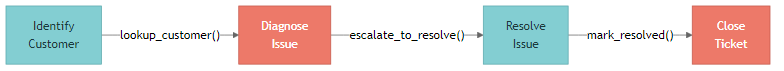
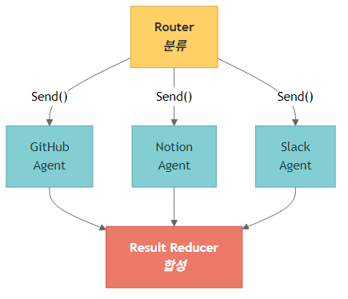
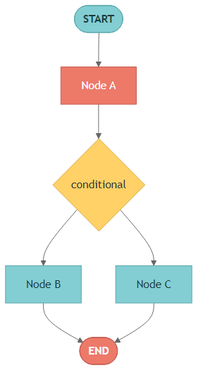
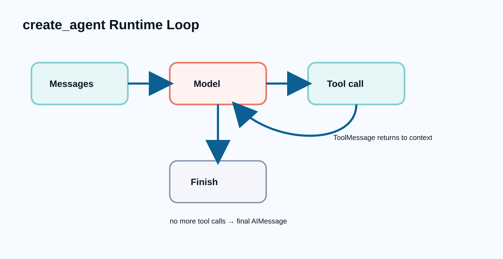
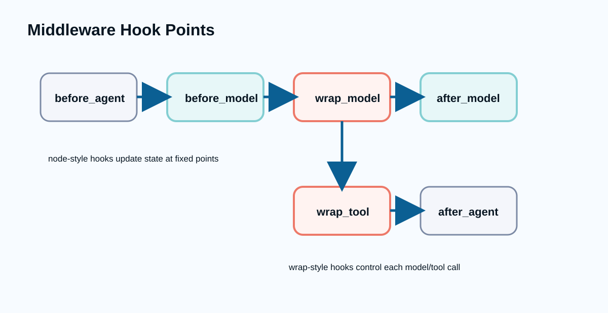
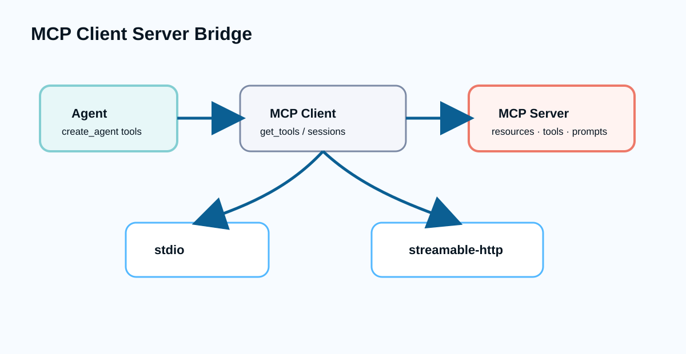

AI 에이전트 개발 기초
오리엔테이션
입문에서 만든 첫 에이전트를 기준점으로 삼고, LangChain v1의 모델·도구·메모리·운영 기능을 한 단계씩 확장합니다.
이번 트랙은 첫 에이전트를 프로덕션 에이전트로 키우는 흐름입니다
각 노트북은 새 프레임워크를 도입하기보다, 같은 LangChain 에이전트에 필요한 능력을 하나씩 붙입니다
MODEL
messages
TOOLS
schemas
STATE
memory
CONTROL
middleware
RUN
production
모델 호출·메시지 타입·토큰 사용량을 통일합니다.
도구 스키마와 구조화 출력을 정확하게 정의합니다.
단기·장기 메모리와 스트리밍 상태를 관리합니다.
미들웨어·HITL·멀티에이전트로 실행 흐름을 통제합니다.
테스트·배포·MCP·프론트엔드·가드레일로 운영합니다.
LangChain 트랙의 핵심 질문은 에이전트가 무엇을 할 수 있나가 아니라 운영 가능한 에이전트를 어떻게 설계하나입니다.
02_langchain은 13개 노트북으로 에이전트 생명주기를 전부 훑습니다
노트북 순서는 구현 편의가 아니라 운영 성숙도 순서입니다
| 구간 | 노트북 | 핵심 산출 |
|---|---|---|
| 기초 조립 | 01~04 소개·Quickstart·모델·도구 | 모델, 메시지, 도구, 구조화 출력을 갖춘 기본 에이전트 |
| 상태와 제어 | 05~07 메모리·미들웨어·HITL | 대화 상태, 런타임 컨텍스트, 사람 승인, 안전한 중단/재개 |
| 복합 패턴 | 08~09 멀티에이전트·워크플로·RAG | 서브에이전트, 핸드오프, 라우터, StateGraph, 검색 보강 |
| 운영 표면 | 10~13 프로덕션·MCP·프론트엔드·가드레일 | 테스트, 배포, 도구 서버, 스트리밍 UI, PII/HITL/커스텀 가드레일 |
LangChain v1 기준점
LangChain v1은 create_agent()를 중심으로 모델·도구·상태·미들웨어를 한 실행 그래프에 묶습니다.
LangChain은 단일 API가 아니라 세 레이어가 맞물린 실행 계층입니다
노트북의 3계층 그림은 LangChain·LangGraph·Deep Agents가 왜 함께 언급되는지 설명합니다

LangChain
에이전트 생성의 기준 API입니다. create_agent, @tool, ChatOpenAI가 여기에 속합니다.
LangGraph
LangChain 에이전트의 내부 실행 엔진입니다. 상태 그래프·체크포인터·스트리밍이 이 계층에서 제공됩니다.
Deep Agents
사전 구축된 장기 작업 하네스입니다. 빠른 프로토타이핑에 적합하지만, 기초 인터페이스는 LangChain을 공유합니다.
선택 기준
기본 요구엔 LangChain이 더 간단한 진입점이고, 결정론적 워크플로와 에이전틱 동작을 함께 커스터마이징해야 하면 LangGraph를, 대화 압축·가상 파일시스템·서브에이전트가 기본 포함된 배터리 포함형을 원하면 Deep Agents를 선택합니다.
create_agent()의 기본 동작은 ReAct 루프입니다
모델은 바로 답하지 않고, 필요하면 도구를 호출하고 결과를 관찰한 뒤 다시 판단합니다

Reasoning
사용자 메시지를 보고 지금 답할지, 도구를 쓸지 모델이 판단합니다.
Acting
도구 호출이 필요하면 스키마에 맞춰 인자를 만들고 도구를 실행합니다.
Observation
도구 결과가 ToolMessage로 돌아오면 모델이 다음 행동이나 최종 답변을 결정합니다.
v1의 기준 API는 create_agent, InMemorySaver, middleware입니다
예전 v0.x의 여러 체인·메모리 객체보다, v1은 에이전트 중심 인터페이스로 수렴합니다
| 항목 | v0.x 관성 | v1 기준 |
|---|---|---|
| 에이전트 생성 | create_react_agent() 등 여러 경로 | from langchain.agents import create_agent |
| 실행 엔진 | AgentExecutor 중심 | 내부적으로 LangGraph 그래프로 실행 |
| 메모리 | ConversationBufferMemory 계열 | InMemorySaver 같은 체크포인터 |
| 확장 지점 | 체인 바깥에서 로직 추가 | middleware=[...]로 모델·도구·에이전트 훅 주입 |
설치 확인은 네 가지 import 통과 여부로 시작합니다
노트북은 실습 시작 전에 create_agent, tool, ChatOpenAI, InMemorySaver를 기준 모듈로 확인합니다
에이전트
create_agent가 모든 실습의 기본 실행 단위입니다.
도구
@tool은 함수명을 도구 이름으로, docstring을 도구 설명으로 씁니다.
상태
InMemorySaver는 멀티턴 대화를 저장하는 첫 체크포인터입니다.
from langchain.agents import create_agent from langchain.tools import tool from langchain_openai import ChatOpenAI from langgraph.checkpoint.memory import InMemorySaver print("LangChain v1 핵심 모듈 import 성공")
Quickstart — 첫 에이전트
@tool 함수와 create_agent()를 연결하고, invoke·stream·thread_id·context를 한 번에 체험합니다.
함수에 @tool을 붙이면 모델이 호출할 수 있는 도구가 됩니다
docstring과 타입 힌트는 사람이 읽는 주석이 아니라 모델이 인자를 고르는 스키마입니다
함수명
기본 도구 이름이 됩니다. 짧고 동사형으로 둡니다.
docstring
모델이 도구의 용도를 이해하는 핵심 설명입니다.
타입 힌트
도구 호출 인자를 정수·문자열 같은 명확한 타입으로 제한합니다.
from langchain.tools import tool @tool def add(a: int, b: int) -> int: """두 수를 더합니다.""" return a + b @tool def multiply(a: int, b: int) -> int: """두 수를 곱합니다.""" return a * b
create_agent()는 모델·도구·시스템 프롬프트를 하나의 그래프로 묶습니다
생성된 객체는 내부적으로 LangGraph 그래프이며 invoke와 stream을 바로 제공합니다
model
노트북 기준 기본 모델은 ChatOpenAI(model='gpt-5.4')입니다.
tools
도구 리스트는 에이전트가 선택 가능한 행동 공간입니다.
system_prompt
도구를 언제 어떻게 쓸지에 대한 운영 규칙입니다.
from langchain.agents import create_agent agent = create_agent( model=model, tools=[add, multiply], system_prompt="당신은 수학 도우미입니다. 제공된 도구를 사용하여 계산하세요.", ) result = agent.invoke({ "messages": [{"role": "user", "content": "12 * 8에 5를 더하세요."}] }) print(result["messages"][-1].content)
stream_mode='updates'는 에이전트의 단계별 움직임을 보여줍니다
최종 답만 보는 invoke와 달리, stream은 모델 노드와 도구 노드의 업데이트를 순서대로 확인하게 해줍니다
진행 표시
도구 호출과 최종 응답을 실시간 로그처럼 보여줄 수 있습니다.
디버깅
어느 노드에서 잘못된 인자가 만들어졌는지 확인하기 쉽습니다.
UI 연결
이후 프론트엔드 스트리밍의 기본 감각이 됩니다.
for chunk in agent.stream( {"messages": [{"role": "user", "content": "12 * 8을 계산한 다음 결과에 5를 더하세요."}]}, stream_mode="updates", ): for node_name, update in chunk.items(): print(f"--- {node_name} ---") if "messages" in update: print(update["messages"][-1].content)
멀티턴 대화는 checkpointer와 thread_id가 함께 있어야 유지됩니다
체크포인터는 상태를 저장하고, thread_id는 어떤 대화 세션을 이어갈지 지정합니다
checkpointer
InMemorySaver()가 에이전트 상태를 메모리에 보관합니다.
thread_id
동일한 thread_id를 쓰면 이전 메시지를 이어받습니다.
격리
다른 thread_id는 완전히 별도 대화로 취급됩니다.
from langgraph.checkpoint.memory import InMemorySaver agent_with_memory = create_agent( model=model, tools=[add, multiply], system_prompt="당신은 수학 도우미입니다.", checkpointer=InMemorySaver(), ) config = {"configurable": {"thread_id": "math-session-1"}} agent_with_memory.invoke({"messages": [{"role": "user", "content": "7 * 6은?"}]}, config=config) result = agent_with_memory.invoke({"messages": [{"role": "user", "content": "이전 결과에 10을 더하세요."}]}, config=config)
context_schema는 호출별 메타데이터를 메시지 이력과 분리합니다
사용자 ID·locale·권한 같은 값은 messages에 섞지 말고 context로 넣는 편이 안전합니다
상태와 분리
사용자 메타데이터가 대화 히스토리를 오염시키지 않습니다.
타입 안정성
dataclass로 런타임 컨텍스트 모양을 고정합니다.
이름 규칙
에이전트 name은 노트북처럼 snake_case가 트레이싱과 라우팅에 깔끔합니다.
from dataclasses import dataclass @dataclass class Context: user_id: str locale: str = "ko-KR" ctx_agent = create_agent( model=model, tools=[add, multiply], system_prompt="사용자에 맞춰 답하세요.", context_schema=Context, name="research_assistant", ) ctx_agent.invoke( {"messages": [{"role": "user", "content": "3 + 4는?"}]}, context=Context(user_id="u-42", locale="ko-KR"), )
Tavily 검색 도구를 붙이면 에이전트가 최신 정보에 직접 접근합니다
TAVILY_API_KEY가 있을 때만 실행되는 선택 실습으로, 웹 검색 결과를 도구 호출 흐름에 그대로 연결합니다
검색 도구
TavilySearch(max_results=3)는 에이전트가 그대로 호출할 수 있는 검색 도구입니다.
선택 실행
TAVILY_API_KEY 유무로 셀 실행을 분기해 키가 없어도 노트북이 끊기지 않습니다.
조합
검색 도구도 다른 도구와 동일하게 tools 리스트에 넣어 create_agent에 전달합니다.
# Tavily API 키가 있는 경우에만 실행 if os.environ.get("TAVILY_API_KEY"): from langchain_tavily import TavilySearch search_tool = TavilySearch(max_results=3) search_agent = create_agent( model=model, tools=[search_tool], system_prompt="당신은 리서치 어시스턴트입니다. 웹 검색을 통해 질문에 답하세요.", ) result = search_agent.invoke( {"messages": [{"role": "user", "content": "LangChain의 최신 버전은 무엇인가요?"}]}, config=lf_config, ) print("검색 에이전트 응답:") print(result["messages"][-1].content) else: print("TAVILY_API_KEY가 설정되지 않았습니다. 이 셀을 건너뜁니다.")
모델과 메시지
프로바이더가 달라도 invoke·stream·batch와 메시지 타입을 일관되게 다루는 법을 익힙니다.
init_chat_model()은 프로바이더 문자열 하나로 모델 초기화를 통일합니다
OpenAI는 ChatOpenAI를 직접 써도 되고, 여러 프로바이더를 바꾸려면 init_chat_model이 편합니다
| 프로바이더 | 모델 문자열 | 필요 패키지 |
|---|---|---|
| OpenAI | openai:gpt-5.4 | langchain-openai + OPENAI_API_KEY |
| Anthropic | anthropic:claude-sonnet-4-6 | langchain-anthropic + ANTHROPIC_API_KEY |
| google:gemini-2.5-flash-lite | langchain-google-genai + GOOGLE_API_KEY | |
| Ollama | ollama:llama3 | 로컬 실행 환경 |
모델 호출은 invoke·stream·batch 세 패턴으로 나뉩니다
같은 모델 객체라도 사용자가 기다리는 방식과 처리량 요구에 따라 호출법이 달라집니다
| 메서드 | 반환 | 언제 쓰나 |
|---|---|---|
| invoke() | AIMessage | 단일 입력에 대한 완성 응답이 필요할 때 |
| stream() | Iterator[AIMessageChunk] | 채팅 UI처럼 토큰 단위 응답을 보여줄 때 |
| batch() | List[AIMessage] | 여러 입력을 병렬로 처리하고 max_concurrency를 걸 때 |
메시지 타입은 대화의 역할과 도구 결과를 명확히 분리합니다
문자열 하나만 넘기기보다 메시지 리스트를 쓰면 시스템 지시·사용자 입력·도구 결과를 안정적으로 재현할 수 있습니다
| 타입 | 역할 | 슬라이드에서 기억할 점 |
|---|---|---|
| SystemMessage | 시스템 지시 | 모델의 톤·정책·도구 사용 기준을 정합니다 |
| HumanMessage | 사용자 입력 | 사용자가 방금 보낸 질문입니다 |
| AIMessage | 모델 응답 | 텍스트뿐 아니라 tool_calls와 usage_metadata를 가질 수 있습니다 |
| ToolMessage | 도구 결과 | 모든 tool_call에는 짝이 되는 ToolMessage가 필요합니다 |
운영 모델은 출력 포맷·재시도·타임아웃을 초기화 시점에 고정합니다
content_blocks와 usage metadata를 표준화하면 멀티모달·툴콜·비용 추적 코드가 단순해집니다
output_version
output_version='v1' 또는 LC_OUTPUT_VERSION=v1로 표준 직렬화를 켭니다.
Usage callback
UsageMetadataCallbackHandler로 호출 단위 토큰·캐시 통계를 모읍니다.
회복력
max_retries와 timeout은 프로덕션 기본값입니다.
from langchain_openai import ChatOpenAI from langchain_core.callbacks import UsageMetadataCallbackHandler model = ChatOpenAI( model="gpt-5.4", output_version="v1", max_retries=3, timeout=30, ) usage = UsageMetadataCallbackHandler() response = model.invoke("LangChain을 한 문장으로 설명해 주세요.", config={"callbacks": [usage]}) print(response.content_blocks) print(usage.usage_metadata)
텍스트와 이미지를 한 메시지에 함께 담을 수 있습니다
HumanMessage의 content에 텍스트·이미지 블록을 리스트로 나열하면 비전 모델이 두 입력을 동시에 해석합니다
콘텐츠 블록
content를 리스트로 두고 type: text, type: image_url 블록을 나열합니다.
이미지 전달
image_url은 URL 또는 base64로 전달하며, 비전을 지원하는 모델에서만 동작합니다.
표준 출력
output_version='v1'을 지정하면 응답이 content_blocks로 표준화되어 텍스트·이미지·툴콜이 분리 노출됩니다.
from langchain.messages import HumanMessage from langchain_openai import ChatOpenAI vision_model = ChatOpenAI(model="gpt-5.4", output_version="v1") multimodal_msg = HumanMessage( content=[ {"type": "text", "text": "이 이미지에서 무엇이 보이나요?"}, { "type": "image_url", "image_url": {"url": "https://upload.wikimedia.org/wikipedia/commons/thumb/a/a7/Camponotus_flavomarginatus_ant.jpg/320px-Camponotus_flavomarginatus_ant.jpg"}, }, ] ) response = vision_model.invoke([multimodal_msg]) for block in response.content_blocks: print(f"[{block['type']}] {block}")
config 하나로 트레이스 식별과 동시 실행 상한을 함께 겁니다
config 파라미터는 콜백뿐 아니라 트레이싱 메타데이터, batch 동시성 제한까지 함께 전달합니다
run_name / tags
run_name은 트레이스에서 이 호출을 식별하고, tags는 필터링 가능한 라벨을 붙입니다.
metadata
metadata에 임의의 키-값 컨텍스트(실험명, 사용자 ID 등)를 실어 트레이스에 남깁니다.
max_concurrency
batch() 호출에서 max_concurrency로 동시 실행 상한을 정해 토큰 폭주를 막습니다.
runtime_cfg = {
"run_name": "intro-greeting",
"tags": ["demo", "ch03"],
"metadata": {"experiment": "v1_runtime_config"},
"max_concurrency": 5,
}
# 단일 호출 — run_name/tags/metadata가 트레이스에 노출됩니다.
resp = model.invoke("한국어로 짧게 인사해 주세요.", config=runtime_cfg)
# batch — max_concurrency로 동시 실행 상한을 정합니다.
batched = model.batch(
[f"숫자 {i}을 한글로 적어 주세요." for i in range(1, 7)],
config=runtime_cfg,
)프롬프트 캐싱은 긴 prefix를 반복 호출할 때 비용과 지연을 줄입니다
노트북은 implicit caching과 explicit caching을 함께 설명합니다
- Implicit caching. 프로바이더가 동일 prefix를 자동 감지합니다
- –OpenAI 통합은 provider별 캐시 옵션이 늘었습니다. 반복 prefix가 큰 호출은 prompt_cache_options 같은 설정을 함께 검토합니다
- –코드 변경이 적어 빠르게 켤 수 있지만, 캐시 단위 제어는 프로바이더에 맡깁니다
- Explicit caching. 호출자가 캐시 단위를 명시합니다
- –Anthropic 계열은 prompt_cache_key나 cache_control 블록으로 캐시 경계를 지정합니다
- –캐시 hit 여부는 usage_metadata.input_token_details.cache_read 같은 필드로 추적합니다
도구와 구조화 출력
함수에 @tool을 붙이고 Pydantic으로 입력 스키마를 정의한 뒤, 도구 실행 결과를 구조화된 출력으로 연결하는 흐름을 봅니다.
Pydantic args_schema는 복잡한 도구 입력을 모델에게 명확히 설명합니다
단순 타입 힌트로 부족하면 Field 설명과 기본값을 도구 스키마에 포함합니다
Field 설명
각 파라미터가 무엇인지 모델에게 전달합니다.
기본값
모델이 매번 모든 인자를 채우지 않아도 안전한 값을 씁니다.
스키마 확인
args_schema.model_json_schema()로 모델에게 보이는 형태를 점검합니다.
from pydantic import BaseModel, Field from langchain.tools import tool class SearchQuery(BaseModel): query: str = Field(description="검색 쿼리 문자열") max_results: int = Field(default=5, description="반환할 최대 결과 수") category: str = Field(default="all", description="all, tech, science, news") @tool(args_schema=SearchQuery) def search_database(query: str, max_results: int = 5, category: str = "all") -> str: """고급 필터링 옵션으로 데이터베이스를 검색합니다.""" return f"{category}: {query} 결과 {max_results}개"
ToolRuntime은 도구 안에서 현재 state와 실행 메타데이터를 꺼내는 통로입니다
도구 인자로 받으면 안 되는 내부 정보는 ToolRuntime으로 주입받습니다
runtime.state
현재 메시지 이력과 에이전트 상태를 읽습니다.
execution_info
thread_id, run_id, attempt 같은 디버깅 키를 얻습니다.
server_info
LangGraph Platform 같은 호스팅 환경에서는 assistant_id, user 정보가 들어올 수 있습니다.
from langchain.tools import tool, ToolRuntime @tool def get_user_info(runtime: ToolRuntime) -> str: """현재 대화에 대한 정보를 가져옵니다.""" messages = runtime.state["messages"] info = getattr(runtime, "execution_info", None) thread_id = getattr(info, "thread_id", "local") if info else "local" return f"thread={thread_id}, messages={len(messages)}"
Command를 반환하는 도구는 ToolMessage를 함께 넣어야 합니다
상태 업데이트만 하고 ToolMessage를 빠뜨리면 모델은 도구 응답을 못 받은 것으로 보고 같은 호출을 반복할 수 있습니다
Command.update
메시지 밖의 state 필드를 갱신할 수 있습니다.
ToolMessage
도구 호출 ID와 짝을 맞춰 모델에게 실행 결과를 돌려줍니다.
runtime.tool_call_id
현재 tool_call과 ToolMessage를 연결하는 키입니다.
from langgraph.types import Command from langchain.messages import ToolMessage from langchain.tools import tool, ToolRuntime @tool def remember_user_pref(theme: str, runtime: ToolRuntime) -> Command: """사용자 테마 선호를 state에 기록합니다.""" return Command(update={ "user_theme": theme, "messages": [ToolMessage( content=f"테마를 {theme}(으)로 저장했습니다.", tool_call_id=runtime.tool_call_id, )], })
구조화 출력은 모델 직접 방식과 에이전트 response_format 방식이 있습니다
모델만 쓸 때는 with_structured_output, 에이전트 최종 답을 강제할 때는 ToolStrategy나 ProviderStrategy를 씁니다
직접 모델
model.with_structured_output(MySchema)는 에이전트 없이 바로 스키마 객체를 돌려줍니다.
ToolStrategy
도구 호출 메커니즘으로 구조화하므로 모든 모델에서 동작하고 안정적입니다.
ProviderStrategy
지원 모델(OpenAI·Claude·Grok)의 네이티브 구조화 출력이라 더 빠르고 정확합니다. strict 옵션은 langchain>=1.2부터 지원됩니다.
from langchain.agents.structured_output import ToolStrategy from dataclasses import dataclass @dataclass class CalculationResult: expression: str result: float agent_structured = create_agent(model=model, tools=[calculate], response_format=ToolStrategy(CalculationResult))
from langchain.agents.structured_output import ProviderStrategy contact_info_schema = { "type": "object", "properties": {"name": {"type": "string"}, "email": {"type": "string"}}, "required": ["name", "email"], } agent = create_agent(model="gpt-5.4", response_format=ProviderStrategy(contact_info_schema))
메모리와 스트리밍
대화를 저장하는 방법과 실행 상태를 실시간으로 보여주는 방법을 실제 운영 관점에서 구분합니다.
단기 메모리는 checkpointer가 저장하고 thread_id가 대화를 고릅니다
같은 에이전트라도 thread_id가 다르면 서로 다른 대화로 격리됩니다
대화 상태
체크포인터는 메시지 히스토리와 실행 상태를 저장합니다.
세션 키
configurable.thread_id가 복원할 대화를 지정합니다.
개발용
InMemorySaver는 프로세스가 꺼지면 사라지므로 실서비스는 영속 저장소가 필요합니다.
from langgraph.checkpoint.memory import InMemorySaver agent = create_agent( model=model, tools=[get_time], system_prompt="대화 맥락을 기억하세요.", checkpointer=InMemorySaver(), ) config = {"configurable": {"thread_id": "session-1"}} agent.invoke({"messages": [{"role": "user", "content": "제 이름은 앨리스입니다."}]}, config=config) result = agent.invoke({"messages": [{"role": "user", "content": "제 이름이 뭔가요?"}]}, config=config)
단기 메모리와 장기 메모리는 저장 대상과 접근 방식이 다릅니다
대화 이력은 checkpointer가 자동으로, 사용자 선호도는 store를 도구에서 명시적으로 다룹니다
| 구분 | Checkpointer | Store |
|---|---|---|
| 범위 | 하나의 thread_id 안 | 여러 세션·여러 thread를 가로지름 |
| 저장 대상 | 메시지 히스토리와 그래프 상태 | 사용자 선호도, 프로필, 학습 데이터 |
| 접근 방식 | 에이전트가 자동 복원 | 도구가 runtime.store로 명시 접근 |
| 운영 권장 | Postgres 체크포인터 | PostgresStore + 사용자별 namespace |
장기 메모리는 namespace에 user_id를 넣어 사용자별로 격리합니다
store를 create_agent에 넘기지 않으면 도구 내부 runtime.store는 None이므로 도구가 실패합니다
namespace
("preferences", user_id)처럼 튜플로 다층 격리를 만듭니다.
context
사용자 ID는 메시지에서 파싱하지 말고 runtime.context에서 받습니다. tool 인자로 넘기지 않는 이유는 LLM에 노출되는 도구 시그니처를 깨끗하게 유지하고, 멀티테넌트 격리를 에이전트 작성자가 중앙에서 통제하기 위해서입니다.
영속화
운영 환경에서는 langgraph-checkpoint-postgres 계열 저장소를 검토합니다.
from dataclasses import dataclass from langgraph.store.memory import InMemoryStore from langchain.tools import tool, ToolRuntime store = InMemoryStore() @dataclass class Context: user_id: str @tool def save_preference(key: str, value: str, runtime: ToolRuntime[Context]) -> str: namespace = ("preferences", runtime.context.user_id) runtime.store.put(namespace, key, {"value": value}) return f"저장 완료: {key}={value}"
긴 대화는 trim_messages를 before_model 미들웨어로 연결해 줄입니다
대화를 무한히 누적하면 비용과 지연이 늘어나므로, 모델 호출 직전에 토큰 예산에 맞게 잘라냅니다
strategy='last'
최근 메시지를 우선 유지합니다.
include_system
시스템 메시지는 항상 보존합니다.
request.override
모델에 들어가는 메시지만 교체하고 원래 state 구조는 유지합니다.
from langchain.messages import trim_messages from langchain.agents.middleware import before_model trimmer = trim_messages( max_tokens=1000, strategy="last", token_counter=model, include_system=True, ) @before_model def trim_context(request): trimmed = trimmer.invoke(request.state["messages"]) return request.override(messages=trimmed)
stream_mode는 무엇을 실시간으로 보여줄지 결정합니다
채팅 UI, 디버그 패널, 진행률 이벤트는 같은 스트리밍이라도 필요한 데이터가 다릅니다
| 모드 | 보이는 것 | 주 용도 |
|---|---|---|
| values | 각 단계의 전체 상태 | 디버깅과 상태 추적 |
| updates | 각 노드의 변경분 | 에이전트 진행 상황 표시 |
| messages | 토큰 단위 메시지 | 채팅 버블 렌더링 |
| custom | 도구·미들웨어가 직접 보낸 이벤트 | 진행률, 중간 결과, 도메인 이벤트 |
v2 스트리밍은 GraphOutput과 특수 청크 규칙을 함께 이해해야 합니다
노트북은 백엔드 표준 패턴으로 version='v2'와 여러 모드 동시 수신을 다룹니다
- GraphOutput. dict처럼 보지 말고 속성으로 접근합니다
- –result.value에 최종 상태가 들어갑니다
- –result.interrupts에 HITL 중단 요청이 들어갑니다
- tool_calls 누적. 마지막 청크까지 기다립니다
- –토큰 스트리밍 중 tool call 인자는 부분 JSON으로 나뉘어 옵니다
- –chunk_position == 'last'가 보일 때 완전한 인자 형태라고 판단합니다
- custom mode. 도구가 진행률을 직접 흘립니다
- –도구 내부에서 get_stream_writer()를 호출해 검색 시작·완료 같은 이벤트를 보냅니다
미들웨어 파이프라인
모델 호출 전후, 모델 호출 래핑, 도구 호출 래핑, 동적 프롬프트를 한 구조로 이해합니다.
미들웨어는 모델과 도구 사이에 운영 로직을 주입합니다
입력 검증, 요약, 폴백, 캐싱, 로깅, 가드레일은 에이전트 본문보다 미들웨어로 분리하는 편이 좋습니다

before_model
모델 호출 전에 메시지를 검증하거나 수정합니다.
wrap_model_call
모델 호출 자체를 감싸 재시도·폴백·캐싱을 구현합니다.
wrap_tool_call
도구 실행 전후에 권한·로깅·에러 처리를 넣습니다.
빌트인 미들웨어는 운영에서 반복되는 패턴을 바로 제공합니다
직접 훅을 쓰기 전에 노트북의 기본 카탈로그부터 확인합니다
| 미들웨어 | 용도 | 트리거·특징 |
|---|---|---|
| SummarizationMiddleware | 긴 대화 요약 | trigger=('messages', 10)처럼 발동 조건 지정 |
| ModelFallbackMiddleware | 모델 장애 시 폴백 | primary 실패 후 backup 모델 순차 호출 |
| ContextEditingMiddleware | 오래된 tool_use 제거 | trigger=('tokens', 100_000), keep 규칙 |
| AnthropicPromptCachingMiddleware / BedrockPromptCachingMiddleware | Claude·Bedrock 캐싱 (프로바이더 전용) | 시스템 메시지와 도구 정의가 큰 경우 비용 절감 |
before_model과 after_model은 모델 호출 주변의 관측 지점입니다
입력 로깅과 출력 로깅은 에이전트 도구 로직을 건드리지 않고도 붙일 수 있습니다
before_model
모델에 전달될 메시지 개수, 입력 정책 위반을 확인합니다.
after_model
모델 응답 내용과 tool_calls를 기록하거나 후처리합니다.
조합
여러 미들웨어를 리스트 순서대로 넣어 파이프라인을 만듭니다.
from langchain.agents.middleware import before_model @before_model def log_model_input(state, runtime): msg_count = len(state["messages"]) print(f"모델 입력: {msg_count}개 메시지")
from langchain.agents.middleware import after_model @after_model def log_model_output(state, runtime): msg = state["messages"][-1] if getattr(msg, "tool_calls", None): print([tc["name"] for tc in msg.tool_calls])
wrap_model_call은 request.override로 모델 요청을 안전하게 바꿉니다
ModelRequest를 직접 mutate하지 않고 새 요청을 만들어 handler에 넘기는 것이 노트북의 권장 패턴입니다
변경 가능 필드
messages, tools, system_message, response_format을 override할 수 있습니다.
폴백과 제한
비로그인 사용자의 도구를 제한하거나 모델 호출 재시도를 구현할 수 있습니다.
불변성
원본 요청을 건드리지 않아 미들웨어 조합이 안전해집니다.
from langchain.agents.middleware import wrap_model_call, ModelRequest, ModelResponse @wrap_model_call def restrict_tools_for_anonymous(request: ModelRequest, handler) -> ModelResponse: user_id = request.runtime.context.get("user_id") if hasattr(request, "runtime") else None if not user_id: safe_tools = [t for t in request.tools if t.name == "search"] return handler(request.override( tools=safe_tools, system_message="비로그인 사용자를 돕는 제한된 어시스턴트입니다.", )) return handler(request)
wrap_tool_call은 handler 앞뒤로 도구 실행을 감쌉니다
wrap_model_call이 모델 호출을 감싸는 것과 동일한 패턴을 도구 실행에 적용해 타이밍·로깅·에러 처리를 끼워 넣습니다
ToolCallRequest
request.tool_call['name'], request.tool_call['args']로 실행 대상 도구와 인자를 읽습니다.
handler 호출
handler(request)를 호출해야 실제 도구가 실행되며, 호출 전후로 시간을 재면 도구별 성능을 측정할 수 있습니다.
예외 처리
도구 실행이 실패하면 예외를 잡아 로깅한 뒤 다시 던지거나, ToolMessage로 변환해 에이전트에 안전하게 알릴 수 있습니다.
from langchain.agents.middleware import wrap_tool_call import time @wrap_tool_call def tool_timing_logger(request, handler): """실행 시간을 측정하고 도구 입출력을 로깅합니다.""" tool_name = request.tool_call["name"] start = time.perf_counter() try: result = handler(request) elapsed = time.perf_counter() - start print(f"[도구 완료] {tool_name} | {elapsed:.3f}s") return result except Exception as e: elapsed = time.perf_counter() - start print(f"[도구 실패] {tool_name} | {elapsed:.3f}s | {e}") raise agent_tool_logged = create_agent( model=model, tools=[search], middleware=[tool_timing_logger], )
dynamic_prompt는 요청마다 시스템 프롬프트를 새로 만듭니다
현재 시각, 사용자 역할, 테넌트 정책처럼 매 호출 달라지는 지침을 프롬프트에 반영합니다
런타임 지침
동일 에이전트라도 요청 컨텍스트에 따라 다른 시스템 메시지를 씁니다.
A/B 테스트
프롬프트 변형을 미들웨어 레벨에서 통제할 수 있습니다.
역할 전환
후반의 핸드오프 패턴에서도 역할별 프롬프트 교체에 활용됩니다.
from langchain.agents.middleware import dynamic_prompt from datetime import datetime @dynamic_prompt def add_datetime_context(request): now = datetime.now().strftime("%Y-%m-%d %H:%M:%S") return f"현재 날짜와 시간: {now} 당신은 유용한 어시스턴트입니다." agent_dynamic = create_agent( model=model, tools=[search], middleware=[add_datetime_context], )
wrap_tool_call은 상태 스키마가 필요한 정책과 분리해서 설계합니다
도구 오류 처리만 할 때와 상태를 추가로 기록할 때의 계약이 다릅니다
기본 wrapper
단순 로깅·재시도·오류 변환은 기존 wrap_tool_call 패턴을 유지합니다.
state_schema
도구 호출 결과를 커스텀 상태 필드에 남길 때만 추가 state schema를 선언합니다.
검수 기준
상태 업데이트가 필요한지 먼저 묻고, 필요 없으면 미들웨어를 가볍게 둡니다.
from typing_extensions import TypedDict from langchain.agents.middleware import wrap_tool_call class AuditState(TypedDict): tool_audit: list[str] @wrap_tool_call(state_schema=AuditState) def audit_tool(request, handler): result = handler(request) name = request.tool_call["name"] return {"messages": [result], "tool_audit": [name]}
프로바이더 설정은 공통 모델 옵션과 벤더 전용 옵션을 분리합니다
OpenAI·Google 최신 옵션은 같은 create_agent 표면 안에서도 검증 위치가 다릅니다
| 항목 | 어디에 둠 | 수업 판단 |
|---|---|---|
| prompt_cache_options | OpenAI 모델 초기화 또는 호출 설정 | 긴 prefix 반복 호출에서 비용·지연을 확인 |
| Responses 계열 옵션 | OpenAI provider 설정 | 메시지 content 형식 회귀 테스트와 함께 확인 |
| reasoning_effort / thinking_config | Google provider 설정 | 별칭과 실제 모델 지원 범위를 분리 |
| 공통 옵션 | temperature, timeout, max_tokens | provider 전용 옵션과 섞어 설명하지 않음 |
Generative UI와 AG-UI는 코어 에이전트와 별도 통합 표면입니다
기존 스트리밍 수업에는 개념 경계만 연결하고 React·서버 의존성은 통합 트랙에서 검증합니다
| 표면 | 역할 | 덱 반영 |
|---|---|---|
| stream_events / useStream | 메시지·도구 호출·interrupt를 UI로 투영 | 현재 프론트엔드 스트리밍 슬라이드에서 유지 |
| Generative UI | 모델 출력이 UI 컴포넌트 선택에 관여 | React 실행환경이 필요하므로 별도 통합 항목 |
| AG-UI | 에이전트와 UI 사이의 이벤트 프로토콜 | 코어 LangChain API 설명과 섞지 않음 |
가드레일 훅은 예외보다 jump_to='end'로 안전하게 끝내는 편이 좋습니다
위험 입력을 감지했을 때 사용자에게 안내 메시지를 남기고 그래프를 종료할 수 있습니다
- @hook_config(can_jump_to=[...])로 허용 점프 대상을 선언합니다
- –end. 즉시 종료하고 안내 메시지를 남깁니다
- –tools. 도구 노드로 점프합니다
- –model. 모델 노드로 재진입합니다
- 비동기 환경에서는 a- 프리픽스 훅을 씁니다
- –abefore_model, aafter_model, awrap_model_call, adynamic_prompt
HITL과 런타임 컨텍스트
위험한 도구 호출 앞에서 사람이 승인·거절할 수 있게 하는 HITL(Human-in-the-Loop) 패턴과, 도구에 실행 정보를 전달하는 ToolRuntime을 살펴봅니다.
HITL은 위험한 도구 호출 직전에 그래프를 멈춥니다
이메일 전송·파일 삭제·결제처럼 되돌리기 어려운 행동은 모델 판단만으로 실행하지 않습니다

제안
모델이 도구 호출과 인자를 만듭니다.
중단
HumanInTheLoopMiddleware가 interrupt를 발생시킵니다.
재개
사람의 decision을 Command(resume=...)로 넣어 실행을 이어갑니다.
HumanInTheLoopMiddleware는 checkpointer와 함께 써야 중단 후 재개됩니다
중단 상태를 저장할 체크포인터가 없으면 승인 뒤 같은 지점에서 이어갈 수 없습니다
interrupt_on
도구별 승인 필요 여부와 허용 decision을 지정합니다.
checkpointer
InMemorySaver가 중단된 그래프 상태를 보관합니다.
thread_id
재개할 때도 같은 thread_id를 사용해야 합니다.
from langchain.agents.middleware import HumanInTheLoopMiddleware from langgraph.checkpoint.memory import InMemorySaver hitl = HumanInTheLoopMiddleware( interrupt_on={ "send_email": True, "delete_file": True, } ) agent = create_agent( model=model, tools=[send_email, delete_file], middleware=[hitl], checkpointer=InMemorySaver(), )
Command(resume)의 decision은 approve·edit·reject·respond 네 가지입니다
decision 리스트 순서는 interrupt의 action_requests 순서와 맞아야 하고, edit로 인자를 바꿀 때는 보수적으로 수정해야 합니다입니다. 원래 인자를 크게 바꾸면 모델이 접근 방식을 재평가해 도구를 여러 번 실행할 수 있습니다
| decision | 의미 | 결과 |
|---|---|---|
| approve | 도구를 그대로 실행 | 모델이 만든 인자를 승인합니다 |
| edit | 도구 인자를 수정 후 실행 | 수신자·금액·파일명 같은 위험 인자를 고칩니다 |
| reject | 도구 실행을 거부 | 거부 사유가 모델에게 전달됩니다 |
| respond | 사람이 직접 답변 | 도구 대신 사람 답변이 ToolMessage로 전달됩니다 |
resume은 같은 config로 Command를 다시 invoke하는 두 단계 패턴입니다
첫 invoke에서 interrupts를 확인하고, 두 번째 invoke에서 사람이 내린 결정을 넣습니다
1단계
도구 호출 제안에서 그래프가 멈추고 result.interrupts가 생깁니다.
2단계
Command(resume={...})를 같은 config로 넣어 재개합니다.
GraphOutput
v2 결과는 result.value와 result.interrupts로 봅니다.
from langgraph.types import Command config = {"configurable": {"thread_id": "hitl-demo"}} result = agent.invoke( {"messages": [{"role": "user", "content": "팀에 이메일을 보내세요."}]}, config=config, version="v2", ) print(result.interrupts) result = agent.invoke( Command(resume={"decisions": [{"type": "approve"}]}), config=config, version="v2", )
ToolRuntime[T]는 사용자 컨텍스트와 실행 메타데이터를 도구에 주입합니다
권한 확인, 감사 로그, 멀티테넌트 분기는 도구 인자 대신 런타임 정보로 처리합니다
context_schema
호출자가 넣는 사용자 컨텍스트 타입을 고정합니다.
execution_info
thread_id, run_id, attempt를 로깅에 씁니다.
server_info
배포 환경에서는 assistant_id, graph_id, user를 권한 분리에 활용합니다.
from dataclasses import dataclass from langchain.tools import tool, ToolRuntime @dataclass class UserContext: user_id: str role: str @tool def check_permissions(action: str, runtime: ToolRuntime[UserContext]) -> str: ctx = runtime.context info = runtime.execution_info allowed = ctx.role == "admin" or action == "read" return f"user={ctx.user_id}, thread={info.thread_id}, allowed={allowed}"
멀티에이전트 패턴
여러 에이전트를 두는 다섯 가지 방식 중 요구사항에 맞는 패턴을 고르고, 불필요한 오버헤드를 피하는 법을 봅니다.
멀티에이전트 패턴은 라우팅 주체와 상태 공유 방식이 다릅니다
에이전트를 여러 개 만든다고 항상 좋아지는 것은 아닙니다. 단순 작업은 single agent가 기준입니다
| 패턴 | 라우팅 주체 | 적합한 상황 |
|---|---|---|
| Subagents | 메인 에이전트 | 독립 작업을 반복·병렬로 위임하고 결과만 취합 |
| Handoffs | 도구 호출·상태 전환 | 대화 상태를 다음 역할로 넘기는 순차 멀티홉 |
| Skills | 단일 에이전트 | 프롬프트를 바꿔 하나의 에이전트가 여러 역할 수행 |
| Router | 분류기 | 입력을 도메인별 처리기로 결정론적 분배 |
| Custom | 개발자 정의 | 다른 패턴으로 표현하기 어려운 복잡한 워크플로 |
Subagents는 감독자가 전문 에이전트를 도구처럼 호출하는 패턴입니다
서브에이전트의 내부 추론은 격리되고, 메인 에이전트는 최종 결과만 받아 컨텍스트를 아낍니다

격리
각 subagent 호출은 독립 컨텍스트에서 실행됩니다.
반복 작업
검색·분석을 여러 번 호출해 결과를 모으는 작업에 적합합니다.
local history
checkpointer=True로 서브에이전트만의 히스토리를 유지할 수 있습니다.
서브에이전트가 많아지면 노출 방식도 설계해야 합니다
도구 슬롯이 많아질수록 모델이 무엇을 호출해야 하는지 헷갈립니다
- 단일 dispatch 도구로 묶는 세 가지 방식
- –System prompt 열거. 10개 미만일 때 단순합니다
- –Literal 인자 제약. 10~30개 규모에서 tool schema가 enum을 강제합니다
- –Tool-based discovery. 30개 이상이면 list_subagents와 describe_subagent로 동적 탐색합니다
- 장시간 서브 작업은 3-tool 패턴으로 비동기화합니다
- –start_job. 작업 제출 후 job_id 반환
- –check_status. pending/running/done/failed 확인
- –get_result. 완료 결과 회수
Handoff는 결과 위임이 아니라 대화 상태 전환입니다
고객지원처럼 사용자가 같은 대화에서 부서가 넘어간 느낌을 받아야 할 때 handoff를 씁니다

상태 전달
메시지 히스토리가 다음 역할로 전달됩니다.
Command(goto)
그래프 노드 간 전환을 명시할 수 있습니다.
단일 에이전트 대안
노트북은 wrap_model_call로 role에 따라 프롬프트·도구를 교체하는 방식을 권장합니다.
Router는 분류 후 Send로 여러 도메인에 fan-out(병렬 분산)할 때 강해집니다
단일 분기만 한다면 일반 조건부 엣지와 큰 차이가 없습니다. 진짜 장점은 병렬 분배입니다

분류
입력을 math, code, general 같은 도메인으로 나눕니다.
Send
여러 노드에 동시에 payload를 보내 병렬 처리합니다.
취합
도메인별 결과를 fan-in하여 최종 답변을 만듭니다.
Skills는 에이전트를 그대로 두고 프롬프트만 갈아 끼웁니다
별도 에이전트나 그래프 전환 없이, 도구 호출로 전문 지침을 그때그때 불러오는 점진적 공개 패턴입니다
단일 에이전트
skill_agent 하나가 번역·요약·코딩 역할을 모두 처리합니다.
점진적 공개
스킬을 한꺼번에 시스템 프롬프트에 넣지 않고, load_skill 호출 시점에만 지침을 노출합니다.
프롬프트 교체
역할 전환이 상태 전달(Handoffs)이나 분류(Router) 없이 도구 반환값 교체로 일어납니다.
skills = {
"translator": "당신은 전문 번역가입니다. 언어 간 텍스트를 정확하게 번역하세요.",
"summarizer": "당신은 전문 요약가입니다. 긴 텍스트를 간결하게 요약하세요.",
"coder": "당신은 전문 프로그래머입니다. 깔끔하고 효율적인 코드를 작성하세요.",
}
@tool
def load_skill(skill_name: str) -> str:
"""전문 스킬을 로드합니다. 사용 가능한 스킬: translator, summarizer, coder."""
if skill_name in skills:
return f"스킬 로드 완료: {skill_name}. 지침: {skills[skill_name]}"
return f"알 수 없는 스킬: {skill_name}"
skill_agent = create_agent(
model=model,
tools=[load_skill],
system_prompt="사용자의 요청을 처리하기 전에 적절한 스킬을 로드하세요.",
)멀티에이전트 선택 기준은 독립성·상태 전달·역할 전환입니다
처음부터 복잡한 팀 구조로 가지 말고, 질문 세 개로 패턴을 좁힙니다
| 질문 | YES | NO |
|---|---|---|
| 에이전트가 독립적으로 작업 가능한가 | Subagents | 상태 전달 필요성 확인 |
| 대화 상태가 다음 역할로 넘어가야 하는가 | Handoffs | Skills 또는 Router 검토 |
| 하나의 에이전트가 프롬프트만 바꾸면 되는가 | Skills | Custom StateGraph |
| 입력 분류 후 처리기로 보내면 충분한가 | Router | 직접 워크플로 설계 |
커스텀 워크플로와 RAG
StateGraph로 흐름을 직접 설계하는 법과, RAG(Retrieval-Augmented Generation, 검색 증강 생성)로 검색 결과를 답변에 반영하는 법을 연결합니다.
StateGraph는 노드·엣지·상태로 실행 흐름을 명시합니다
create_agent가 감춰 주던 흐름을 직접 그려야 할 때 LangGraph의 StateGraph를 사용합니다

State
노드들이 공유하는 데이터 구조입니다. 노트북은 TypedDict로 정의합니다.
Node
상태를 받아 일부 필드를 업데이트하는 함수입니다.
Edge
다음에 실행할 노드를 정하는 연결입니다.
기본 StateGraph는 상태 타입을 정하고 노드를 연결한 뒤 compile합니다
노드는 전체 상태를 다시 만들지 않고 바뀐 필드만 dict로 반환합니다
TypedDict
상태 키와 타입을 명시합니다.
add_node
처리 함수를 그래프 노드로 등록합니다.
compile
빠진 연결·도달 불가 노드 같은 구조 오류를 잡습니다.
from typing import TypedDict from langgraph.graph import StateGraph, START, END class WorkflowState(TypedDict): text: str category: str result: str def preprocess(state: WorkflowState) -> dict: return {"text": state["text"].strip()} def analyze(state: WorkflowState) -> dict: return {"result": f"분석 완료: {state['text']}"} builder = StateGraph(WorkflowState) builder.add_node("preprocess", preprocess) builder.add_node("analyze", analyze) builder.add_edge(START, "preprocess") builder.add_edge("preprocess", "analyze") builder.add_edge("analyze", END) graph = builder.compile()
조건부 엣지는 런타임 상태에 따라 다음 노드를 고릅니다
입력 분류 후 math·language·general 핸들러로 나누는 패턴은 라우터의 기초입니다
classify
상태에 category를 기록합니다.
route
상태를 보고 다음 노드 이름을 반환합니다.
mapping
반환값을 실제 노드에 매핑합니다.
def route(state: RouterState) -> str: return state["category"] builder.add_conditional_edges( "classify", route, { "math": "handle_math", "language": "handle_language", "general": "handle_general", }, )
에이전트를 노드로 넣으면 리서치와 작성 파이프라인을 분리할 수 있습니다
노트북의 research → writer 예제는 에이전트를 함수 노드처럼 연결하는 방법을 보여줍니다
USER
question
RESEARCH
create_agent
WRITER
create_agent
END
report
사용자 질문이 MessagesState로 들어옵니다.
검색 도구를 가진 리서치 에이전트가 근거를 모읍니다.
작성 에이전트가 보고서 형태로 정리합니다.
최종 메시지를 응답으로 반환합니다.
RAG의 Rewrite → Retrieve → Agent 3노드 패턴도 같은 생각입니다. 검색 친화 질의로 바꾸고, 문서를 가져오고, 에이전트가 답합니다.
RAG는 검색과 생성을 결합하지만 구현 방식은 세 가지입니다
처음에는 2단계로 시작하고, 검색 판단이 필요해지면 에이전틱 RAG로 확장합니다
| 패턴 | 흐름 | 특징 |
|---|---|---|
| 기본 2단계 | 검색 → 생성 | 단순하고 빠르며 디버깅이 쉽습니다 |
| 에이전틱 RAG | 에이전트가 검색 도구 반복 호출 | 질문이 모호하거나 검색 전략이 달라질 때 유연합니다 |
| 하이브리드 | 키워드 + 시맨틱 검색 | 정확도와 재현율을 함께 챙깁니다 |
긴 문서는 chunk_size와 overlap으로 잘라 임베딩에 맞춥니다
RecursiveCharacterTextSplitter가 RAG 파이프라인의 첫 번째 실전 단계입니다
chunk_size
chunk_size는 한 청크의 최대 문자 수로, 임베딩 모델의 컨텍스트 한도에 맞춰 조절합니다.
chunk_overlap
chunk_overlap은 인접 청크가 겹치는 구간으로, 문장이 경계에서 끊겨도 맥락 손실을 줄입니다.
split_text
문서별로 호출해 chunks 리스트에 누적하며, 이후 임베딩·검색의 입력 단위가 됩니다.
from langchain_text_splitters import RecursiveCharacterTextSplitter text_splitter = RecursiveCharacterTextSplitter( chunk_size=200, chunk_overlap=50, ) chunks = [] for doc in documents: chunks.extend(text_splitter.split_text(doc)) print(f"원본 문서: {len(documents)}개, 분할 청크: {len(chunks)}개")
벡터 스토어 없이도 @tool 하나로 에이전트가 검색을 수행합니다
단어 집합 교집합만으로 만든 simple_search를 retrieve_info 도구로 감싸 에이전트에 연결합니다
simple_search
쿼리·문서를 소문자 단어 집합으로 바꿔 교집합 크기를 점수로 사용합니다. 임베딩이 없어도 동작합니다.
@tool retrieve_info
검색 로직을 도구로 노출해 에이전트가 필요할 때 호출합니다.
create_agent
system_prompt로 항상 retrieve_info 호출을 강제해 근거 없는 답변을 방지합니다.
def simple_search(query: str, documents: list[str], top_k: int = 2) -> list[str]: """간단한 키워드 기반 검색입니다.""" scores = [] query_words = set(query.lower().split()) for doc in documents: doc_words = set(doc.lower().split()) score = len(query_words & doc_words) scores.append((score, doc)) scores.sort(reverse=True) return [doc for _, doc in scores[:top_k]] @tool def retrieve_info(query: str) -> str: """지식 베이스에서 관련 정보를 검색합니다.""" results = simple_search(query, chunks, top_k=3) return "\n\n".join(results) rag_agent = create_agent( model=model, tools=[retrieve_info], system_prompt="항상 retrieve_info 도구를 사용하여 정보를 검색한 후 답변하세요.", )
임베딩과 FAISS를 연결하면 의미 기반 유사도 검색이 가능합니다
키워드가 겹치지 않아도 의미가 비슷한 청크를 찾아내는 임베딩 모델 + 벡터 스토어 조합입니다
OpenAIEmbeddings
text-embedding-3-small 모델로 청크를 의미 벡터로 변환합니다.
FAISS.from_texts
청크와 임베딩 함수를 받아 벡터 스토어를 즉시 생성합니다.
similarity_search
쿼리를 벡터로 바꿔 k=3 최근접 청크를 반환합니다. 단어 매칭이 아닌 의미 매칭입니다.
from langchain_openai import OpenAIEmbeddings from langchain_community.vectorstores import FAISS embeddings = OpenAIEmbeddings(model="text-embedding-3-small") vectorstore = FAISS.from_texts(chunks, embeddings) results = vectorstore.similarity_search("LangChain agent patterns", k=3) for doc in results: print(doc.page_content)
LangChain RAG는 다섯 빌딩 블록으로 나누어 설계합니다
노트북은 간단 검색과 FAISS 예제로 검색 보강의 구조를 먼저 익힙니다
| 블록 | 대표 클래스 | 역할 |
|---|---|---|
| Document Loaders | PyPDFLoader, WebBaseLoader | 파일·웹·DB를 Document로 적재 |
| Text Splitters | RecursiveCharacterTextSplitter | 긴 문서를 청크로 분할 |
| Embedding Models | OpenAIEmbeddings | 텍스트를 의미 벡터로 변환 |
| Vector Stores | FAISS, Chroma, Pinecone | 임베딩 저장과 유사도 검색 |
| Retrievers | vectorstore.as_retriever() | 검색 인터페이스와 재순위·필터 |
프로덕션 운영
로컬 디버깅 도구부터 배포·평가·관측성까지, 에이전트를 운영에 올리기 위한 체크리스트를 정리합니다.
프로덕션 준비는 로컬 디버그에서 배포 후 관측성까지 이어집니다
에이전트가 한 번 잘 답하는 것과 계속 운영되는 것은 다른 문제입니다
| 단계 | 도구 | 확인할 것 |
|---|---|---|
| 로컬 개발 | LangSmith Studio + langgraph dev | 노드·도구 호출·상태를 시각적으로 디버깅 |
| 테스트 | GenericFakeChatModel, pytest | API 비용 없이 결정론적 흐름 검증 |
| 평가 | agentevals trajectory match | 도구 호출 순서와 포함 관계 검증 |
| 배포 | LangGraph Platform 또는 Docker | repo, branch, langgraph.json, env 지정 |
| 관측성 | LangSmith tracing | 토큰·비용·지연·에러·전체 trace 추적 |
langgraph.json은 로컬 Studio와 배포가 읽는 그래프 진입점입니다
노트북은 langgraph dev 서버와 LangSmith Studio(로컬 디버깅용 시각화 UI)를 연결해 핫 리로드·스레드 재실행을 확인합니다
그래프 경로
어떤 파일의 어떤 객체가 실행 그래프인지 지정합니다.
로컬 서버
langgraph dev가 127.0.0.1:2024에서 서버를 띄웁니다.
Studio
Hosted Studio가 local baseUrl로 접속해 trace와 상태를 보여줍니다.
{
"dependencies": ["."],
"graphs": {
"agent": "./agent.py:agent"
},
"env": ".env"
}REST로 직접 호출할 때는 assistant_id·input·stream_mode를 페이로드에 담습니다
SDK 없이 curl만으로도 배포된 그래프를 그대로 스트리밍 호출할 수 있습니다
엔드포인트
POST /runs/stream이 실행과 스트리밍을 함께 처리합니다.
페이로드
assistant_id, input, stream_mode 세 필드가 핵심입니다.
배포 인증
Platform deployment에서는 LangSmith API key를 헤더로 함께 보냅니다.
curl -X POST http://127.0.0.1:2024/runs/stream \ -H "Content-Type: application/json" \ --data '{ "assistant_id": "agent", "input": {"messages": [{"role": "user", "content": "안녕하세요"}]}, "stream_mode": "updates" }' # Platform deployment에서는 LangSmith API key를 함께 보냅니다. # -H "X-Api-Key: $LANGSMITH_API_KEY"
GenericFakeChatModel은 API 호출 없이 에이전트 로직을 고정 테스트합니다
CI에서는 실제 모델의 변동성보다 도구 호출과 상태 전이가 의도대로 일어나는지가 먼저입니다
결정론
항상 같은 메시지를 내므로 테스트가 흔들리지 않습니다.
비용 0
외부 API 호출 없이 빠르게 돌릴 수 있습니다.
로직 검증
프롬프트 품질이 아니라 도구 호출 경로와 파싱을 봅니다.
from langchain_core.language_models import GenericFakeChatModel from langchain.messages import AIMessage fake_model = GenericFakeChatModel(messages=iter([ AIMessage(content="서울"), ])) test_agent = create_agent( model=fake_model, tools=[get_capital], system_prompt="수도 질문에 답하세요.", )
trajectory 평가는 에이전트가 어떤 도구를 어떤 순서로 썼는지 검증합니다
최종 답만 맞아도 위험한 도구를 잘못 썼다면 프로덕션 테스트는 실패해야 합니다
| 모드 | 의미 | 사용 장면 |
|---|---|---|
| strict | 도구가 같은 순서로 호출되어야 함 | 정확한 프로세스가 중요한 워크플로 |
| unordered | 도구 집합만 같으면 순서 무관 | 병렬·순서 비민감 작업 |
| subset | 기대 경로가 실제 경로에 포함 | 추가 탐색은 허용하지만 필수 행동은 검증 |
| superset | 실제 경로가 기대 경로를 포함 | 최소 기준보다 더 많은 행동을 허용 |
프로덕션 체크리스트는 보안과 운영 항목을 코드와 같은 수준으로 봅니다
테스트가 통과해도 키 관리·관측성·문서화가 없으면 운영 준비가 끝난 것이 아닙니다
- 출시 전
- –단위 테스트와 트라젝토리 평가를 자동화합니다
- –API 키와 env를 배포 환경에서 주입하고 코드에 남기지 않습니다
- –입력 검증과 가드레일을 미들웨어로 분리합니다
- 출시 후
- –LangSmith로 전체 실행 흐름, 토큰, 지연, 에러를 추적합니다
- –Agent Chat UI로 스트리밍·도구 호출·HITL을 수동 점검합니다
- –장애 시 재현 가능한 thread와 trace를 남깁니다
MCP 도구 연결
MCP가 서버·클라이언트로 어떻게 나뉘는지, 로컬(stdio)과 원격(streamable-http) 연결을 어떻게 고르는지 봅니다.
MCP는 서버·클라이언트·호스트가 역할을 나누는 도구 연결 규격입니다
도구마다 전용 연결 코드를 만들지 않고, MCP 서버 한 번 구현으로 여러 호스트가 재사용합니다
| 구성 요소 | 역할 | LangChain에서 보는 형태 |
|---|---|---|
| MCP 서버 | Tools, Resources, Prompts를 노출 | FastMCP 서버, 파일시스템 서버, DB 서버 |
| MCP 클라이언트 | 서버에 연결해 도구와 리소스를 가져옴 | MCPAdapter + list_tools() |
| 호스트 | LLM과 클라이언트를 관리 | LangChain agent, IDE, 챗 UI |
| Resources | 파일·DB 레코드 같은 데이터 | LangChain Blob 객체로 변환 |
stdio는 로컬 개발용, streamable-http는 원격 MCP 서버용입니다
전송 방식은 서버가 어디에서 어떻게 떠 있는지에 따라 달라집니다
stdio
로컬 서브프로세스로 서버를 실행해 표준 입출력으로 통신합니다.
streamable-http
원격 서버 URL과 인증 헤더를 가진 웹 기반 연결입니다.
인증
정적 Bearer 헤더, 커스텀 httpx2.Auth, MCP OAuth2 흐름을 상황별로 씁니다.
import sys stdio_config = { "mcpServers": { "math": { "command": sys.executable, "args": ["/tmp/lc_mcp_math_server.py"], } } }
import os http_config = { "weather": { "transport": "streamable_http", "url": "https://weather.example.com/mcp", "headers": {"Authorization": f"Bearer {os.environ['MCP_TOKEN']}"}, } }
MCP 도구는 MCPAdapter 컨텍스트에서 list_tools()로 가져옵니다
LangChain 입장에서는 MCP 서버의 도구도 일반 Tool 리스트처럼 바인딩됩니다
새 namespace
LangChain 1.4 기준 MCP는 langchain.mcp의 beta API로 들어왔습니다.
수명 주기
async with MCPAdapter(...) 안에서 연결을 열고 닫습니다.
도구 발견
기존 get_tools() 대신 list_tools()를 호출합니다.
from langchain.mcp import MCPAdapter async def run_math_agent(): async with MCPAdapter(stdio_config) as adapter: tools = await adapter.list_tools() agent = create_agent( model=model, tools=tools, system_prompt="MCP math 도구를 사용할 수 있습니다.", ) return await agent.ainvoke({"messages": [{"role": "user", "content": "2와 3을 더해 주세요."}]})
원격 MCP 인증은 FastMCP Client나 transport에서 관리합니다
원격 인증은 서버 설정 딕셔너리에 auth 객체를 끼우는 방식이 아니라 FastMCP Client가 소유합니다
정적 토큰
Client(url, auth="Bearer ...")로 토큰 수명과 연결을 한곳에 둡니다.
OAuth
Client(url, auth="oauth")로 FastMCP가 OAuth 흐름과 저장소를 관리하게 합니다.
여러 서버
ClientGroup으로 서버별 인증을 유지한 채 하나의 MCPAdapter target으로 넘깁니다.
# FastMCP Client / ClientGroup 기반 인증 구성 예시(객체 생성만 수행) from fastmcp import Client, ClientGroup weather_client = Client( "https://weather-mcp.example.com/mcp", auth="Bearer ${WEATHER_MCP_TOKEN}", ) calendar_client = Client("https://calendar.example.com/mcp", auth="oauth") auth_group = ClientGroup({"weather": weather_client, "calendar": calendar_client}) print(type(auth_group).__name__, list(auth_group.clients))
FastMCP 데코레이터 하나로 직접 MCP 서버를 만듭니다
@mcp.tool()과 @mcp.resource()로 함수를 노출하면 그 서버는 MCPAdapter target으로 연결됩니다
@mcp.tool()
일반 함수를 그대로 MCP 도구로 등록합니다. 타입 힌트가 곧 스키마입니다.
@mcp.resource()
config://app 같은 URI로 정적·동적 리소스를 노출합니다.
연결 흐름
서버 스크립트를 MCPAdapter target에 등록 → list_tools() → create_agent(tools=...)입니다.
from fastmcp import FastMCP mcp = FastMCP("my-tools") @mcp.tool() def add(a: int, b: int) -> int: return a + b @mcp.resource("config://app") def get_config() -> str: return '{"version": "1.0"}' if __name__ == "__main__": mcp.run(transport="stdio")
MCP 운영은 Elicitation과 LangGraph interrupt까지 함께 봐야 합니다
연결만 되는 데서 끝나지 않고, 사용자 입력 요청과 도구 호출 정책을 설계해야 합니다
- MCPAdapter는 여러 서버를 한 구성으로 묶습니다
- –MCPConfig의 mcpServers에 math, weather, database처럼 이름을 붙여 도구 출처를 구분합니다
- –async with MCPAdapter(target) 블록 안에서 연결 수명 주기와 도구 발견을 관리합니다
- Elicitation은 InputRequiredResult 기반 interrupt로 처리합니다
- –현대 MCP 서버가 반환하는 InputRequiredResult가 LangGraph interrupt로 노출됩니다
- –payload.requests[0].key를 읽고 responses[key]에 accept/decline/cancel answer object를 넣습니다
- –legacy ctx.elicit(...) 푸시 핸드셰이크는 이 수업의 재개 계약으로 설명하지 않습니다
- 도구 호출 정책은 LangChain middleware에서 처리합니다
- –MCP metadata를 확인해 로깅·차단·감사를 @wrap_tool_call 표면에 둡니다
프론트엔드 스트리밍
백엔드가 내보내는 여러 층의 스트림을 프런트엔드가 어떻게 받아서 채팅 UI로 보여주는지 구분합니다.
스트리밍 API는 저수준 토큰에서 UI projection까지 층이 나뉩니다
UI가 필요한 것은 토큰뿐 아니라 도구 타임라인, 상태 스냅샷, 최종 출력입니다
| API | 보이는 것 | 적합한 UI |
|---|---|---|
| .stream() | 토큰 또는 stream_mode별 청크 | 간단한 콘솔·채팅 토큰 출력 |
| .astream_events() | on_chat_model_start/end, on_tool_start/end | 세밀한 이벤트 로그·디버그 타임라인 |
| stream_events(version='v3') | messages, tool_calls, values, output projection | Agent UI의 표준 데이터 모델 |
| useStream | React 훅의 messages, interrupt, error, submit | 브라우저 채팅 UI |
astream_events(version="v2")는 모델 호출의 시작·진행·종료를 구분합니다
토큰만 필요하면 stream()으로 충분하지만, 모델 호출의 생애주기를 세밀히 추적할 때는 내부 이벤트를 그대로 받습니다
event 필드
event['event'] 문자열로 종류를 구분합니다. on_chat_model_start / on_chat_model_stream / on_chat_model_end입니다.
토큰 추출
on_chat_model_stream일 때만 event['data']['chunk'].content에 실제 토큰이 담깁니다.
비동기 전용
async for 구조라 동기 stream()과 달리 async 함수 안에서만 소비할 수 있습니다.
async for event in model.astream_events( "파이썬의 장점 2가지", version="v2", ): kind = event["event"] if kind == "on_chat_model_stream": content = event["data"]["chunk"].content if content: print(content, end="", flush=True) elif kind == "on_chat_model_start": print("[모델 호출 시작]") elif kind == "on_chat_model_end": print("\n[모델 호출 완료]")
Event Streaming v3는 메시지·도구·상태를 projection으로 분리합니다
LangChain 1.3+에서는 agent 실행 UI에 stream_events(version='v3')를 우선 검토합니다
messages
채팅 버블로 렌더링할 모델 메시지와 token delta입니다.
tool_calls
도구 시작·출력·완료·오류를 타임라인으로 보여줍니다.
output
최종 state를 저장하거나 후처리합니다.
from langchain.agents import create_agent def get_weather(city: str) -> str: """도시 날씨를 조회합니다.""" return f"{city}: 맑음" agent = create_agent(model="openai:gpt-5.4", tools=[get_weather]) stream = agent.stream_events( {"messages": [{"role": "user", "content": "서울 날씨 알려줘"}]}, version="v3", ) for message in stream.messages: for token in message.text: print(token, end="", flush=True) final_state = stream.output
useStream은 스레드·재연결·중단·커스텀 이벤트를 한 훅으로 묶습니다
React UI는 서버 스트림을 직접 파싱하기보다 훅의 상태와 콜백으로 렌더링합니다
| 옵션·값 | 역할 | 운영 포인트 |
|---|---|---|
| assistantId / apiUrl | 어떤 배포 그래프와 통신할지 지정 | 로컬은 127.0.0.1:2024, 배포는 Deployment URL |
| threadId / onThreadId | 대화를 이어갈 스레드 관리 | URL 파라미터나 localStorage에 보관 가능 |
| reconnectOnMount | 새로고침 뒤 진행 중 스트림 재연결 | 긴 실행 작업에서 사용자 경험 유지 |
| interrupt | HITL 중단 요청 표시 | approve/edit/reject/respond UI로 연결 |
| onCustomEvent | 진행률·중간 결과 수신 | 도구 내부 writer 이벤트와 매핑 |
useStream 훅 하나로 메시지·로딩·에러 상태를 함께 관리합니다
@langchain/langgraph-sdk/react의 useStream은 서버와의 스트리밍 연결, 메시지 누적, 로딩·에러 상태를 캡슐화합니다
필수 연결 정보
assistantId와 apiUrl만 주면 즉시 연결됩니다.
submit()으로 전송
stream.submit({ messages: [...] }) 호출 한 번으로 사용자 메시지를 보냅니다.
자동 상태 관리
stream.messages, stream.isLoading, stream.error를 그대로 렌더링하면 됩니다.
import { useStream } from "@langchain/langgraph-sdk/react"; function Chat() { const stream = useStream({ assistantId: "agent", apiUrl: "http://localhost:2024", }); const handleSubmit = (message) => { stream.submit({ messages: [{ content: message, type: "human" }] }); }; return ( <div> {stream.messages.map((m, i) => <div key={i}>{m.type}: {m.content}</div>)} {stream.isLoading && <div>Loading...</div>} {stream.error && <div>Error: {stream.error.message}</div>} </div> ); }
브랜칭과 멀티에이전트 UI는 checkpoint와 langgraph_node 메타데이터가 핵심입니다
사용자가 메시지를 고쳐 다른 경로를 만들거나, 여러 에이전트의 발화를 구분하려면 스트림 메타를 보존해야 합니다
- 브랜칭
- –메시지 메타데이터의 parent_checkpoint를 submit 옵션에 넣으면 해당 시점에서 대체 경로를 만듭니다
- –사용자 메시지 편집과 AI 응답 재생성 모두 같은 checkpoint 패턴을 씁니다
- 멀티에이전트 스트리밍
- –메타데이터의 langgraph_node로 researcher, writer, reviewer 같은 발화 출처를 구분합니다
- –노드별 라벨과 색상을 매핑하면 사용자가 어떤 에이전트가 말하는지 즉시 알 수 있습니다
가드레일
PII, HITL, before_agent, after_agent, 다층 방어를 마지막 운영 경계로 정리합니다.
가드레일은 결정론적 규칙과 모델 기반 검사를 조합합니다
빠른 실패는 비용을 줄이고, 모델 기반 검사는 미묘한 위반을 보완합니다
| 접근 | 방식 | 주의점 |
|---|---|---|
| 결정론적 | 정규식, 키워드, 명시 규칙 | 빠르고 예측 가능하지만 미묘한 의미 위반을 놓칠 수 있습니다 |
| 모델 기반 | LLM·분류기로 의미 분석 | 정교하지만 느리고 비용이 높습니다 |
| 입력 가드레일 | before_agent에서 요청 검증 | 모델 호출 전 차단해 위험한 컨텍스트 유입을 막습니다 |
| 출력 가드레일 | after_agent에서 최종 응답 검증 | 민감 정보와 품질 문제를 사용자에게 나가기 전에 잡습니다 |
PIIMiddleware는 개인정보 유형별로 redact·mask·hash·block을 선택합니다
입력, 출력, 도구 결과 중 어느 표면에 적용할지 apply_to_*를 명시해야 동작합니다
redact
값을 [REDACTED_EMAIL]처럼 대체합니다.
mask
신용카드 마지막 4자리처럼 일부만 남깁니다.
hash
값을 결정론적 해시로 대체해 원본 없이도 동일성 비교가 가능합니다.
block
API key 같은 값이 감지되면 예외로 차단합니다.
from langchain.agents.middleware import PIIMiddleware agent = create_agent( model="gpt-5.4", tools=[customer_service_tool, email_tool], middleware=[ PIIMiddleware("email", strategy="redact", apply_to_input=True), PIIMiddleware("credit_card", strategy="mask", apply_to_input=True), PIIMiddleware("ip", strategy="hash", apply_to_input=True), PIIMiddleware("api_key", detector=r"sk-[a-zA-Z0-9]{32}", strategy="block", apply_to_input=True), ], )
가드레일은 여러 미들웨어를 쌓아 다층 방어로 조합합니다
빠른 결정론적 체크를 앞에, 느린 모델 기반 체크를 뒤에 배치해야 비용과 지연을 줄입니다
Layer 1~2
키워드 필터와 PII 마스킹처럼 규칙 기반 가드레일을 입력 단계에 먼저 둡니다.
Layer 3
이메일 전송처럼 민감한 도구 호출에는 HumanInTheLoopMiddleware로 사람 승인을 끼워 넣습니다.
Layer 4
모델 기반 안전성 검사는 가장 비싸므로 마지막 단계에 배치합니다(노트북에서 커스텀으로 정의).
from langchain.agents.middleware import PIIMiddleware, HumanInTheLoopMiddleware agent = create_agent( model="gpt-5.4", tools=[search_tool, send_email_tool], middleware=[ # Layer 1: 결정론적 입력 필터 (노트북에서 커스텀 정의) ContentFilterMiddleware(banned_keywords=["hack", "exploit"]), # Layer 2: PII 보호 (입력 + 출력) PIIMiddleware("email", strategy="redact", apply_to_input=True), PIIMiddleware("email", strategy="redact", apply_to_output=True), # Layer 3: 민감 도구 사람 승인 HumanInTheLoopMiddleware(interrupt_on={"send_email": True}), # Layer 4: 모델 기반 안전성 검사 (노트북에서 커스텀 정의) SafetyGuardrailMiddleware(), ], )
커스텀 입력 가드레일은 before_agent에서 jump_to='end'로 안전하게 종료합니다
금지 키워드를 발견했을 때 예외만 던지기보다 사용자에게 거절 메시지를 남기는 패턴이 운영에 적합합니다
before_agent
에이전트 실행 시작 전 요청을 검사합니다.
can_jump_to
이 훅이 종료 노드로 점프할 수 있음을 선언합니다.
graceful refusal
사용자는 빈 에러가 아니라 정책 안내를 받습니다.
from langchain.agents.middleware import before_agent, AgentState, hook_config from langgraph.runtime import Runtime @before_agent(can_jump_to=["end"]) def content_filter(state: AgentState, runtime: Runtime): banned = ["hack", "exploit", "malware"] content = state["messages"][0].content.lower() if any(keyword in content for keyword in banned): return { "messages": [{"role": "assistant", "content": "부적절한 요청입니다."}], "jump_to": "end", } return None
출력 가드레일은 after_agent에서 최종 응답을 검증하거나 수정합니다
모델 기반 안전성 검사는 느리므로 결정론적 입력 차단 뒤 마지막 방어선으로 배치합니다
after_agent
에이전트 실행 후 마지막 메시지를 검사합니다.
safety_model
가벼운 모델로 SAFE/UNSAFE 같은 판정을 받습니다.
다층 방어
ContentFilter → PII → HITL → Safety 순서처럼 빠른 검사를 앞에 둡니다.
from langchain.agents.middleware import after_agent, AgentState, hook_config from langchain.chat_models import init_chat_model safety_model = init_chat_model("gpt-5.4-mini") @after_agent(can_jump_to=["end"]) def safety_check(state: AgentState, runtime): last = state["messages"][-1] verdict = safety_model.invoke([{"role": "user", "content": f"SAFE or UNSAFE: {last.content}"}]) if "UNSAFE" in verdict.content: last.content = "안전하지 않은 응답입니다. 다시 질문해주세요." return None
프로덕션 가드레일은 빠른 실패와 친절한 거절을 함께 설계해야 합니다
안전 장치 자체도 테스트·로깅·폴백 대상입니다
- 다층 방어
- –결정론적 입력 필터를 가장 앞에 두어 불필요한 모델 호출을 줄입니다
- –PII 미들웨어는 입력·출력·도구 결과 중 필요한 표면에만 명시적으로 적용합니다
- –민감 도구는 HumanInTheLoopMiddleware로 승인 흐름을 둡니다
- 운영 품질
- –차단 이벤트는 LangSmith trace와 감사 로그에 남깁니다
- –가드레일이 실패할 때의 기본 정책을 try/except와 폴백으로 정합니다
- –도메인별 테스트 케이스를 GenericFakeChatModel과 함께 CI에 넣습니다
개념 근거와 LangChain v1 모델
LangChain v1 개념 설명은 공식 문서, ReAct 논문, MCP 공식 문서를 기준으로 보강합니다.
create_agent()는 메시지, 모델 호출, 도구 호출을 반복하는 실행 루프입니다
LangChain 공식 문서는 create_agent를 모델·도구·시스템 프롬프트·미들웨어를 묶는 agent harness로 설명합니다. ReAct 논문은 reasoning과 acting의 교차 루프를 배경으로 제공합니다.

Messages
System, Human, AI, Tool 메시지가 실행 문맥을 이룹니다.
Model
모델은 다음 답변 또는 tool call을 생성합니다.
Tool result
도구 결과는 ToolMessage로 돌아와 다음 모델 입력이 됩니다.
미들웨어는 agent loop 안의 고정 지점과 호출 주변을 제어합니다
LangChain 공식 문서는 node-style hook과 wrap-style hook을 구분합니다. 로깅, 동적 프롬프트, 재시도, 가드레일, HITL 같은 운영 정책을 여기에 둡니다.

Node-style
before_agent, before_model, after_model, after_agent에서 state를 갱신합니다.
Wrap-style
wrap_model_call, wrap_tool_call로 각 호출을 감쌉니다.
Policy
정책은 앱 바깥이 아니라 agent 실행 흐름 안에서 적용됩니다.
MCP는 에이전트와 외부 도구 사이의 연결 방식을 표준화합니다
LangChain 1.4 기준 MCP는 langchain.mcp.MCPAdapter에서 연결 수명과 도구 변환을 관리합니다. 기존 adapter 패키지의 단순 import 교체로 끝나지 않습니다.

Client
서버별 세션과 인증을 관리하고 도구 목록을 가져옵니다.
Server
도구, 리소스, 프롬프트를 표준 인터페이스로 노출합니다.
Transport
로컬은 stdio, 원격은 streamable-http를 주로 사용합니다.
LangChain 개념 보강 출처는 공식 문서와 논문을 기준으로 삼습니다
덱의 개념 설명은 노트북 코드와 아래 신뢰 출처를 함께 반영합니다.
| 개념 | 출처 | 덱 반영 |
|---|---|---|
| Agent loop | LangChain Agents official docs, ReAct paper | create_agent, tool call, ToolMessage 루프 설명 |
| Messages/Tools | LangChain Messages and Tools official docs | 메시지 타입, 도구 스키마, 도구 결과 설명 |
| Structured output | LangChain Structured Output official docs | response_format과 structured_response 설명 |
| Memory/Streaming | LangChain Short-term Memory and Streaming docs | checkpointer, thread_id, stream_mode 설명 |
| MCP | Model Context Protocol official docs, LangChain MCP docs | client/server, transport, authentication 설명 |
01_introduction.ipynb
01_introduction.ipynb의 실행 코드 셀을 순서대로 훑습니다. ipynb와 덱만으로 코드 흐름을 복습할 수 있게 구성했습니다.
01_introduction 코드 01
이 코드는 실습에 필요한 패키지와 객체를 준비합니다.
# 환경 설정 import subprocess import importlib packages = { "langchain": "langchain", "langchain_openai": "langchain-openai", "langchain_community": "langchain-community", "langgraph": "langgraph", } print("=" * 50) print("LangChain v1 환경 확인") print("=" * 50) for module_name, package_name in packages.items(): try: mod = importlib.import_module(module_name) version = getattr(mod, "__version__", "installed") print(f"\u2713 {package_name}: {version}") except ImportError: print(f"\u2717 {package_name}: 미설치 \u2192 pip install {package_name}")
01_introduction 코드 02
이 코드는 실습에 필요한 패키지와 객체를 준비합니다.
# API 키 확인 from dotenv import load_dotenv import os load_dotenv(override=True) required_keys = ["OPENAI_API_KEY"] optional_keys = ["TAVILY_API_KEY", "LANGSMITH_API_KEY"] print("필수 API 키:") for key in required_keys: status = "\u2713 설정됨" if os.environ.get(key) else "\u2717 미설정" print(f" {key}: {status}") print("\n선택 API 키:") for key in optional_keys: status = "\u2713 설정됨" if os.environ.get(key) else "- 미설정 (선택)" print(f" {key}: {status}")
01_introduction 코드 03
이 코드는 실습에 필요한 패키지와 객체를 준비합니다.
# Observability 설정 (선택) - LangSmith 또는 Langfuse # .env에 키를 설정하거나, 아래 주석을 해제하여 직접 입력하세요. # os.environ["LANGFUSE_SECRET_KEY"] = "sk-lf-..." # os.environ["LANGFUSE_PUBLIC_KEY"] = "pk-lf-..." # os.environ["LANGFUSE_HOST"] = "https://lf.ddok.ai" import os # LangSmith: LANGSMITH_TRACING=true 시 자동 활성화 (코드 수정 불필요) if os.environ.get("LANGSMITH_TRACING", "").lower() == "true": project = os.environ.get("LANGSMITH_PROJECT", "default") print(f"LangSmith tracing ON \u2014 project: {project}") # Langfuse: invoke/stream 호출 시 config={"callbacks": [langfuse_handler]} 전달 langfuse_handler = None if os.environ.get("LANGFUSE_SECRET_KEY"): from langfuse.langchain import CallbackHandler langfuse_handler = CallbackHandler() print(f"Langfuse tracing ON \u2014 {os.environ.get('LANGFUSE_HOST', '')}") # Langfuse config: pass to invoke/stream/batch calls lf_config = {"callbacks": [langfuse_handler]} if langfuse_handler else {}
01_introduction 코드 04
이 코드는 LangChain create_agent 구성과 실행 호출을 보여줍니다.
# LangChain v1 핵심 import 확인 from langchain.agents import create_agent from langchain.tools import tool from langchain_openai import ChatOpenAI from langgraph.checkpoint.memory import InMemorySaver print("\u2713 모든 핵심 모듈 임포트 성공") print(" - create_agent: LangChain v1 에이전트 생성") print(" - tool: 도구 데코레이터") print(" - ChatOpenAI: OpenAI 호환 모델") print(" - InMemorySaver: 메모리 체크포인터")
02_quickstart.ipynb
02_quickstart.ipynb의 실행 코드 셀을 순서대로 훑습니다. ipynb와 덱만으로 코드 흐름을 복습할 수 있게 구성했습니다.
02_quickstart 코드 01
이 코드는 노트북 실습의 실행 단계를 그대로 확인하기 위한 코드입니다.
# uv 환경이라면 아래 한 줄로 충분합니다. # !uv add langchain deepagents langgraph langchain-openai # pip 환경이라면 다음을 씁니다. %pip install -q -U langchain deepagents langgraph langchain-openai
02_quickstart 코드 02
이 코드는 채팅 모델 초기화와 메시지 호출 방식을 보여줍니다.
from dotenv import load_dotenv import os load_dotenv(override=True) from langchain_openai import ChatOpenAI model = ChatOpenAI( model="gpt-5.4", ) print("✓ 모델 설정 완료:", model.model_name)
02_quickstart 코드 03
이 코드는 실습에 필요한 패키지와 객체를 준비합니다.
# Observability 설정 (선택) - LangSmith 또는 Langfuse # .env에 키를 설정하거나, 아래 주석을 해제하여 직접 입력하세요. # os.environ["LANGFUSE_SECRET_KEY"] = "sk-lf-..." # os.environ["LANGFUSE_PUBLIC_KEY"] = "pk-lf-..." # os.environ["LANGFUSE_HOST"] = "https://lf.ddok.ai" import os # LangSmith: LANGSMITH_TRACING=true 시 자동 활성화 (코드 수정 불필요) if os.environ.get("LANGSMITH_TRACING", "").lower() == "true": project = os.environ.get("LANGSMITH_PROJECT", "default") print(f"LangSmith tracing ON \u2014 project: {project}") # Langfuse: invoke/stream 호출 시 config={"callbacks": [langfuse_handler]} 전달 langfuse_handler = None if os.environ.get("LANGFUSE_SECRET_KEY"): from langfuse.langchain import CallbackHandler langfuse_handler = CallbackHandler() print(f"Langfuse tracing ON \u2014 {os.environ.get('LANGFUSE_HOST', '')}") # Langfuse config: pass to invoke/stream/batch calls lf_config = {"callbacks": [langfuse_handler]} if langfuse_handler else {}
02_quickstart 코드 04
이 코드는 함수에 @tool을 붙여 모델이 호출할 수 있는 도구로 만드는 과정을 보여줍니다.
from langchain.tools import tool @tool def add(a: int, b: int) -> int: """두 수를 더합니다.""" return a + b @tool def multiply(a: int, b: int) -> int: """두 수를 곱합니다.""" return a * b print("도구 목록:") for t in [add, multiply]: print(f" - {t.name}: {t.description}")
02_quickstart 코드 05
이 코드는 LangChain create_agent 구성과 실행 호출을 보여줍니다.
from langchain.agents import create_agent agent = create_agent( model=model, tools=[add, multiply], system_prompt="당신은 수학 도우미입니다. 제공된 도구를 사용하여 계산하세요.", ) print("\u2713 에이전트 생성 완료") print(f" 타입: {type(agent).__name__}")
02_quickstart 코드 06
이 코드는 노트북 실습의 실행 단계를 그대로 확인하기 위한 코드입니다.
result = agent.invoke( {"messages": [{"role": "user", "content": "15 + 27은 얼마인가요?"}]}, config=lf_config, ) # 최종 응답 출력 print("에이전트 응답:") print(result["messages"][-1].content)
02_quickstart 코드 07
이 코드는 노트북 실습의 실행 단계를 그대로 확인하기 위한 코드입니다.
# 전체 메시지 흐름 확인 print("전체 메시지 흐름:") print("=" * 50) for msg in result["messages"]: role = msg.type if hasattr(msg, 'type') else msg.get('role', 'unknown') content = msg.content if hasattr(msg, 'content') else msg.get('content', '') print(f"[{role}] {content[:200]}") print("-" * 50)
02_quickstart 코드 08
이 코드는 LangChain/LangGraph 스트리밍 이벤트와 UI 연결 방식을 보여줍니다.
print("스트리밍 실행:") print("=" * 50) for chunk in agent.stream( {"messages": [{"role": "user", "content": "12 * 8을 계산한 다음 결과에 5를 더하세요."}]}, stream_mode="updates", config=lf_config, ): for node_name, update in chunk.items(): print(f"\n--- {node_name} ---") if "messages" in update: for msg in update["messages"]: content = msg.content if hasattr(msg, 'content') else str(msg) if content: print(f" {content[:300]}")
02_quickstart 코드 09 (1/2)
이 코드는 LangChain create_agent 구성과 실행 호출을 보여줍니다.
from langgraph.checkpoint.memory import InMemorySaver checkpointer = InMemorySaver() agent_with_memory = create_agent( model=model, tools=[add, multiply], system_prompt="당신은 수학 도우미입니다.", checkpointer=checkpointer, ) config = {"configurable": {"thread_id": "math-session-1"}} # 첫 번째 질문 result1 = agent_with_memory.invoke( {"messages": [{"role": "user", "content": "7 * 6은 얼마인가요?"}]}, config={**config, **lf_config}, ) print("첫 번째 응답:", result1["messages"][-1].content) # 이전 대화를 기억하는 두 번째 질문 result2 = agent_with_memory.invoke(
02_quickstart 코드 09 (2/2)
이 코드는 LangChain create_agent 구성과 실행 호출을 보여줍니다.
{"messages": [{"role": "user", "content": "이전 결과에 10을 더하세요."}]},
config={**config, **lf_config},
)
print("두 번째 응답:", result2["messages"][-1].content)02_quickstart 코드 10
이 코드는 LangChain create_agent 구성과 실행 호출을 보여줍니다.
# Tavily API 키가 있는 경우에만 실행 if os.environ.get("TAVILY_API_KEY"): from langchain_tavily import TavilySearch search_tool = TavilySearch(max_results=3) search_agent = create_agent( model=model, tools=[search_tool], system_prompt="당신은 리서치 어시스턴트입니다. 웹 검색을 통해 질문에 답하세요.", ) result = search_agent.invoke( {"messages": [{"role": "user", "content": "LangChain의 최신 버전은 무엇인가요?"}]}, config=lf_config, ) print("검색 에이전트 응답:") print(result["messages"][-1].content) else: print("\u26a0 TAVILY_API_KEY가 설정되지 않았습니다. 이 셀을 건너뜁니다.")
02_quickstart 코드 11 (1/2)
이 코드는 LangChain create_agent 구성과 실행 호출을 보여줍니다.
from dataclasses import dataclass from langchain.agents import create_agent @dataclass class Context: """호출 시점마다 주입되는 사용자 컨텍스트.""" user_id: str locale: str = "ko-KR" ctx_agent = create_agent( model=model, tools=[add, multiply], system_prompt="당신은 수학 도우미입니다. 사용자에 맞춰 답하세요.", context_schema=Context, name="research_assistant", # snake_case 권장 ) result = ctx_agent.invoke( {"messages": [{"role": "user", "content": "3 + 4는?"}]}, context=Context(user_id="u-42", locale="ko-KR"),
02_quickstart 코드 11 (2/2)
이 코드는 LangChain create_agent 구성과 실행 호출을 보여줍니다.
config=lf_config, ) print("응답:", result["messages"][-1].content)
03_models_and_messages.ipynb
03_models_and_messages.ipynb의 실행 코드 셀을 순서대로 훑습니다. ipynb와 덱만으로 코드 흐름을 복습할 수 있게 구성했습니다.
03_models_and_messages 코드 01
이 코드는 채팅 모델 초기화와 메시지 호출 방식을 보여줍니다.
import os from dotenv import load_dotenv from langchain_openai import ChatOpenAI load_dotenv(override=True) # OpenAI를 통한 모델 초기화 model = ChatOpenAI( model="gpt-5.4", ) print("모델 초기화 완료:", model.model_name)
03_models_and_messages 코드 02
이 코드는 실습에 필요한 패키지와 객체를 준비합니다.
# Observability 설정 (선택) - LangSmith 또는 Langfuse # .env에 키를 설정하거나, 아래 주석을 해제하여 직접 입력하세요. # os.environ["LANGFUSE_SECRET_KEY"] = "sk-lf-..." # os.environ["LANGFUSE_PUBLIC_KEY"] = "pk-lf-..." # os.environ["LANGFUSE_HOST"] = "https://lf.ddok.ai" import os # LangSmith: LANGSMITH_TRACING=true 시 자동 활성화 (코드 수정 불필요) if os.environ.get("LANGSMITH_TRACING", "").lower() == "true": project = os.environ.get("LANGSMITH_PROJECT", "default") print(f"LangSmith tracing ON \u2014 project: {project}") # Langfuse: invoke/stream 호출 시 config={"callbacks": [langfuse_handler]} 전달 langfuse_handler = None if os.environ.get("LANGFUSE_SECRET_KEY"): from langfuse.langchain import CallbackHandler langfuse_handler = CallbackHandler() print(f"Langfuse tracing ON \u2014 {os.environ.get('LANGFUSE_HOST', '')}") # Langfuse config: pass to invoke/stream/batch calls lf_config = {"callbacks": [langfuse_handler]} if langfuse_handler else {}
03_models_and_messages 코드 03
이 코드는 채팅 모델 초기화와 메시지 호출 방식을 보여줍니다.
from langchain.chat_models import init_chat_model # init_chat_model with OpenAI model_direct = init_chat_model( model="openai:gpt-5.4", temperature=0, ) response = model_direct.invoke("안녕하세요! 2+2는 얼마인가요?", config=lf_config) print("모델 응답:", response.content)
03_models_and_messages 코드 04
이 코드는 노트북 실습의 실행 단계를 그대로 확인하기 위한 코드입니다.
# invoke: 단일 호출 response = model.invoke("LangChain이 무엇인지 한 문장으로 설명해 주세요.", config=lf_config) print("invoke 결과:", response.content)
03_models_and_messages 코드 05
이 코드는 노트북 실습의 실행 단계를 그대로 확인하기 위한 코드입니다.
# stream: 토큰 단위 스트리밍 print("stream 결과:", end=" ") for chunk in model.stream("1부터 5까지 세어 주세요.", config=lf_config): print(chunk.content, end="", flush=True) print()
03_models_and_messages 코드 06
이 코드는 노트북 실습의 실행 단계를 그대로 확인하기 위한 코드입니다.
# batch: 여러 입력 동시 처리 responses = model.batch([ "Python이란 무엇인가요?", "JavaScript란 무엇인가요?", "Rust란 무엇인가요?", ], config=lf_config) for i, resp in enumerate(responses): print(f"응답 {i+1}: {resp.content[:100]}...")
03_models_and_messages 코드 07
이 코드는 LangChain 메시지 타입과 대화 문맥 표현을 보여줍니다.
from langchain.messages import SystemMessage, HumanMessage, AIMessage, ToolMessage messages = [ SystemMessage(content="당신은 번역 어시스턴트입니다. 한국어로 번역하세요."), HumanMessage(content="안녕하세요, 잘 지내시나요?"), ] response = model.invoke(messages, config=lf_config) print("번역 결과:", response.content) print(f"메시지 타입: {type(response).__name__}")
03_models_and_messages 코드 08
이 코드는 LangChain 메시지 타입과 대화 문맥 표현을 보여줍니다.
# 대화 이력 관리 — 여러 메시지 타입을 조합하여 대화 맥락을 구성합니다 conversation = [ SystemMessage(content="당신은 수학 튜터입니다. 간결하게 답하세요."), HumanMessage(content="소수란 무엇인가요?"), AIMessage(content="소수는 1보다 큰 자연수로, 1과 자기 자신 이외의 양의 약수를 가지지 않는 수입니다."), HumanMessage(content="5가지 예시를 알려주세요."), ] response = model.invoke(conversation, config=lf_config) print("응답:", response.content)
03_models_and_messages 코드 09 (1/2)
이 코드는 채팅 모델 초기화와 메시지 호출 방식을 보여줍니다.
# 멀티모달 메시지 구조 예시 (실행은 모델 지원 필요) from langchain.messages import HumanMessage from langchain_openai import ChatOpenAI # output_version="v1" — content_blocks 표준 직렬화 형식을 강제합니다. vision_model = ChatOpenAI(model="gpt-5.4", output_version="v1") multimodal_msg = HumanMessage( content=[ {"type": "text", "text": "이 이미지에서 무엇이 보이나요?"}, { "type": "image_url", "image_url": {"url": "https://upload.wikimedia.org/wikipedia/commons/thumb/a/a7/Camponotus_flavomarginatus_ant.jpg/320px-Camponotus_flavomarginatus_ant.jpg"}, }, ] ) # 멀티모달 지원 모델에서 실행 try: response = vision_model.invoke([multimodal_msg], config=lf_config) # v1 출력은 content_blocks 로 표준화되어 텍스트/이미지/툴콜이 분리 노출됩니다. for block in getattr(response, "content_blocks", []) or []:
03_models_and_messages 코드 09 (2/2)
이 코드는 채팅 모델 초기화와 메시지 호출 방식을 보여줍니다.
print(f"[{block.get('type')}] {block}") print("\n원본 content:", response.content[:200] if isinstance(response.content, str) else response.content) except Exception as e: print(f"멀티모달 미지원 모델: {e}") print(" -> 멀티모달은 GPT-5.4, Claude Sonnet 4.6 등 비전 모델에서 지원됩니다.")
03_models_and_messages 코드 10
이 코드는 실습에 필요한 패키지와 객체를 준비합니다.
from langchain_core.callbacks import UsageMetadataCallbackHandler cb = UsageMetadataCallbackHandler() # 단일 모델 호출에 콜백 부착 _ = model.invoke( "LangChain v1을 한 줄로 소개해 주세요.", config={"callbacks": [cb]}, ) # 동일 핸들러를 여러 호출에 재사용하면 누적 집계됩니다. _ = model.invoke( "한 줄 더 추가해 주세요.", config={"callbacks": [cb]}, ) print("누적 usage_metadata:") print(cb.usage_metadata)
03_models_and_messages 코드 11
이 코드는 노트북 실습의 실행 단계를 그대로 확인하기 위한 코드입니다.
runtime_cfg = {
"run_name": "intro-greeting",
"tags": ["demo", "ch03"],
"metadata": {"experiment": "v1_runtime_config"},
"max_concurrency": 5,
}
# 단일 호출 — run_name/tags/metadata가 트레이스에 노출됩니다.
resp = model.invoke("한국어로 짧게 인사해 주세요.", config=runtime_cfg)
print("응답:", resp.content)
# batch — max_concurrency로 동시 실행 상한을 정합니다.
batched = model.batch(
[f"숫자 {i}을 한글로 적어 주세요." for i in range(1, 7)],
config=runtime_cfg,
)
for i, r in enumerate(batched, start=1):
print(f"{i}: {r.content}")03_models_and_messages 코드 12
이 코드는 채팅 모델 초기화와 메시지 호출 방식을 보여줍니다.
from langchain.chat_models import init_chat_model # 재시도 15회 + 호출당 120초 타임아웃 — 운영 환경에서 자주 쓰는 조합입니다. resilient_model = init_chat_model( "gpt-5.4", max_retries=15, timeout=120, ) resp = resilient_model.invoke("간단히 'pong'이라고만 답해 주세요.", config=lf_config) print("응답:", resp.content)
03_models_and_messages 코드 13
이 코드는 채팅 모델 초기화와 메시지 호출 방식을 보여줍니다.
import os from langchain_openai import ChatOpenAI # 방법 A — 환경 변수로 전역 적용 os.environ["LC_OUTPUT_VERSION"] = "v1" # 방법 B — 모델 단위로 명시 v1_model = ChatOpenAI(model="gpt-5.4", output_version="v1") resp = v1_model.invoke("LangChain v1을 한 문장으로 소개해 주세요.", config=lf_config) print("content_blocks (표준 직렬화):") for block in getattr(resp, "content_blocks", []) or []: print(f" - [{block.get('type')}] {str(block)[:120]}") print("\nresp.text() 헬퍼:", resp.text() if hasattr(resp, "text") else resp.content)
03_models_and_messages 코드 14 (1/2)
이 코드는 채팅 모델 초기화와 메시지 호출 방식을 보여줍니다.
# Implicit caching — OpenAI 호출 한 번이면 토큰 사용량 메타데이터에 cache 정보가 함께 잡힙니다. from langchain_openai import ChatOpenAI implicit_model = ChatOpenAI(model="gpt-5.4") long_system = "당신은 변호사 어시스턴트입니다. " * 50 # 길이가 있을수록 캐시 효과가 큼 r1 = implicit_model.invoke( [ {"role": "system", "content": long_system}, {"role": "user", "content": "근로계약서의 필수 기재사항을 알려 주세요."}, ], config=lf_config, ) r2 = implicit_model.invoke( [ {"role": "system", "content": long_system}, {"role": "user", "content": "위 항목 중 위반 시 과태료가 부과되는 것은?"}, ], config=lf_config, ) print("1차 usage:", r1.usage_metadata) print("2차 usage:", r2.usage_metadata) # cache_read 가 0보다 크면 implicit hit
03_models_and_messages 코드 14 (2/2)
이 코드는 채팅 모델 초기화와 메시지 호출 방식을 보여줍니다.
# Explicit caching — Anthropic 예시 (langchain-anthropic 필요) # from langchain_anthropic import ChatAnthropic # anthropic_model = ChatAnthropic(model="claude-sonnet-4-6") # anthropic_model.invoke( # [ # {"role": "system", "content": long_system}, # {"role": "user", "content": "질문..."}, # ], # model_kwargs={"prompt_cache_key": "lawyer-system-v1"}, # )
04_tools_and_structured_output.ipynb
04_tools_and_structured_output.ipynb의 실행 코드 셀을 순서대로 훑습니다. ipynb와 덱만으로 코드 흐름을 복습할 수 있게 구성했습니다.
04_tools_and_structured_output 코드 01
이 코드는 채팅 모델 초기화와 메시지 호출 방식을 보여줍니다.
import os from dotenv import load_dotenv from langchain_openai import ChatOpenAI load_dotenv(override=True) # OpenAI를 통한 모델 초기화 model = ChatOpenAI( model="gpt-5.4", ) print("모델 초기화 완료:", model.model_name)
04_tools_and_structured_output 코드 02
이 코드는 실습에 필요한 패키지와 객체를 준비합니다.
# Observability 설정 (선택) - LangSmith 또는 Langfuse # .env에 키를 설정하거나, 아래 주석을 해제하여 직접 입력하세요. # os.environ["LANGFUSE_SECRET_KEY"] = "sk-lf-..." # os.environ["LANGFUSE_PUBLIC_KEY"] = "pk-lf-..." # os.environ["LANGFUSE_HOST"] = "https://lf.ddok.ai" import os # LangSmith: LANGSMITH_TRACING=true 시 자동 활성화 (코드 수정 불필요) if os.environ.get("LANGSMITH_TRACING", "").lower() == "true": project = os.environ.get("LANGSMITH_PROJECT", "default") print(f"LangSmith tracing ON \u2014 project: {project}") # Langfuse: invoke/stream 호출 시 config={"callbacks": [langfuse_handler]} 전달 langfuse_handler = None if os.environ.get("LANGFUSE_SECRET_KEY"): from langfuse.langchain import CallbackHandler langfuse_handler = CallbackHandler() print(f"Langfuse tracing ON \u2014 {os.environ.get('LANGFUSE_HOST', '')}") # Langfuse config: pass to invoke/stream/batch calls lf_config = {"callbacks": [langfuse_handler]} if langfuse_handler else {}
04_tools_and_structured_output 코드 03
이 코드는 함수에 @tool을 붙여 모델이 호출할 수 있는 도구로 만드는 과정을 보여줍니다.
from langchain.tools import tool @tool def get_weather(city: str) -> str: """도시의 현재 날씨를 조회합니다.""" weather_data = { "Seoul": "맑음, 15\u00b0C", "Tokyo": "흐림, 12\u00b0C", "New York": "비, 8\u00b0C", } return weather_data.get(city, f"날씨 데이터를 사용할 수 없습니다: {city}") # 도구의 스키마 확인 print("도구 이름:", get_weather.name) print("도구 설명:", get_weather.description) print("입력 스키마:", get_weather.args_schema.model_json_schema())
04_tools_and_structured_output 코드 04
이 코드는 함수에 @tool을 붙여 모델이 호출할 수 있는 도구로 만드는 과정을 보여줍니다.
from pydantic import BaseModel, Field class SearchQuery(BaseModel): """데이터베이스 쿼리용 검색 파라미터입니다.""" query: str = Field(description="검색 쿼리 문자열") max_results: int = Field(default=5, description="반환할 최대 결과 수") category: str = Field(default="all", description="검색 카테고리: all, tech, science, news") @tool(args_schema=SearchQuery) def search_database(query: str, max_results: int = 5, category: str = "all") -> str: """고급 필터링 옵션으로 데이터베이스를 검색합니다.""" return f"'{category}' 카테고리에서 '{query}'에 대한 {max_results}개의 결과를 찾았습니다" print("복합 스키마:", search_database.args_schema.model_json_schema())
04_tools_and_structured_output 코드 05
이 코드는 LangChain create_agent 구성과 실행 호출을 보여줍니다.
from langchain.agents import create_agent agent = create_agent( model=model, tools=[get_weather, search_database], system_prompt="당신은 날씨와 검색 도구를 사용할 수 있는 어시스턴트입니다.", ) result = agent.invoke( {"messages": [{"role": "user", "content": "서울 날씨가 어떤가요?"}]}, config=lf_config, ) print("에이전트 응답:", result["messages"][-1].content)
04_tools_and_structured_output 코드 06
이 코드는 도구 정의와 create_agent 조립을 함께 보여줍니다.
from langchain.tools import tool, ToolRuntime @tool def get_user_info(runtime: ToolRuntime) -> str: """현재 대화에 대한 정보를 가져옵니다.""" messages = runtime.state["messages"] return f"현재 대화에 {len(messages)}개의 메시지가 있습니다." agent_with_runtime = create_agent( model=model, tools=[get_user_info], system_prompt="get_user_info 도구를 사용하여 대화 정보를 확인할 수 있습니다.", ) result = agent_with_runtime.invoke( {"messages": [{"role": "user", "content": "우리 대화에 메시지가 몇 개 있나요?"}]}, config=lf_config, ) print("응답:", result["messages"][-1].content)
04_tools_and_structured_output 코드 07 (1/2)
이 코드는 도구 정의와 create_agent 조립을 함께 보여줍니다.
from langchain.tools import tool, ToolRuntime from langgraph.checkpoint.memory import InMemorySaver @tool def debug_trace(runtime: ToolRuntime) -> str: """현재 도구 호출의 실행 컨텍스트를 보고합니다.""" info = getattr(runtime, "execution_info", None) if info is None: return "execution_info를 지원하지 않는 버전입니다." return ( f"thread_id={getattr(info, 'thread_id', None)} | " f"run_id={getattr(info, 'run_id', None)} | " f"node_attempt={getattr(info, 'node_attempt', None)}" ) debug_agent = create_agent( model=model, tools=[debug_trace], system_prompt="debug_trace 도구를 호출해 현재 실행 정보를 알려 주세요.", checkpointer=InMemorySaver(),
04_tools_and_structured_output 코드 07 (2/2)
이 코드는 도구 정의와 create_agent 조립을 함께 보여줍니다.
) result = debug_agent.invoke( {"messages": [{"role": "user", "content": "지금 실행 정보를 보여 주세요."}]}, config={"configurable": {"thread_id": "exec-info-demo"}, **lf_config}, ) print(result["messages"][-1].content)
04_tools_and_structured_output 코드 08 (1/2)
이 코드는 도구 정의와 create_agent 조립을 함께 보여줍니다.
@tool def who_am_i(runtime: ToolRuntime) -> str: """호스팅 환경의 어시스턴트·사용자 정보를 반환합니다.""" server = getattr(runtime, "server_info", None) if server is None: return "로컬 실행이라 server_info가 비어 있습니다 (LangGraph Platform 배포 시 자동 채워짐)." return ( f"assistant_id={getattr(server, 'assistant_id', None)} | " f"user={getattr(server, 'user', None)}" ) server_agent = create_agent( model=model, tools=[who_am_i], system_prompt="who_am_i 도구로 어시스턴트와 사용자 정보를 보고하세요.", ) result = server_agent.invoke( {"messages": [{"role": "user", "content": "지금 누가 누구를 위해 답하고 있나요?"}]}, config=lf_config, )
04_tools_and_structured_output 코드 08 (2/2)
이 코드는 도구 정의와 create_agent 조립을 함께 보여줍니다.
print(result["messages"][-1].content)
04_tools_and_structured_output 코드 09 (1/2)
이 코드는 LangChain create_agent 구성과 실행 호출을 보여줍니다.
from langchain.messages import ToolMessage try: from langchain.tools import wrap_tool_call, ToolCallRequest except ImportError: # 일부 빌드에서는 langchain.agents 하위로 노출됩니다. from langchain.agents.tool_executor import wrap_tool_call, ToolCallRequest # type: ignore @wrap_tool_call def safe_executor(request: ToolCallRequest, handler): """도구 호출 전후로 로그를 남기고, 예외는 ToolMessage로 흡수합니다.""" print(f"[tool_call] {request.tool_call['name']} args={request.tool_call.get('args')}") try: result = handler(request) print("[tool_call] ok") return result except Exception as exc: # noqa: BLE001 print(f"[tool_call] failed: {exc}") return ToolMessage( content=f"도구 호출이 실패했습니다: {exc}. 다른 방식으로 답하세요.", tool_call_id=request.tool_call["id"],
04_tools_and_structured_output 코드 09 (2/2)
이 코드는 LangChain create_agent 구성과 실행 호출을 보여줍니다.
) # 사용 예 — middleware/agent 옵션에 따라 전달 위치가 달라질 수 있습니다. # wrapped_agent = create_agent( # model=model, # tools=[get_weather], # middleware=[safe_executor], # ) print("safe_executor 정의 완료 — agent 생성 시 middleware로 등록하세요.")
04_tools_and_structured_output 코드 10 (1/2)
이 코드는 도구 정의와 create_agent 조립을 함께 보여줍니다.
from langgraph.types import Command from langchain.messages import ToolMessage from langchain.tools import tool, ToolRuntime @tool def remember_user_pref(theme: str, runtime: ToolRuntime) -> Command: """사용자 테마 선호를 state에 기록합니다 (Command + ToolMessage 동반 반환).""" return Command( update={ "user_theme": theme, "messages": [ ToolMessage( content=f"테마를 '{theme}'(으)로 저장했습니다.", tool_call_id=runtime.tool_call_id, ) ], } ) pref_agent = create_agent(
04_tools_and_structured_output 코드 10 (2/2)
이 코드는 도구 정의와 create_agent 조립을 함께 보여줍니다.
model=model,
tools=[remember_user_pref],
system_prompt="사용자가 테마를 말하면 remember_user_pref 도구로 저장하세요.",
)
result = pref_agent.invoke(
{"messages": [{"role": "user", "content": "다크 테마로 설정해 주세요."}]},
config=lf_config,
)
print(result["messages"][-1].content)04_tools_and_structured_output 코드 11
이 코드는 구조화 출력 스키마와 응답 검증 흐름을 보여줍니다.
# 방법 1: with_structured_output() -- 모델 직접 사용 from pydantic import BaseModel class MovieReview(BaseModel): """구조화된 영화 리뷰.""" title: str rating: float summary: str recommended: bool structured_model = model.with_structured_output(MovieReview) review = structured_model.invoke("크리스토퍼 놀란 감독의 영화 '인셉션'을 리뷰해주세요.", config=lf_config) print(f"제목: {review.title}") print(f"평점: {review.rating}") print(f"요약: {review.summary}") print(f"추천: {'예' if review.recommended else '아니오'}")
04_tools_and_structured_output 코드 12 (1/2)
이 코드는 도구 정의와 create_agent 조립을 함께 보여줍니다.
from langchain.agents.structured_output import ToolStrategy from dataclasses import dataclass @dataclass class CalculationResult: """계산 결과.""" expression: str result: float explanation: str @tool def calculate(expression: str) -> str: """수학 표현식을 계산합니다.""" try: result = eval(expression) return f"{expression} = {result}" except Exception as e: return f"오류: {e}" agent_structured = create_agent( model=model, tools=[calculate],
04_tools_and_structured_output 코드 12 (2/2)
이 코드는 도구 정의와 create_agent 조립을 함께 보여줍니다.
system_prompt="당신은 수학 어시스턴트입니다. 항상 calculate 도구를 사용하세요.", response_format=ToolStrategy(CalculationResult), ) result = agent_structured.invoke( {"messages": [{"role": "user", "content": "2의 10제곱은 얼마인가요?"}]}, config=lf_config, ) print("구조화된 응답:", result.get("structured_response"))
05_memory_and_streaming.ipynb
05_memory_and_streaming.ipynb의 실행 코드 셀을 순서대로 훑습니다. ipynb와 덱만으로 코드 흐름을 복습할 수 있게 구성했습니다.
05_memory_and_streaming 코드 01
이 코드는 채팅 모델 초기화와 메시지 호출 방식을 보여줍니다.
from dotenv import load_dotenv import os load_dotenv(override=True) from langchain_openai import ChatOpenAI model = ChatOpenAI( model="gpt-5.4", ) print("모델 준비 완료:", model.model_name)
05_memory_and_streaming 코드 02
이 코드는 실습에 필요한 패키지와 객체를 준비합니다.
# Observability 설정 (선택) - LangSmith 또는 Langfuse # .env에 키를 설정하거나, 아래 주석을 해제하여 직접 입력하세요. # os.environ["LANGFUSE_SECRET_KEY"] = "sk-lf-..." # os.environ["LANGFUSE_PUBLIC_KEY"] = "pk-lf-..." # os.environ["LANGFUSE_HOST"] = "https://lf.ddok.ai" import os # LangSmith: LANGSMITH_TRACING=true 시 자동 활성화 (코드 수정 불필요) if os.environ.get("LANGSMITH_TRACING", "").lower() == "true": project = os.environ.get("LANGSMITH_PROJECT", "default") print(f"LangSmith tracing ON \u2014 project: {project}") # Langfuse: invoke/stream 호출 시 config={"callbacks": [langfuse_handler]} 전달 langfuse_handler = None if os.environ.get("LANGFUSE_SECRET_KEY"): from langfuse.langchain import CallbackHandler langfuse_handler = CallbackHandler() print(f"Langfuse tracing ON \u2014 {os.environ.get('LANGFUSE_HOST', '')}") # Langfuse config: pass to invoke/stream/batch calls lf_config = {"callbacks": [langfuse_handler]} if langfuse_handler else {}
05_memory_and_streaming 코드 03 (1/2)
이 코드는 도구 정의와 create_agent 조립을 함께 보여줍니다.
from langchain.agents import create_agent from langchain.tools import tool from langgraph.checkpoint.memory import InMemorySaver @tool def get_time() -> str: """현재 시간을 가져옵니다.""" from datetime import datetime return datetime.now().strftime("%H:%M:%S") checkpointer = InMemorySaver() agent = create_agent( model=model, tools=[get_time], system_prompt="당신은 유용한 어시스턴트입니다. 대화 맥락을 기억하세요.", checkpointer=checkpointer, ) config = {"configurable": {"thread_id": "session-1"}} # 첫 번째 대화 result1 = agent.invoke(
05_memory_and_streaming 코드 03 (2/2)
이 코드는 도구 정의와 create_agent 조립을 함께 보여줍니다.
{"messages": [{"role": "user", "content": "제 이름은 앨리스입니다. 지금 몇 시인가요?"}]},
config={**config, **lf_config},
)
print("응답 1:", result1["messages"][-1].content)
# 두 번째 대화 — 이전 대화를 기억합니다
result2 = agent.invoke(
{"messages": [{"role": "user", "content": "제 이름이 뭔가요?"}]},
config={**config, **lf_config},
)
print("응답 2:", result2["messages"][-1].content)05_memory_and_streaming 코드 04
이 코드는 short-term memory를 checkpointer와 thread_id로 유지하는 방식을 보여줍니다.
config_b = {"configurable": {"thread_id": "session-2"}}
result3 = agent.invoke(
{"messages": [{"role": "user", "content": "제 이름을 아시나요?"}]},
config={**config_b, **lf_config},
)
print("다른 세션 응답:", result3["messages"][-1].content)
print("→ 다른 thread_id이므로 이전 대화를 모릅니다")05_memory_and_streaming 코드 05 (1/2)
이 코드는 LangChain create_agent 구성과 실행 호출을 보여줍니다.
from langchain.messages import trim_messages # 트리밍 함수 설정: 최근 N개 메시지만 유지 trimmer = trim_messages( max_tokens=1000, strategy="last", token_counter=model, include_system=True, allow_partial=False, ) # 트리밍을 미들웨어로 적용하는 예시 from langchain.agents.middleware import before_model @before_model def trim_context(request): """토큰 예산에 맞게 메시지를 트리밍합니다.""" trimmed = trimmer.invoke(request.state["messages"], config=lf_config) return request.override(messages=trimmed) agent_trimmed = create_agent( model=model,
05_memory_and_streaming 코드 05 (2/2)
이 코드는 LangChain create_agent 구성과 실행 호출을 보여줍니다.
tools=[get_time],
system_prompt="당신은 유용한 어시스턴트입니다.",
middleware=[trim_context],
checkpointer=InMemorySaver(),
)
print("메시지 트리밍 에이전트 생성 완료")05_memory_and_streaming 코드 06 (1/3)
이 코드는 도구 정의와 create_agent 조립을 함께 보여줍니다.
from dataclasses import dataclass from langgraph.store.memory import InMemoryStore from langchain.tools import tool, ToolRuntime store = InMemoryStore() @dataclass class Context: """사용자별 메모리 네임스페이스를 결정하는 런타임 컨텍스트.""" user_id: str @tool def save_preference(key: str, value: str, runtime: ToolRuntime[Context]) -> str: """사용자 선호도를 장기 메모리에 저장합니다.""" # ⚠️ store 가 에이전트에 전달되지 않으면 runtime.store 는 None — 도구 호출이 실패합니다. namespace = ("preferences", runtime.context.user_id) runtime.store.put(namespace, key, {"value": value}) return f"선호도 저장 완료: {key} = {value} (user={runtime.context.user_id})"
05_memory_and_streaming 코드 06 (2/3)
이 코드는 도구 정의와 create_agent 조립을 함께 보여줍니다.
@tool def get_preference(key: str, runtime: ToolRuntime[Context]) -> str: """장기 메모리에서 사용자 선호도를 조회합니다.""" namespace = ("preferences", runtime.context.user_id) result = runtime.store.get(namespace, key) if result: # value 는 Item 객체 — dict(...) 캐스트로 안전하게 직렬화 가능한 형태로 변환합니다. value = dict(result.value).get("value", "찾을 수 없음") return f"선호도 {key} = {value}" return f"{key}에 대한 선호도를 찾을 수 없습니다" memory_agent = create_agent( model=model, tools=[save_preference, get_preference], system_prompt="도구를 사용하여 사용자 선호를 저장하고 조회할 수 있습니다.", context_schema=Context, store=store, checkpointer=InMemorySaver(), ) # 선호도 저장 — user_id 가 namespace 의 일부가 되어 사용자별로 격리됩니다.
05_memory_and_streaming 코드 06 (3/3)
이 코드는 도구 정의와 create_agent 조립을 함께 보여줍니다.
result = memory_agent.invoke( {"messages": [{"role": "user", "content": "제가 좋아하는 색은 파랑, 좋아하는 음식은 피자로 저장해 주세요."}]}, context=Context(user_id="alice"), config={"configurable": {"thread_id": "memory-test"}, **lf_config}, ) print("저장:", result["messages"][-1].content) # 새 세션에서 같은 user_id 로 조회 — thread 가 바뀌어도 store 는 유지됩니다. result2 = memory_agent.invoke( {"messages": [{"role": "user", "content": "제가 좋아하는 색은 뭔가요?"}]}, context=Context(user_id="alice"), config={"configurable": {"thread_id": "memory-test-2"}, **lf_config}, ) print("조회:", result2["messages"][-1].content)
05_memory_and_streaming 코드 07
이 코드는 short-term memory를 checkpointer와 thread_id로 유지하는 방식을 보여줍니다.
# stream_mode="updates" — 각 노드의 업데이트 print("=== stream_mode='updates' ===") for chunk in agent.stream( {"messages": [{"role": "user", "content": "지금 몇 시인가요?"}]}, config={**{"configurable": {"thread_id": "stream-1"}}, **lf_config}, stream_mode="updates", ): for node, update in chunk.items(): print(f"[{node}]", end=" ") if "messages" in update: for msg in update["messages"]: content = msg.content if hasattr(msg, 'content') else str(msg) if content: print(content[:200])
05_memory_and_streaming 코드 08
이 코드는 short-term memory를 checkpointer와 thread_id로 유지하는 방식을 보여줍니다.
# stream_mode="messages" — 토큰 단위 스트리밍 print("=== stream_mode='messages' ===") for msg, metadata in agent.stream( {"messages": [{"role": "user", "content": "짧은 농담 하나 해주세요."}]}, config={**{"configurable": {"thread_id": "stream-2"}}, **lf_config}, stream_mode="messages", ): if hasattr(msg, 'content') and msg.content: print(msg.content, end="", flush=True) print()
05_memory_and_streaming 코드 09
이 코드는 short-term memory를 checkpointer와 thread_id로 유지하는 방식을 보여줍니다.
# stream_mode="values" — 각 단계의 전체 상태 스냅샷 print("=== stream_mode='values' ===") for state_snapshot in agent.stream( {"messages": [{"role": "user", "content": "지금 몇 시인가요?"}]}, config={**{"configurable": {"thread_id": "stream-3"}}, **lf_config}, stream_mode="values", ): msgs = state_snapshot["messages"] last_msg = msgs[-1] role = getattr(last_msg, "type", "unknown") content = last_msg.content if hasattr(last_msg, "content") else str(last_msg) tool_calls = getattr(last_msg, "tool_calls", None) print(f"[전체 상태] 메시지 수: {len(msgs)} | 마지막 메시지 역할: {role}") if content: print(f" 내용: {content[:200]}") if tool_calls: print(f" 도구 호출: {[tc['name'] for tc in tool_calls]}")
05_memory_and_streaming 코드 10
이 코드는 short-term memory를 checkpointer와 thread_id로 유지하는 방식을 보여줍니다.
# version="v2" — invoke 는 GraphOutput 을 반환합니다. # 기존 dict 접근(result["messages"]) 대신 result.value["messages"] 로 접근하세요. result = agent.invoke( {"messages": [{"role": "user", "content": "지금 몇 시인가요?"}]}, config={"configurable": {"thread_id": "v2-demo"}, **lf_config}, version="v2", ) print("type:", type(result).__name__) # GraphOutput print("value keys:", list(result.value.keys())) print("interrupts:", result.interrupts) # HITL 없으면 빈 리스트 print("마지막 메시지:", result.value["messages"][-1].content)
05_memory_and_streaming 코드 11
이 코드는 short-term memory를 checkpointer와 thread_id로 유지하는 방식을 보여줍니다.
# stream(..., version="v2") — 각 청크에 type 필드가 포함됩니다. # updates / messages / values / custom 을 한 스트림에서 식별 가능합니다. for chunk in agent.stream( {"messages": [{"role": "user", "content": "지금 몇 시인가요?"}]}, config={"configurable": {"thread_id": "v2-stream"}, **lf_config}, version="v2", ): ctype = chunk.get("type") if ctype == "updates": # 노드별 부분 업데이트 for node, update in chunk.get("data", {}).items(): print(f"[updates/{node}] keys={list(update.keys()) if isinstance(update, dict) else type(update).__name__}") elif ctype == "messages": # 토큰 단위 메시지 청크 msg, _meta = chunk["data"] if hasattr(msg, "content") and msg.content: print(f"[messages] {msg.content[:60]}") elif ctype == "custom": print(f"[custom] {chunk['data']}")
05_memory_and_streaming 코드 12
이 코드는 LangChain 메시지 타입과 대화 문맥 표현을 보여줍니다.
# 토큰 청크를 누적하여 chunk_position == "last" 시점에 완성된 tool_calls 를 확인합니다. accumulated = None for msg, metadata in agent.stream( {"messages": [{"role": "user", "content": "지금 몇 시인가요?"}]}, config={"configurable": {"thread_id": "tool-stream"}, **lf_config}, stream_mode="messages", ): # AIMessageChunk 는 + 연산자로 누적 가능 — 가장 안전한 방법입니다. accumulated = msg if accumulated is None else accumulated + msg if metadata.get("chunk_position") == "last": # 이 시점에서 tool_calls 의 args 가 완전한 JSON 으로 보장됩니다. if accumulated.tool_calls: for tc in accumulated.tool_calls: print(f"[tool_call 확정] {tc['name']}({tc['args']})") if accumulated.content: print(f"[최종 content] {accumulated.content[:200]}") accumulated = None # 다음 메시지를 위해 리셋
05_memory_and_streaming 코드 13
이 코드는 short-term memory를 checkpointer와 thread_id로 유지하는 방식을 보여줍니다.
# content_blocks 기반 필터링 — reasoning 모델용 (Claude / o-series) # 일반 모델은 content_blocks 가 단일 text 블록 하나만 갖습니다. for msg, _meta in agent.stream( {"messages": [{"role": "user", "content": "지금 몇 시인가요?"}]}, config={"configurable": {"thread_id": "blocks-demo"}, **lf_config}, stream_mode="messages", ): # content_blocks 는 모델/메시지 타입에 따라 없을 수 있습니다. blocks = getattr(msg, "content_blocks", None) or [] for block in blocks: btype = block.get("type") if isinstance(block, dict) else None if btype == "reasoning": # 사고 과정 — UI 에서는 접어두기 권장 text = block.get("reasoning", "") if text: print(f"[REASONING] {text[:80]}") elif btype == "text": text = block.get("text", "") if text: print(f"[TEXT] {text[:80]}", end="", flush=True) print()
05_memory_and_streaming 코드 14
이 코드는 short-term memory를 checkpointer와 thread_id로 유지하는 방식을 보여줍니다.
# 멀티 모드 — updates 와 messages 를 한 스트림에서 받기 # 인터럽트는 updates 청크 안의 "__interrupt__" 키로 도착합니다. for mode, data in agent.stream( {"messages": [{"role": "user", "content": "지금 몇 시인가요?"}]}, config={"configurable": {"thread_id": "multimode"}, **lf_config}, stream_mode=["updates", "messages"], # subgraphs=True, # 서브그래프 청크까지 받고 싶다면 활성화 ): if mode == "updates": # HITL 인터럽트 캡처 — Command(resume=...) 로 재개할 때 단서가 됩니다. if "__interrupt__" in data: print(f"[INTERRUPT] {data['__interrupt__']}") continue for node in data: print(f"[{mode}/{node}]") elif mode == "messages": msg, _meta = data if hasattr(msg, "content") and msg.content: print(f"[{mode}] {msg.content[:40]}")
06_middleware.ipynb
06_middleware.ipynb의 실행 코드 셀을 순서대로 훑습니다. ipynb와 덱만으로 코드 흐름을 복습할 수 있게 구성했습니다.
06_middleware 코드 01
이 코드는 채팅 모델 초기화와 메시지 호출 방식을 보여줍니다.
from dotenv import load_dotenv import os load_dotenv(override=True) from langchain_openai import ChatOpenAI model = ChatOpenAI( model="gpt-5.4", ) print("모델 준비 완료:", model.model_name)
06_middleware 코드 02
이 코드는 실습에 필요한 패키지와 객체를 준비합니다.
# Observability 설정 (선택) - LangSmith 또는 Langfuse # .env에 키를 설정하거나, 아래 주석을 해제하여 직접 입력하세요. # os.environ["LANGFUSE_SECRET_KEY"] = "sk-lf-..." # os.environ["LANGFUSE_PUBLIC_KEY"] = "pk-lf-..." # os.environ["LANGFUSE_HOST"] = "https://lf.ddok.ai" import os # LangSmith: LANGSMITH_TRACING=true 시 자동 활성화 (코드 수정 불필요) if os.environ.get("LANGSMITH_TRACING", "").lower() == "true": project = os.environ.get("LANGSMITH_PROJECT", "default") print(f"LangSmith tracing ON \u2014 project: {project}") # Langfuse: invoke/stream 호출 시 config={"callbacks": [langfuse_handler]} 전달 langfuse_handler = None if os.environ.get("LANGFUSE_SECRET_KEY"): from langfuse.langchain import CallbackHandler langfuse_handler = CallbackHandler() print(f"Langfuse tracing ON \u2014 {os.environ.get('LANGFUSE_HOST', '')}") # Langfuse config: pass to invoke/stream/batch calls lf_config = {"callbacks": [langfuse_handler]} if langfuse_handler else {}
06_middleware 코드 03 (1/2)
이 코드는 도구 정의와 create_agent 조립을 함께 보여줍니다.
from langchain.agents import create_agent from langchain.tools import tool @tool def search(query: str) -> str: """정보를 검색합니다.""" return f"'{query}'에 대한 검색 결과" # SummarizationMiddleware — 긴 대화를 자동 요약 from langchain.agents.middleware import SummarizationMiddleware summarization = SummarizationMiddleware( model=model, trigger=("messages", 10), ) agent_with_summary = create_agent( model=model, tools=[search], system_prompt="당신은 유용한 어시스턴트입니다.", middleware=[summarization], )
06_middleware 코드 03 (2/2)
이 코드는 도구 정의와 create_agent 조립을 함께 보여줍니다.
print("SummarizationMiddleware 에이전트 생성 완료")
06_middleware 코드 04
이 코드는 LangChain create_agent 구성과 실행 호출을 보여줍니다.
# Anthropic / Bedrock 프롬프트 캐싱 — 시스템 프롬프트가 크거나 도구가 많을 때 효과적 from langchain_anthropic.middleware import AnthropicPromptCachingMiddleware from langchain_aws.middleware.prompt_caching import BedrockPromptCachingMiddleware # Anthropic 직접 호출 (claude-sonnet-4-6 등) anthropic_cache = AnthropicPromptCachingMiddleware() # Bedrock 경유 호출 bedrock_cache = BedrockPromptCachingMiddleware() # 예: Anthropic 모델 + 프롬프트 캐싱 # from langchain_anthropic import ChatAnthropic # anthropic_model = ChatAnthropic(model="claude-sonnet-4-6") # agent_cached = create_agent( # model=anthropic_model, # tools=[search], # system_prompt="...", # middleware=[anthropic_cache], # ) print("Anthropic/Bedrock 프롬프트 캐싱 미들웨어 생성 완료")
06_middleware 코드 05
이 코드는 LangChain create_agent 구성과 실행 호출을 보여줍니다.
# ModelFallbackMiddleware — 첫 모델 호출이 실패하면 추가 모델로 순차 폴백 from langchain.agents.middleware import ModelFallbackMiddleware primary = ChatOpenAI(model="gpt-5.4") backup_1 = ChatOpenAI(model="gpt-5-nano") # backup_2 = ChatAnthropic(model="claude-sonnet-4-6") # 다른 프로바이더 폴백도 가능 fallback = ModelFallbackMiddleware(primary, backup_1) agent_fallback = create_agent( model=primary, tools=[search], system_prompt="당신은 유용한 어시스턴트입니다.", middleware=[fallback], ) print("ModelFallbackMiddleware 에이전트 생성 완료 — primary 실패 시 backup_1 로 폴백")
06_middleware 코드 06
이 코드는 LangChain create_agent 구성과 실행 호출을 보여줍니다.
# ContextEditingMiddleware — 토큰 임계값 초과 시 오래된 tool_use 메시지를 자동 제거 # trigger=("tokens", 100_000) 처럼 ContextSize 튜플로 시점을 결정합니다. from langchain.agents.middleware import ContextEditingMiddleware, ClearToolUsesEdit context_editor = ContextEditingMiddleware( edits=[ ClearToolUsesEdit( trigger=("tokens", 100_000), # 100K 토큰 넘으면 발동 keep=("messages", 3), # 가장 최근 3개 메시지의 tool_use 는 유지 ), ], ) agent_edited = create_agent( model=model, tools=[search], system_prompt="당신은 유용한 어시스턴트입니다.", middleware=[context_editor], ) print("ContextEditingMiddleware 에이전트 생성 완료") print(" → 100K 토큰 초과 시 최근 3개 외 오래된 tool_use 메시지를 자동 제거")
06_middleware 코드 07
이 코드는 LangChain create_agent 구성과 실행 호출을 보여줍니다.
from langchain.agents.middleware import before_model @before_model def log_model_input(state, runtime): """모델에 전송하기 전에 메시지를 로깅합니다.""" msg_count = len(state["messages"]) print(f" 모델 입력: {msg_count}개 메시지") agent_logged = create_agent( model=model, tools=[search], system_prompt="당신은 유용한 어시스턴트입니다.", middleware=[log_model_input], ) print("모델 호출 로깅 테스트:") result = agent_logged.invoke( {"messages": [{"role": "user", "content": "Python 튜토리얼을 검색해 주세요"}]}, config=lf_config, ) print("응답:", result["messages"][-1].content[:200])
06_middleware 코드 08 (1/2)
이 코드는 LangChain create_agent 구성과 실행 호출을 보여줍니다.
from langchain.agents.middleware import after_model @after_model def log_model_output(state, runtime): """모델 출력 생성 후 로깅합니다.""" msg = state["messages"][-1] if state["messages"] else None if msg and hasattr(msg, 'content') and msg.content: print(f" 모델 출력: {msg.content[:100]}...") if msg and hasattr(msg, 'tool_calls') and msg.tool_calls: print(f" 도구 호출: {[tc['name'] for tc in msg.tool_calls]}") agent_full_log = create_agent( model=model, tools=[search], system_prompt="당신은 유용한 어시스턴트입니다.", middleware=[log_model_input, log_model_output], ) print("전체 로깅 테스트:") result = agent_full_log.invoke( {"messages": [{"role": "user", "content": "LangChain v1 기능을 검색해 주세요"}]}, config=lf_config,
06_middleware 코드 08 (2/2)
이 코드는 LangChain create_agent 구성과 실행 호출을 보여줍니다.
)
06_middleware 코드 09 (1/2)
이 코드는 LangChain create_agent 구성과 실행 호출을 보여줍니다.
from langchain.agents.middleware import ( wrap_model_call, ModelRequest, ModelResponse, ) import time @wrap_model_call def retry_on_error(request: ModelRequest, handler) -> ModelResponse: """실패 시 지수 백오프로 모델 호출을 재시도합니다. - request: ModelRequest — messages / tools / system_message / response_format 보유 - handler: 다음 단계를 실행하는 콜러블 (request 를 받아 ModelResponse 반환) """ max_retries = 2 for attempt in range(max_retries + 1): try: return handler(request) except Exception as e: if attempt < max_retries: wait = 2 ** attempt
06_middleware 코드 09 (2/2)
이 코드는 LangChain create_agent 구성과 실행 호출을 보여줍니다.
print(f" 재시도 {attempt + 1}/{max_retries} ({wait}초 대기)") time.sleep(wait) else: raise agent_retry = create_agent( model=model, tools=[search], system_prompt="당신은 유용한 어시스턴트입니다.", middleware=[retry_on_error], ) print("재시도 미들웨어 에이전트 생성 완료")
06_middleware 코드 10
이 코드는 미들웨어 훅과 운영 정책 삽입 지점을 보여줍니다.
# request.override 로 시스템 메시지·도구 필터를 동적으로 조정 from langchain.agents.middleware import wrap_model_call, ModelRequest, ModelResponse @wrap_model_call def restrict_tools_for_anonymous(request: ModelRequest, handler) -> ModelResponse: """비로그인 사용자에게는 검색 도구만 허용하고 시스템 프롬프트도 교체합니다.""" user_id = request.runtime.context.get("user_id") if hasattr(request, "runtime") else None if not user_id: # 비로그인 — 도구 화이트리스트 적용 + 시스템 메시지 교체 safe_tools = [t for t in request.tools if t.name == "search"] new_request = request.override( tools=safe_tools, system_message="당신은 비로그인 사용자를 돕는 제한된 어시스턴트입니다.", ) return handler(new_request) return handler(request) print("request.override 패턴 미들웨어 등록 준비 완료")
06_middleware 코드 11
이 코드는 LangChain create_agent 구성과 실행 호출을 보여줍니다.
from langchain.agents.middleware import dynamic_prompt from datetime import datetime @dynamic_prompt def add_datetime_context(request): """시스템 프롬프트에 현재 날짜와 시간을 추가합니다.""" now = datetime.now().strftime("%Y-%m-%d %H:%M:%S") return f"현재 날짜와 시간: {now}\n\n당신은 유용한 어시스턴트입니다." agent_dynamic = create_agent( model=model, tools=[search], middleware=[add_datetime_context], ) result = agent_dynamic.invoke( {"messages": [{"role": "user", "content": "현재 날짜와 시간이 어떻게 되나요?"}]}, config=lf_config, ) print("동적 프롬프트 응답:", result["messages"][-1].content)
06_middleware 코드 12 (1/2)
이 코드는 LangChain create_agent 구성과 실행 호출을 보여줍니다.
from langchain.agents.middleware import wrap_tool_call import time @wrap_tool_call def tool_timing_logger(request, handler): """실행 시간을 측정하고 도구 입출력을 로깅합니다.""" tool_name = request.tool_call["name"] tool_args = request.tool_call["args"] print(f" [도구 시작] {tool_name} | 입력: {tool_args}") start = time.perf_counter() try: result = handler(request) elapsed = time.perf_counter() - start print(f" [도구 완료] {tool_name} | 소요 시간: {elapsed:.3f}s | 출력: {str(result)[:100]}") return result except Exception as e: elapsed = time.perf_counter() - start print(f" [도구 실패] {tool_name} | 소요 시간: {elapsed:.3f}s | 에러: {e}") raise agent_tool_logged = create_agent(
06_middleware 코드 12 (2/2)
이 코드는 LangChain create_agent 구성과 실행 호출을 보여줍니다.
model=model,
tools=[search],
system_prompt="당신은 유용한 어시스턴트입니다. 검색 도구를 사용하여 정보를 찾으세요.",
middleware=[tool_timing_logger],
)
print("도구 호출 타이밍/로깅 미들웨어 테스트:")
result = agent_tool_logged.invoke(
{"messages": [{"role": "user", "content": "LangChain 미들웨어 문서를 검색해 주세요"}]},
config=lf_config,
)
print("\n최종 응답:", result["messages"][-1].content[:200])06_middleware 코드 13 (1/2)
이 코드는 LangChain create_agent 구성과 실행 호출을 보여줍니다.
# 키워드 기반 가드레일 @before_model def keyword_guardrail(state, runtime): """금지된 키워드가 포함된 요청을 차단합니다.""" prohibited = ["hack", "exploit", "malware"] last_msg = state["messages"][-1] content = last_msg.content if hasattr(last_msg, 'content') else str(last_msg) for keyword in prohibited: if keyword.lower() in content.lower(): raise ValueError(f"요청이 안전 정책에 의해 차단되었습니다.") agent_guarded = create_agent( model=model, tools=[search], system_prompt="당신은 유용한 어시스턴트입니다.", middleware=[keyword_guardrail], ) # 안전한 요청 result = agent_guarded.invoke( {"messages": [{"role": "user", "content": "Python 튜토리얼을 검색해 주세요"}]},
06_middleware 코드 13 (2/2)
이 코드는 LangChain create_agent 구성과 실행 호출을 보여줍니다.
config=lf_config, ) print("안전한 요청:", result["messages"][-1].content[:100]) # 차단되는 요청 try: result = agent_guarded.invoke( {"messages": [{"role": "user", "content": "웹사이트 해킹 방법"}]} ) except ValueError as e: print(f"차단된 요청: {e}")
06_middleware 코드 14 (1/2)
이 코드는 LangChain create_agent 구성과 실행 호출을 보여줍니다.
# 위험한 키워드 감지 시 예외 대신 그래프를 "end" 로 안전하게 점프 from langchain.agents.middleware import before_model, hook_config from langchain.messages import AIMessage @hook_config(can_jump_to=["end", "tools", "model"]) @before_model def jumping_guardrail(state, runtime): """금지된 키워드 감지 시 안전한 거절 메시지를 남기고 즉시 종료합니다.""" prohibited = ["hack", "exploit", "malware"] last_msg = state["messages"][-1] content = last_msg.content if hasattr(last_msg, "content") else str(last_msg) for keyword in prohibited: if keyword.lower() in content.lower(): # 메시지를 추가하면서 즉시 그래프를 종료합니다. return { "messages": [AIMessage(content="요청이 안전 정책에 의해 차단되었습니다.")], "jump_to": "end", } # 정상 — 다음 단계로 return None
06_middleware 코드 14 (2/2)
이 코드는 LangChain create_agent 구성과 실행 호출을 보여줍니다.
agent_jumping = create_agent( model=model, tools=[search], system_prompt="당신은 유용한 어시스턴트입니다.", middleware=[jumping_guardrail], ) result = agent_jumping.invoke( {"messages": [{"role": "user", "content": "웹사이트 해킹 방법 알려줘"}]}, config=lf_config, ) print("차단 + 점프 결과:", result["messages"][-1].content)
07_hitl_and_runtime.ipynb
07_hitl_and_runtime.ipynb의 실행 코드 셀을 순서대로 훑습니다. ipynb와 덱만으로 코드 흐름을 복습할 수 있게 구성했습니다.
07_hitl_and_runtime 코드 01
이 코드는 채팅 모델 초기화와 메시지 호출 방식을 보여줍니다.
from dotenv import load_dotenv import os load_dotenv(override=True) from langchain_openai import ChatOpenAI # requires deepagents>=0.5.0 or langgraph>=1.1.5 model = ChatOpenAI( model="gpt-5.4", ) print("모델 준비 완료:", model.model_name)
07_hitl_and_runtime 코드 02
이 코드는 실습에 필요한 패키지와 객체를 준비합니다.
# Observability 설정 (선택) - LangSmith 또는 Langfuse # .env에 키를 설정하거나, 아래 주석을 해제하여 직접 입력하세요. # os.environ["LANGFUSE_SECRET_KEY"] = "sk-lf-..." # os.environ["LANGFUSE_PUBLIC_KEY"] = "pk-lf-..." # os.environ["LANGFUSE_HOST"] = "https://lf.ddok.ai" import os # LangSmith: LANGSMITH_TRACING=true 시 자동 활성화 (코드 수정 불필요) if os.environ.get("LANGSMITH_TRACING", "").lower() == "true": project = os.environ.get("LANGSMITH_PROJECT", "default") print(f"LangSmith tracing ON \u2014 project: {project}") # Langfuse: invoke/stream 호출 시 config={"callbacks": [langfuse_handler]} 전달 langfuse_handler = None if os.environ.get("LANGFUSE_SECRET_KEY"): from langfuse.langchain import CallbackHandler langfuse_handler = CallbackHandler() print(f"Langfuse tracing ON \u2014 {os.environ.get('LANGFUSE_HOST', '')}") # Langfuse config: pass to invoke/stream/batch calls lf_config = {"callbacks": [langfuse_handler]} if langfuse_handler else {}
07_hitl_and_runtime 코드 03 (1/2)
이 코드는 도구 정의와 create_agent 조립을 함께 보여줍니다.
from langchain.agents import create_agent from langchain.tools import tool from langchain.agents.middleware import HumanInTheLoopMiddleware from langgraph.checkpoint.memory import InMemorySaver @tool def send_email(to: str, subject: str, body: str) -> str: """지정된 수신자에게 이메일을 보냅니다.""" return f"{to}에게 이메일 전송 완료: {subject}" @tool def delete_file(path: str) -> str: """지정된 경로의 파일을 삭제합니다.""" return f"파일 삭제 완료: {path}" # 도구별로 허용 가능한 decision 목록을 dict 형식으로 지정합니다. # - approve : 그대로 실행 # - edit : 인자를 수정해서 실행 # - reject : 도구 실행 거부 (사유 전달) # - respond : 도구를 실행하지 않고 사람이 직접 응답 hitl = HumanInTheLoopMiddleware( interrupt_on={
07_hitl_and_runtime 코드 03 (2/2)
이 코드는 도구 정의와 create_agent 조립을 함께 보여줍니다.
"send_email": {"allowed_decisions": ["approve", "edit", "reject", "respond"]}, "delete_file": {"allowed_decisions": ["approve", "reject"]}, # 편집 없이 승인/거부만 }, ) agent = create_agent( model=model, tools=[send_email, delete_file], system_prompt="당신은 이메일을 보내고 파일을 관리할 수 있는 어시스턴트입니다.", middleware=[hitl], checkpointer=InMemorySaver(), ) print("HITL 에이전트 생성 완료") print(" -> 도구 호출 시 사람의 승인을 위해 중단됩니다 (approve/edit/reject/respond)")
07_hitl_and_runtime 코드 04 (1/2)
이 코드는 short-term memory를 checkpointer와 thread_id로 유지하는 방식을 보여줍니다.
from langgraph.types import Command config = {"configurable": {"thread_id": "hitl-demo"}} # 1단계: 에이전트 실행 → 도구 호출에서 중단 (version="v2" 로 GraphOutput 반환) result = agent.invoke( {"messages": [{"role": "user", "content": "bob@example.com에게 제목 '인사', 본문 '안녕하세요 Bob!' 이메일을 보내주세요"}]}, config={**config, **lf_config}, version="v2", ) # GraphOutput — .value (현재 상태) 와 .interrupts (인터럽트 리스트) 로 접근합니다. print("interrupts:", result.interrupts) print("마지막 메시지:", result.value["messages"][-1]) print("\n도구 실행 전에 에이전트가 중단되었습니다 — Command(resume={'decisions':[...]}) 로 재개합니다.") # 2단계: 승인하여 계속 진행 — decisions 리스트의 dict 형식 사용 try: result = agent.invoke( Command(resume={"decisions": [{"type": "approve"}]}), config={**config, **lf_config}, version="v2",
07_hitl_and_runtime 코드 04 (2/2)
이 코드는 short-term memory를 checkpointer와 thread_id로 유지하는 방식을 보여줍니다.
)
print("\n승인 후 결과:", result.value["messages"][-1].content)
except Exception as e:
print(f"\n참고: HITL 데모는 인터랙티브 환경에서 가장 잘 동작합니다. ({e})")
# 다른 decision 예시 (실행하지 않음 — 참고용):
# Command(resume={"decisions": [{"type": "edit", "args": {"to": "alice@example.com", "subject": "인사", "body": "안녕!"}}]})
# Command(resume={"decisions": [{"type": "reject", "message": "수신자 주소가 잘못되었습니다."}]})
# Command(resume={"decisions": [{"type": "respond", "message": "이미 어제 보냈으니 건너뛰세요."}]})07_hitl_and_runtime 코드 05 (1/2)
이 코드는 도구 정의와 create_agent 조립을 함께 보여줍니다.
from langchain.tools import ToolRuntime from dataclasses import dataclass @dataclass class UserContext: """사용자 정보가 포함된 런타임 컨텍스트.""" user_id: str role: str @tool def get_user_profile(runtime: ToolRuntime[UserContext]) -> str: """현재 사용자의 프로필 정보를 가져옵니다.""" ctx = runtime.context return f"사용자 ID: {ctx.user_id}, 역할: {ctx.role}" @tool def check_permissions(action: str, runtime: ToolRuntime[UserContext]) -> str: """현재 사용자가 작업에 대한 권한이 있는지 확인합니다.""" ctx = runtime.context if ctx.role == "admin": return f"사용자 {ctx.user_id}은(는) '{action}' 권한이 있습니다" return f"사용자 {ctx.user_id}은(는) '{action}' 권한이 없습니다"
07_hitl_and_runtime 코드 05 (2/2)
이 코드는 도구 정의와 create_agent 조립을 함께 보여줍니다.
agent_ctx = create_agent( model=model, tools=[get_user_profile, check_permissions], system_prompt="사용자 프로필과 권한을 확인할 수 있습니다.", context_schema=UserContext, ) result = agent_ctx.invoke( {"messages": [{"role": "user", "content": "제가 누구이고 파일을 삭제할 수 있나요?"}]}, context=UserContext(user_id="user-42", role="admin"), config=lf_config, version="v2", ) print("결과:", result.value["messages"][-1].content)
07_hitl_and_runtime 코드 06 (1/2)
이 코드는 도구 정의와 create_agent 조립을 함께 보여줍니다.
# runtime.execution_info — thread_id / run_id / attempt 활용 @tool def whoami_exec(runtime: ToolRuntime[UserContext]) -> str: """현재 실행의 thread/run/attempt 정보를 반환합니다.""" info = runtime.execution_info return ( f"thread_id={info.thread_id} | " f"run_id={info.run_id} | " f"attempt={info.node_attempt}" ) agent_exec = create_agent( model=model, tools=[whoami_exec], system_prompt="실행 정보를 조회할 수 있습니다.", context_schema=UserContext, checkpointer=InMemorySaver(), ) result = agent_exec.invoke( {"messages": [{"role": "user", "content": "현재 실행 메타데이터를 알려주세요."}]}, context=UserContext(user_id="user-42", role="admin"),
07_hitl_and_runtime 코드 06 (2/2)
이 코드는 도구 정의와 create_agent 조립을 함께 보여줍니다.
config={"configurable": {"thread_id": "exec-info-demo"}, **lf_config},
version="v2",
)
print(result.value["messages"][-1].content)07_hitl_and_runtime 코드 07 (1/2)
이 코드는 도구 정의와 create_agent 조립을 함께 보여줍니다.
# runtime.server_info — 배포 환경 메타데이터 (로컬에서는 빈/None 일 수 있음) @tool def whoami_server(runtime: ToolRuntime[UserContext]) -> str: """호스트 서버 정보를 반환합니다 (LangGraph Platform 환경).""" info = runtime.server_info if info is None: return "로컬 실행 — server_info 가 비어 있습니다." return ( f"assistant_id={getattr(info, 'assistant_id', None)} | " f"graph_id={getattr(info, 'graph_id', None)} | " f"user={getattr(info, 'user', None)}" ) agent_server = create_agent( model=model, tools=[whoami_server], system_prompt="배포 서버 정보를 조회할 수 있습니다.", context_schema=UserContext, checkpointer=InMemorySaver(), ) result = agent_server.invoke(
07_hitl_and_runtime 코드 07 (2/2)
이 코드는 도구 정의와 create_agent 조립을 함께 보여줍니다.
{"messages": [{"role": "user", "content": "어느 서버에서 실행 중인가요?"}]},
context=UserContext(user_id="user-42", role="admin"),
config={"configurable": {"thread_id": "server-info-demo"}, **lf_config},
version="v2",
)
print(result.value["messages"][-1].content)07_hitl_and_runtime 코드 08 (1/2)
이 코드는 도구 정의와 create_agent 조립을 함께 보여줍니다.
from langchain.agents.middleware import dynamic_prompt @tool def basic_search(query: str) -> str: """기본 웹 검색을 수행합니다.""" return f"'{query}'에 대한 기본 검색 결과" @tool def advanced_analytics(query: str) -> str: """고급 데이터 분석을 수행합니다.""" return f"'{query}'에 대한 분석 보고서" # 사용자 역할에 따라 다른 프롬프트와 도구 제공 @dynamic_prompt def role_based_prompt(request): """컨텍스트에 기반하여 프롬프트를 커스터마이즈합니다.""" return "당신은 전문 어시스턴트입니다. 사용자의 질문에 효율적으로 답변하세요." agent_ctx_eng = create_agent( model=model, tools=[basic_search, advanced_analytics], middleware=[role_based_prompt],
07_hitl_and_runtime 코드 08 (2/2)
이 코드는 도구 정의와 create_agent 조립을 함께 보여줍니다.
) result = agent_ctx_eng.invoke( {"messages": [{"role": "user", "content": "머신러닝 트렌드를 검색해 주세요"}]}, config=lf_config, version="v2", ) print("컨텍스트 엔지니어링 결과:", result.value["messages"][-1].content[:200])
07_hitl_and_runtime 코드 09
이 코드는 MCPAdapter로 로컬 FastMCP 서버의 도구를 가져와 에이전트에 연결합니다.
from pathlib import Path import asyncio, tempfile, sys from langchain.mcp import MCPAdapter server_path = Path(tempfile.gettempdir()) / "lc_mcp_echo_server.py" server_path.write_text('from fastmcp import FastMCP mcp = FastMCP("echo") @mcp.tool() def echo(text: str) -> str: return f"Echo: {text}" if __name__ == "__main__": mcp.run(transport="stdio")') async def run_mcp_agent(): target = {"mcpServers": {"echo": {"command": sys.executable, "args": [str(server_path)]}}} async with MCPAdapter(target) as adapter: tools = await adapter.list_tools() agent = create_agent(model=model, tools=tools, system_prompt="MCP 도구를 사용할 수 있습니다.") return await agent.ainvoke( {"messages": [{"role": "user", "content": "echo 도구로 '안녕하세요'를 반복해 주세요."}]}, config=lf_config, version="v2", ) result = asyncio.run(run_mcp_agent()) print(result.value["messages"][-1].content)
08_multi_agent.ipynb
08_multi_agent.ipynb의 실행 코드 셀을 순서대로 훑습니다. ipynb와 덱만으로 코드 흐름을 복습할 수 있게 구성했습니다.
08_multi_agent 코드 01
이 코드는 채팅 모델 초기화와 메시지 호출 방식을 보여줍니다.
from dotenv import load_dotenv import os load_dotenv(override=True) from langchain_openai import ChatOpenAI model = ChatOpenAI( model="gpt-5.4", ) print("모델 준비 완료:", model.model_name)
08_multi_agent 코드 02
이 코드는 실습에 필요한 패키지와 객체를 준비합니다.
# Observability 설정 (선택) - LangSmith 또는 Langfuse # .env에 키를 설정하거나, 아래 주석을 해제하여 직접 입력하세요. # os.environ["LANGFUSE_SECRET_KEY"] = "sk-lf-..." # os.environ["LANGFUSE_PUBLIC_KEY"] = "pk-lf-..." # os.environ["LANGFUSE_HOST"] = "https://lf.ddok.ai" import os # LangSmith: LANGSMITH_TRACING=true 시 자동 활성화 (코드 수정 불필요) if os.environ.get("LANGSMITH_TRACING", "").lower() == "true": project = os.environ.get("LANGSMITH_PROJECT", "default") print(f"LangSmith tracing ON \u2014 project: {project}") # Langfuse: invoke/stream 호출 시 config={"callbacks": [langfuse_handler]} 전달 langfuse_handler = None if os.environ.get("LANGFUSE_SECRET_KEY"): from langfuse.langchain import CallbackHandler langfuse_handler = CallbackHandler() print(f"Langfuse tracing ON \u2014 {os.environ.get('LANGFUSE_HOST', '')}") # Langfuse config: pass to invoke/stream/batch calls lf_config = {"callbacks": [langfuse_handler]} if langfuse_handler else {}
08_multi_agent 코드 03 (1/2)
이 코드는 도구 정의와 create_agent 조립을 함께 보여줍니다.
from langchain.agents import create_agent from langchain.tools import tool # 전문 도구 정의 @tool def math_expert(question: str) -> str: """수학 문제를 풀어줍니다. 수학적 계산이 필요할 때 사용하세요.""" # 실제로는 계산 로직이 들어갑니다 return f"수학 답변: '{question}'에 대한 답이 계산되었습니다." @tool def code_expert(question: str) -> str: """프로그래밍 질문에 답합니다. 코딩 관련 질문에 사용하세요.""" return f"코드 답변: '{question}'에 대한 솔루션입니다" @tool def general_search(query: str) -> str: """일반 정보를 검색합니다.""" return f"'{query}'에 대한 검색 결과" # 감독자(supervisor) 에이전트 supervisor = create_agent(
08_multi_agent 코드 03 (2/2)
이 코드는 도구 정의와 create_agent 조립을 함께 보여줍니다.
model=model,
tools=[math_expert, code_expert, general_search],
system_prompt="""당신은 전문가에게 작업을 위임하는 감독 에이전트입니다:
- 수학 문제는 math_expert를 사용하세요
- 프로그래밍 질문은 code_expert를 사용하세요
- 그 외에는 general_search를 사용하세요
항상 가장 적절한 전문가에게 위임하세요.""",
)
result = supervisor.invoke(
{"messages": [{"role": "user", "content": "10의 팩토리얼은 얼마인가요?"}]},
config=lf_config,
)
print("서브에이전트 결과:", result["messages"][-1].content)08_multi_agent 코드 04 (1/2)
이 코드는 도구 정의와 create_agent 조립을 함께 보여줍니다.
from langchain.agents import create_agent from langchain.tools import tool # 서브에이전트의 도구 — 여러 번 호출되며 multi-turn 추론을 유발 @tool def calc_step(expr: str) -> str: """수식의 한 단계를 계산합니다 (예: '3*4', '12+5').""" try: return f"{eval(expr, {'__builtins__': {}}, {})}" except Exception as e: return f"err: {e}" # checkpointer=True → 서브에이전트만의 로컬 히스토리 math_subagent = create_agent( model=model, tools=[calc_step], system_prompt="복잡한 계산은 calc_step을 여러 번 나눠서 호출하세요. 마지막에 최종 답만 한 줄로 반환합니다.", checkpointer=True, # subagent-local history name="math_subagent", ) @tool
08_multi_agent 코드 04 (2/2)
이 코드는 도구 정의와 create_agent 조립을 함께 보여줍니다.
def math_expert_v2(question: str) -> str: """수학 문제를 서브에이전트에 위임합니다. 내부 추론은 외부에 노출되지 않습니다.""" # 서브에이전트만의 thread_id 부여 sub_cfg = {"configurable": {"thread_id": f"math-{hash(question) & 0xffff}"}} sub_result = math_subagent.invoke( {"messages": [{"role": "user", "content": question}]}, config=sub_cfg, ) return sub_result["messages"][-1].content supervisor_v2 = create_agent( model=model, tools=[math_expert_v2], system_prompt="수학 문제는 math_expert_v2에 위임하세요.", ) result = supervisor_v2.invoke( {"messages": [{"role": "user", "content": "(15 + 27) * 3 의 값은?"}]}, config=lf_config, ) print("최종 답:", result["messages"][-1].content) print("\n메인 메시지 수 (서브 내부 turn 미노출):", len(result["messages"]))
08_multi_agent 코드 05 (1/3)
이 코드는 도구 정의와 create_agent 조립을 함께 보여줍니다.
from typing import Literal # 서브에이전트 레지스트리 SUBAGENTS = { "math": math_subagent, "code": create_agent(model=model, tools=[], system_prompt="코딩 전문가입니다.", name="code"), "search": create_agent(model=model, tools=[], system_prompt="검색 전문가입니다.", name="search"), } # (A) System prompt 열거 — 소규모 SYSTEM_PROMPT_A = """다음 서브에이전트에 위임하세요: - math: 수학·계산 - code: 프로그래밍 - search: 일반 검색 필요한 서브에이전트 이름과 함께 dispatch를 호출하세요.""" # (B) Literal 인자 제약 — 중규모. 모델이 enum 밖의 이름을 못 만들도록 schema 단에서 차단 @tool def dispatch( subagent: Literal["math", "code", "search"], # ← schema 레벨 enum question: str, ) -> str:
08_multi_agent 코드 05 (2/3)
이 코드는 도구 정의와 create_agent 조립을 함께 보여줍니다.
"""선택한 서브에이전트에게 질문을 위임합니다.""" agent = SUBAGENTS[subagent] cfg = {"configurable": {"thread_id": f"{subagent}-{hash(question) & 0xffff}"}} res = agent.invoke({"messages": [{"role": "user", "content": question}]}, config=cfg) return res["messages"][-1].content # (C) Tool-based discovery — 대규모 @tool def list_subagents() -> str: """등록된 서브에이전트 목록을 반환합니다.""" return ", ".join(SUBAGENTS.keys()) @tool def describe_subagent(name: str) -> str: """특정 서브에이전트의 역할 설명을 반환합니다.""" descriptions = {"math": "수학 계산 전문가", "code": "코딩 전문가", "search": "일반 검색"} return descriptions.get(name, "unknown") # 패턴 B 사용 예시 dispatcher_b = create_agent( model=model, tools=[dispatch], # 단일 dispatch tool, schema에 enum 박힘
08_multi_agent 코드 05 (3/3)
이 코드는 도구 정의와 create_agent 조립을 함께 보여줍니다.
system_prompt="질문을 적절한 서브에이전트에 위임하세요.", ) result = dispatcher_b.invoke( {"messages": [{"role": "user", "content": "12 * 9 는?"}]}, config=lf_config, ) print("패턴 B 결과:", result["messages"][-1].content)
08_multi_agent 코드 06 (1/2)
이 코드는 도구 정의와 create_agent 조립을 함께 보여줍니다.
from langchain.tools import tool, ToolRuntime from langchain.agents import AgentState from typing import Annotated # 부모 그래프의 커스텀 state — AgentState 확장 class SupportState(AgentState): user_id: str tenant: str audit_log: list[str] @tool def lookup_account(query: str, runtime: ToolRuntime[None, SupportState]) -> str: """현재 사용자의 계정 정보를 조회합니다. 부모 state에서 user_id를 읽습니다.""" state = runtime.state user_id = state.get("user_id", "unknown") tenant = state.get("tenant", "default") # 실제로는 DB 조회. 여기선 데모용. result = f"[{tenant}] user={user_id} → 활성 계정, 마지막 로그인 2025-05-24" return result
08_multi_agent 코드 06 (2/2)
이 코드는 도구 정의와 create_agent 조립을 함께 보여줍니다.
# state_schema에 SupportState를 명시 → ToolRuntime이 자동 주입 support_agent_v2 = create_agent( model=model, tools=[lookup_account], system_prompt="사용자 계정 문의에 lookup_account로 답하세요. user_id를 묻지 마세요(state에 이미 있음).", state_schema=SupportState, ) result = support_agent_v2.invoke( { "messages": [{"role": "user", "content": "내 계정 상태 알려줘"}], "user_id": "u-42", "tenant": "acme-corp", "audit_log": [], }, config=lf_config, ) print("부모 state 주입 결과:", result["messages"][-1].content)
08_multi_agent 코드 07 (1/3)
이 코드는 도구 정의와 create_agent 조립을 함께 보여줍니다.
import threading import uuid import time # 인메모리 잡 큐 — 실전에선 Redis/Celery 등 JOBS: dict[str, dict] = {} def _background_worker(job_id: str, task: str): """백그라운드 스레드에서 서브에이전트를 실행.""" JOBS[job_id]["status"] = "running" try: # 무거운 작업 시뮬레이션 time.sleep(0.5) # 실제로는 서브에이전트 invoke JOBS[job_id]["status"] = "done" JOBS[job_id]["result"] = f"'{task}' 작업 완료: 분석 결과 23 페이지 생성" except Exception as e: JOBS[job_id]["status"] = "failed" JOBS[job_id]["error"] = str(e)
08_multi_agent 코드 07 (2/3)
이 코드는 도구 정의와 create_agent 조립을 함께 보여줍니다.
@tool def start_job(task: str) -> str: """장시간 분석 작업을 시작합니다. 즉시 job_id를 반환합니다.""" job_id = uuid.uuid4().hex[:8] JOBS[job_id] = {"status": "pending", "task": task} threading.Thread(target=_background_worker, args=(job_id, task), daemon=True).start() return f"started: job_id={job_id}" @tool def check_status(job_id: str) -> str: """작업의 현재 상태를 폴링합니다.""" j = JOBS.get(job_id) if not j: return f"unknown job_id: {job_id}" return j["status"] @tool def get_result(job_id: str) -> str: """완료된 작업의 결과를 가져옵니다. 미완료 시 에러 안내.""" j = JOBS.get(job_id)
08_multi_agent 코드 07 (3/3)
이 코드는 도구 정의와 create_agent 조립을 함께 보여줍니다.
if not j: return f"unknown job_id: {job_id}" if j["status"] != "done": return f"not ready (status={j['status']}). check_status로 다시 확인하세요." return j["result"] async_dispatcher = create_agent( model=model, tools=[start_job, check_status, get_result], system_prompt=( "긴 분석 작업은 start_job으로 시작하고, check_status로 폴링한 뒤 " "done이 되면 get_result로 결과를 가져오세요. 한 턴에 한두 번만 폴링하세요." ), ) result = async_dispatcher.invoke( {"messages": [{"role": "user", "content": "Q1 매출 데이터 분석을 시작하고 결과를 알려줘."}]}, config=lf_config, ) print("비동기 결과:", result["messages"][-1].content)
08_multi_agent 코드 08 (1/2)
이 코드는 도구 정의와 create_agent 조립을 함께 보여줍니다.
from langgraph.types import Command from langchain_core.messages import ToolMessage @tool def record_finding( finding: str, runtime: ToolRuntime[None, SupportState], ) -> Command: """발견 사항을 부모 state의 audit_log에 누적합니다.""" existing = runtime.state.get("audit_log", []) tool_call_id = runtime.tool_call_id # ToolMessage 매칭용 return Command( update={ "audit_log": existing + [finding], # 부모 메시지에는 짧은 확인만 흘림 "messages": [ ToolMessage( content=f"기록됨: {finding[:30]}...", tool_call_id=tool_call_id, ) ],
08_multi_agent 코드 08 (2/2)
이 코드는 도구 정의와 create_agent 조립을 함께 보여줍니다.
}
)
audit_agent = create_agent(
model=model,
tools=[record_finding],
system_prompt="중요한 발견은 record_finding으로 기록하세요.",
state_schema=SupportState,
)
result = audit_agent.invoke(
{
"messages": [{"role": "user", "content": "보안 점검 결과 두 건을 기록해줘: 1) 로그인 실패 다수 감지, 2) 미사용 관리자 계정 발견"}],
"user_id": "auditor-1",
"tenant": "acme",
"audit_log": [],
},
config=lf_config,
)
print("최종 audit_log:", result.get("audit_log"))
print("최종 응답:", result["messages"][-1].content)08_multi_agent 코드 09 (1/3)
이 코드는 도구 정의와 create_agent 조립을 함께 보여줍니다.
from langgraph.types import Command from langgraph.graph import StateGraph, START, END, MessagesState # 핸드오프를 위한 도구 @tool def transfer_to_sales() -> Command: """대화를 영업 부서로 전환합니다.""" return Command(goto="sales_agent", graph=Command.PARENT) @tool def transfer_to_support() -> Command: """대화를 기술 지원 부서로 전환합니다.""" return Command(goto="support_agent", graph=Command.PARENT) @tool def resolve_query(answer: str) -> str: """사용자에게 최종 답변을 제공합니다.""" return answer # 라우터 에이전트 router_agent = create_agent( model=model,
08_multi_agent 코드 09 (2/3)
이 코드는 도구 정의와 create_agent 조립을 함께 보여줍니다.
tools=[transfer_to_sales, transfer_to_support],
system_prompt="당신은 안내 데스크입니다. 고객을 적절한 부서로 안내하세요.",
name="router",
)
# 영업 에이전트
sales_agent = create_agent(
model=model,
tools=[resolve_query],
system_prompt="당신은 영업 에이전트입니다. 가격 및 제품 문의를 도와주세요.",
name="sales_agent",
)
# 지원 에이전트
support_agent = create_agent(
model=model,
tools=[resolve_query],
system_prompt="당신은 기술 지원 에이전트입니다. 기술적 문제를 도와주세요.",
name="support_agent",
)
# 핸드오프 그래프 구성08_multi_agent 코드 09 (3/3)
이 코드는 도구 정의와 create_agent 조립을 함께 보여줍니다.
builder = StateGraph(MessagesState) builder.add_node(router_agent) builder.add_node(sales_agent) builder.add_node(support_agent) builder.add_edge(START, "router") graph = builder.compile() result = graph.invoke( {"messages": [{"role": "user", "content": "엔터프라이즈 플랜 가격을 알고 싶습니다."}]}, config=lf_config, ) print("핸드오프 결과:", result["messages"][-1].content)
08_multi_agent 코드 10 (1/5)
이 코드는 도구 정의와 create_agent 조립을 함께 보여줍니다.
from langchain.agents.middleware import wrap_model_call from langchain.agents import AgentState from langchain_core.messages import ToolMessage # role을 가진 state class HandoffState(AgentState): role: str # "router" / "sales" / "support" # 역할별 페르소나 PERSONAS = { "router": { "system": "당신은 안내 데스크입니다. 문의 유형에 따라 transfer_to_sales/transfer_to_support를 호출하세요.", "tool_names": ["transfer_to_sales", "transfer_to_support"], }, "sales": { "system": "당신은 영업 에이전트입니다. 가격·제품 문의에 답하세요.", "tool_names": ["resolve_query"], }, "support": { "system": "당신은 기술 지원 에이전트입니다. 기술적 문제를 해결하세요.",
08_multi_agent 코드 10 (2/5)
이 코드는 도구 정의와 create_agent 조립을 함께 보여줍니다.
"tool_names": ["resolve_query"], }, } @tool def transfer_to_sales_v2(runtime: ToolRuntime[None, HandoffState]) -> Command: """대화를 영업으로 전환합니다.""" return Command( update={ "role": "sales", "messages": [ ToolMessage(content="영업 부서로 전환합니다.", tool_call_id=runtime.tool_call_id) ], } ) @tool def transfer_to_support_v2(runtime: ToolRuntime[None, HandoffState]) -> Command: """대화를 기술 지원으로 전환합니다.""" return Command(
08_multi_agent 코드 10 (3/5)
이 코드는 도구 정의와 create_agent 조립을 함께 보여줍니다.
update={
"role": "support",
"messages": [
ToolMessage(content="기술 지원으로 전환합니다.", tool_call_id=runtime.tool_call_id)
],
}
)
@tool
def resolve_query_v2(answer: str) -> str:
"""사용자에게 최종 답변을 제공합니다."""
return answer
ALL_TOOLS = {
"transfer_to_sales": transfer_to_sales_v2,
"transfer_to_support": transfer_to_support_v2,
"resolve_query": resolve_query_v2,
}
08_multi_agent 코드 10 (4/5)
이 코드는 도구 정의와 create_agent 조립을 함께 보여줍니다.
# 핵심: 매 모델 호출 직전, state.role에 맞춰 system_prompt와 tools를 교체 @wrap_model_call def persona_router(request, handler): role = request.state.get("role", "router") persona = PERSONAS[role] request = request.override( system_prompt=persona["system"], tools=[ALL_TOOLS[n] for n in persona["tool_names"]], ) return handler(request) unified_agent = create_agent( model=model, tools=list(ALL_TOOLS.values()), # 모든 도구를 등록, 실제 노출은 미들웨어가 조정 middleware=[persona_router], state_schema=HandoffState, ) result = unified_agent.invoke( { "messages": [{"role": "user", "content": "엔터프라이즈 플랜 가격을 알고 싶습니다."}],
08_multi_agent 코드 10 (5/5)
이 코드는 도구 정의와 create_agent 조립을 함께 보여줍니다.
"role": "router", }, config=lf_config, ) print("최종 role:", result.get("role")) print("최종 응답:", result["messages"][-1].content)
08_multi_agent 코드 11 (1/2)
이 코드는 도구 정의와 create_agent 조립을 함께 보여줍니다.
# 스킬 정의 skills = { "translator": "당신은 전문 번역가입니다. 언어 간 텍스트를 정확하게 번역하세요.", "summarizer": "당신은 전문 요약가입니다. 긴 텍스트를 간결하게 요약하세요.", "coder": "당신은 전문 프로그래머입니다. 깔끔하고 효율적인 코드를 작성하세요.", } @tool def load_skill(skill_name: str) -> str: """전문 스킬을 로드합니다. 사용 가능한 스킬: translator, summarizer, coder.""" if skill_name in skills: return f"스킬 로드 완료: {skill_name}. 지침: {skills[skill_name]}" return f"알 수 없는 스킬: {skill_name}. 사용 가능: {list(skills.keys())}" skill_agent = create_agent( model=model, tools=[load_skill], system_prompt="""당신은 전문 기술에 접근할 수 있는 다재다능한 어시스턴트입니다. 사용자의 요청을 처리하기 전에 적절한 스킬을 로드하세요.""", ) result = skill_agent.invoke(
08_multi_agent 코드 11 (2/2)
이 코드는 도구 정의와 create_agent 조립을 함께 보여줍니다.
{"messages": [{"role": "user", "content": "'Hello World'를 한국어와 일본어로 번역해 주세요."}]},
config=lf_config,
)
print("스킬 패턴 결과:", result["messages"][-1].content)08_multi_agent 코드 12 (1/2)
이 코드는 도구 정의와 create_agent 조립을 함께 보여줍니다.
from langgraph.types import Send @tool def classify_query(query: str) -> str: """쿼리를 카테고리로 분류합니다: math, code, general.""" query_lower = query.lower() if any(w in query_lower for w in ["calculate", "math", "sum", "multiply"]): return "math" elif any(w in query_lower for w in ["code", "program", "function", "python"]): return "code" return "general" # 라우터: 분류 결과에 따라 전문 에이전트로 전달 router = create_agent( model=model, tools=[classify_query, math_expert, code_expert, general_search], system_prompt="""당신은 라우팅 에이전트입니다. 먼저 쿼리를 분류한 다음 적절한 전문가에게 전달하세요: - 수학 쿼리 -> math_expert 사용 - 코드 쿼리 -> code_expert 사용 - 일반 쿼리 -> general_search 사용""", )
08_multi_agent 코드 12 (2/2)
이 코드는 도구 정의와 create_agent 조립을 함께 보여줍니다.
result = router.invoke( {"messages": [{"role": "user", "content": "리스트를 정렬하는 Python 함수를 작성해 주세요."}]}, config=lf_config, ) print("라우터 결과:", result["messages"][-1].content)
08_multi_agent 코드 13 (1/4)
이 코드는 StateGraph로 직접 워크플로를 조립하는 방식을 보여줍니다.
from langgraph.graph import StateGraph, START, END from langgraph.types import Command, Send from typing import TypedDict, Annotated import operator class FanOutState(TypedDict): query: str # 여러 도메인에서 비동기로 결과가 쌓이도록 reducer 사용 results: Annotated[list[str], operator.add] def classifier(state: FanOutState) -> Command: """질문에서 도메인을 여러 개 뽑아 각 전문가 노드로 Send.""" q = state["query"].lower() domains = [] if any(w in q for w in ["수학", "계산", "math", "+", "*"]): domains.append({"agent": "math_node", "query": state["query"]}) if any(w in q for w in ["코드", "함수", "python", "code"]): domains.append({"agent": "code_node", "query": state["query"]}) if not domains: domains.append({"agent": "general_node", "query": state["query"]})
08_multi_agent 코드 13 (2/4)
이 코드는 StateGraph로 직접 워크플로를 조립하는 방식을 보여줍니다.
# 핵심: Send 리스트로 fan-out
return Command(
goto=[Send(c["agent"], {"query": c["query"]}) for c in domains]
)
def math_node(state: dict) -> dict:
return {"results": [f"[math] {state['query']} → 결과 계산됨"]}
def code_node(state: dict) -> dict:
return {"results": [f"[code] {state['query']} → 코드 스니펫 생성됨"]}
def general_node(state: dict) -> dict:
return {"results": [f"[general] {state['query']} → 일반 답변"]}
def aggregator(state: FanOutState) -> dict:
return {"results": state["results"]} # 그대로 통합
08_multi_agent 코드 13 (3/4)
이 코드는 StateGraph로 직접 워크플로를 조립하는 방식을 보여줍니다.
builder = StateGraph(FanOutState) builder.add_node("classifier", classifier) builder.add_node("math_node", math_node) builder.add_node("code_node", code_node) builder.add_node("general_node", general_node) builder.add_node("aggregator", aggregator) builder.add_edge(START, "classifier") # classifier가 Command(goto=[Send(...), Send(...)])로 분배 → 동적 엣지 builder.add_edge("math_node", "aggregator") builder.add_edge("code_node", "aggregator") builder.add_edge("general_node", "aggregator") builder.add_edge("aggregator", END) fanout_graph = builder.compile() # 수학 + 코드 두 도메인에 동시 fan-out되는 질문 result = fanout_graph.invoke( {"query": "리스트 합계를 계산하는 python 함수를 작성해줘", "results": []}, config=lf_config, )
08_multi_agent 코드 13 (4/4)
이 코드는 StateGraph로 직접 워크플로를 조립하는 방식을 보여줍니다.
print("fan-out 결과:") for r in result["results"]: print(" -", r)
09_custom_workflow_and_rag.ipynb
09_custom_workflow_and_rag.ipynb의 실행 코드 셀을 순서대로 훑습니다. ipynb와 덱만으로 코드 흐름을 복습할 수 있게 구성했습니다.
09_custom_workflow_and_rag 코드 01
이 코드는 LangChain create_agent 구성과 실행 호출을 보여줍니다.
from dotenv import load_dotenv import os load_dotenv(override=True) from langchain_openai import ChatOpenAI model = ChatOpenAI( model="gpt-5.4", ) from langchain.agents import create_agent from langchain.tools import tool print("환경 준비 완료.")
09_custom_workflow_and_rag 코드 02
이 코드는 실습에 필요한 패키지와 객체를 준비합니다.
# Observability 설정 (선택) - LangSmith 또는 Langfuse # .env에 키를 설정하거나, 아래 주석을 해제하여 직접 입력하세요. # os.environ["LANGFUSE_SECRET_KEY"] = "sk-lf-..." # os.environ["LANGFUSE_PUBLIC_KEY"] = "pk-lf-..." # os.environ["LANGFUSE_HOST"] = "https://lf.ddok.ai" import os # LangSmith: LANGSMITH_TRACING=true 시 자동 활성화 (코드 수정 불필요) if os.environ.get("LANGSMITH_TRACING", "").lower() == "true": project = os.environ.get("LANGSMITH_PROJECT", "default") print(f"LangSmith tracing ON \u2014 project: {project}") # Langfuse: invoke/stream 호출 시 config={"callbacks": [langfuse_handler]} 전달 langfuse_handler = None if os.environ.get("LANGFUSE_SECRET_KEY"): from langfuse.langchain import CallbackHandler langfuse_handler = CallbackHandler() print(f"Langfuse tracing ON \u2014 {os.environ.get('LANGFUSE_HOST', '')}") # Langfuse config: pass to invoke/stream/batch calls lf_config = {"callbacks": [langfuse_handler]} if langfuse_handler else {}
09_custom_workflow_and_rag 코드 03 (1/3)
이 코드는 StateGraph로 직접 워크플로를 조립하는 방식을 보여줍니다.
from langgraph.graph import StateGraph, START, END from typing import TypedDict # 상태 정의 class WorkflowState(TypedDict): input: str processed: str output: str # 노드 함수 정의 def preprocess(state: WorkflowState) -> dict: """ 전처리: 입력 텍스트를 정리합니다. """ return { "processed": state["input"].strip().lower() } def analyze(state: WorkflowState) -> dict:
09_custom_workflow_and_rag 코드 03 (2/3)
이 코드는 StateGraph로 직접 워크플로를 조립하는 방식을 보여줍니다.
""" 분석: 처리된 텍스트를 분석합니다. """ text = state["processed"] word_count = len(text.split()) return { "output": f"분석 완료: '{text}'는 {word_count}단어입니다." } # 그래프 구성 builder = StateGraph(WorkflowState) builder.add_node("preprocess", preprocess) builder.add_node("analyze", analyze) builder.add_edge(START, "preprocess") builder.add_edge("preprocess", "analyze") builder.add_edge("analyze", END) graph = builder.compile()
09_custom_workflow_and_rag 코드 03 (3/3)
이 코드는 StateGraph로 직접 워크플로를 조립하는 방식을 보여줍니다.
# 실행 result = graph.invoke( { "input": " Hello World from LangGraph! " }, config=lf_config ) print("입력:", result["input"]) print("전처리:", result["processed"]) print("출력:", result["output"])
09_custom_workflow_and_rag 코드 04 (1/3)
이 코드는 StateGraph로 직접 워크플로를 조립하는 방식을 보여줍니다.
class RouterState(TypedDict): input: str category: str output: str def classify(state: RouterState) -> dict: """입력을 분류합니다.""" text = state["input"].lower() if any(w in text for w in ["calculate", "math", "sum"]): return {"category": "math"} elif any(w in text for w in ["translate", "language"]): return {"category": "language"} return {"category": "general"} def handle_math(state: RouterState) -> dict: return {"output": f"[수학 핸들러] 처리 중: {state['input']}"} def handle_language(state: RouterState) -> dict: return {"output": f"[언어 핸들러] 처리 중: {state['input']}"} def handle_general(state: RouterState) -> dict: return {"output": f"[일반 핸들러] 처리 중: {state['input']}"}
09_custom_workflow_and_rag 코드 04 (2/3)
이 코드는 StateGraph로 직접 워크플로를 조립하는 방식을 보여줍니다.
def route(state: RouterState) -> str: """분류 결과에 따라 라우팅""" return state["category"] builder = StateGraph(RouterState) builder.add_node("classify", classify) builder.add_node("math", handle_math) builder.add_node("language", handle_language) builder.add_node("general", handle_general) builder.add_edge(START, "classify") builder.add_conditional_edges("classify", route, { "math": "math", "language": "language", "general": "general", }) builder.add_edge("math", END) builder.add_edge("language", END) builder.add_edge("general", END) graph = builder.compile()
09_custom_workflow_and_rag 코드 04 (3/3)
이 코드는 StateGraph로 직접 워크플로를 조립하는 방식을 보여줍니다.
# 테스트 for query in ["2+2를 계산해줘", "hello를 한국어로 번역해줘", "AI란 무엇인가요?"]: result = graph.invoke({"input": query}, config=lf_config) print(f" {query} → {result['output']}")
09_custom_workflow_and_rag 코드 05 (1/2)
이 코드는 도구 정의와 create_agent 조립을 함께 보여줍니다.
from langgraph.graph import MessagesState @tool def web_search(query: str) -> str: """웹에서 정보를 검색합니다.""" return f"'{query}'에 대한 검색 결과" # 에이전트를 노드로 사용 research_agent = create_agent( model=model, tools=[web_search], system_prompt="당신은 리서치 어시스턴트입니다. 정보를 검색하고 간결한 답변을 제공하세요.", name="researcher", ) @tool def format_report(content: str) -> str: """콘텐츠를 구조화된 보고서 형식으로 변환합니다.""" return f"## 보고서\n\n{content}" writer_agent = create_agent( model=model,
09_custom_workflow_and_rag 코드 05 (2/2)
이 코드는 도구 정의와 create_agent 조립을 함께 보여줍니다.
tools=[format_report],
system_prompt="당신은 테크니컬 라이터입니다. 조사 결과를 깔끔한 보고서로 정리하세요.",
name="writer",
)
# 리서치 → 작성 파이프라인
builder = StateGraph(MessagesState)
builder.add_node(research_agent)
builder.add_node(writer_agent)
builder.add_edge(START, "researcher")
builder.add_edge("researcher", "writer")
builder.add_edge("writer", END)
pipeline = builder.compile()
result = pipeline.invoke(
{"messages": [{"role": "user", "content": "LangChain v1의 주요 기능을 조사해 주세요."}]},
config=lf_config,
)
print("파이프라인 결과:", result["messages"][-1].content[:300])09_custom_workflow_and_rag 코드 06 (1/2)
이 코드는 미들웨어 훅과 운영 정책 삽입 지점을 보여줍니다.
from langchain_text_splitters import RecursiveCharacterTextSplitter # 샘플 문서 documents = [ "LangChain is a framework for building applications with large language models. It provides tools for prompt engineering, memory management, and agent creation.", "LangGraph is a low-level orchestration framework for building stateful agents. It uses a graph-based approach with nodes and edges.", "Middleware in LangChain v1 allows you to intercept and modify agent behavior at every step. You can add logging, guardrails, and custom logic.", "Multi-agent systems in LangChain support five patterns: subagents, handoffs, skills, router, and custom workflows.", "RAG (Retrieval-Augmented Generation) combines information retrieval with text generation to provide grounded, factual responses.", ] # 텍스트 분할 text_splitter = RecursiveCharacterTextSplitter( chunk_size=200, chunk_overlap=50, ) chunks = [] for doc in documents: chunks.extend(text_splitter.split_text(doc)) print(f"원본 문서: {len(documents)}개")
09_custom_workflow_and_rag 코드 06 (2/2)
이 코드는 미들웨어 훅과 운영 정책 삽입 지점을 보여줍니다.
print(f"분할 청크: {len(chunks)}개") for i, chunk in enumerate(chunks): print(f" [{i}] {chunk[:80]}...")
09_custom_workflow_and_rag 코드 07 (1/2)
이 코드는 도구 정의와 create_agent 조립을 함께 보여줍니다.
# 간단한 키워드 기반 검색 (벡터 스토어 없이) def simple_search(query: str, documents: list[str], top_k: int = 2) -> list[str]: """간단한 키워드 기반 검색입니다.""" scores = [] query_words = set(query.lower().split()) for doc in documents: doc_words = set(doc.lower().split()) score = len(query_words & doc_words) scores.append((score, doc)) scores.sort(reverse=True) return [doc for _, doc in scores[:top_k]] # RAG 도구 @tool def retrieve_info(query: str) -> str: """지식 베이스에서 관련 정보를 검색합니다.""" results = simple_search(query, chunks, top_k=3) return "\n\n".join(results) # RAG 에이전트 rag_agent = create_agent( model=model,
09_custom_workflow_and_rag 코드 07 (2/2)
이 코드는 도구 정의와 create_agent 조립을 함께 보여줍니다.
tools=[retrieve_info],
system_prompt="""당신은 지식이 풍부한 어시스턴트입니다. 항상 retrieve_info 도구를 사용하여 정보를 검색한 후 답변하세요.
검색된 정보를 바탕으로 답변하세요.""",
)
result = rag_agent.invoke(
{"messages": [{"role": "user", "content": "LangChain의 멀티에이전트 패턴은 무엇인가요?"}]},
config=lf_config,
)
print("RAG 에이전트 결과:", result["messages"][-1].content)09_custom_workflow_and_rag 코드 08
이 코드는 RAG 검색과 문서 근거 연결 방식을 보여줍니다.
from langchain_openai import OpenAIEmbeddings from langchain_community.vectorstores import FAISS # 임베딩 모델 생성 embeddings = OpenAIEmbeddings(model="text-embedding-3-small") # 벡터 스토어 생성 vectorstore = FAISS.from_texts(chunks, embeddings) # 검색 results = vectorstore.similarity_search("LangChain agent patterns", k=3) for doc in results: print(doc.page_content)
10_production.ipynb
10_production.ipynb의 실행 코드 셀을 순서대로 훑습니다. ipynb와 덱만으로 코드 흐름을 복습할 수 있게 구성했습니다.
10_production 코드 01
이 코드는 LangChain create_agent 구성과 실행 호출을 보여줍니다.
from dotenv import load_dotenv import os load_dotenv(override=True) from langchain_openai import ChatOpenAI model = ChatOpenAI( model="gpt-5.4", ) from langchain.agents import create_agent from langchain.tools import tool print("환경 준비 완료.")
10_production 코드 02 (1/2)
이 코드는 실습에 필요한 패키지와 객체를 준비합니다.
# Observability 설정 (선택) — LangSmith 또는 Langfuse # .env에 키를 설정하거나, 아래 주석을 해제해 직접 입력하세요. # os.environ["LANGFUSE_SECRET_KEY"] = "sk-lf-..." # os.environ["LANGFUSE_PUBLIC_KEY"] = "pk-lf-..." # os.environ["LANGFUSE_HOST"] = "https://lf.ddok.ai" import os # LangSmith: LANGSMITH_* 환경변수로 통일 (LangChain 1.x 기준) # LANGSMITH_TRACING=true 이면 LangChain SDK가 자동으로 트레이스를 보냅니다. os.environ.setdefault("LANGSMITH_TRACING", os.environ.get("LANGSMITH_TRACING", "false")) os.environ.setdefault("LANGSMITH_API_KEY", os.environ.get("LANGSMITH_API_KEY", "")) os.environ.setdefault("LANGSMITH_PROJECT", os.environ.get("LANGSMITH_PROJECT", "default")) if os.environ["LANGSMITH_TRACING"].lower() == "true": print(f"LangSmith tracing ON — project: {os.environ['LANGSMITH_PROJECT']}") else: print("LangSmith tracing OFF (LANGSMITH_TRACING=true 로 활성화)") # Langfuse: invoke/stream 호출 시 config={"callbacks": [langfuse_handler]} 전달 langfuse_handler = None if os.environ.get("LANGFUSE_SECRET_KEY"): from langfuse.langchain import CallbackHandler
10_production 코드 02 (2/2)
이 코드는 실습에 필요한 패키지와 객체를 준비합니다.
langfuse_handler = CallbackHandler() print(f"Langfuse tracing ON — {os.environ.get('LANGFUSE_HOST', '')}") # Langfuse config: invoke/stream/batch 호출 시 함께 전달 lf_config = {"callbacks": [langfuse_handler]} if langfuse_handler else {}
10_production 코드 03
이 코드는 실습에 필요한 패키지와 객체를 준비합니다.
# langgraph.json 설정 예시 import json langgraph_config = { "dependencies": ["."], "graphs": { "agent": "./agent.py:agent" }, "env": ".env" } print("langgraph.json 설정 예시:") print(json.dumps(langgraph_config, indent=2)) print("\n실행 방법:") print(" $ langgraph dev") print(" → http://localhost:2024 에서 Studio UI 접근")
10_production 코드 04 (1/2)
이 코드는 도구 정의와 create_agent 조립을 함께 보여줍니다.
from langchain_core.language_models import GenericFakeChatModel from langchain.messages import AIMessage from langchain.agents import create_agent from langchain.tools import tool @tool def get_capital(country: str) -> str: """국가의 수도를 반환합니다.""" capitals = {"Korea": "Seoul", "Japan": "Tokyo", "France": "Paris"} return capitals.get(country, "알 수 없음") # 가짜 모델로 결정론적 테스트 fake_model = GenericFakeChatModel( messages=iter([ AIMessage(content="대한민국의 수도는 서울입니다.") ]) ) # 테스트 에이전트 test_agent = create_agent( model=fake_model, tools=[get_capital],
10_production 코드 04 (2/2)
이 코드는 도구 정의와 create_agent 조립을 함께 보여줍니다.
system_prompt="당신은 지리 전문가입니다.", ) print("GenericFakeChatModel 테스트:") print(" → 결정론적 응답으로 에이전트 동작을 테스트합니다") print(" → CI/CD 파이프라인에서 API 호출 없이 테스트 가능")
10_production 코드 05 (1/2)
이 코드는 노트북 실습의 실행 단계를 그대로 확인하기 위한 코드입니다.
# 트라젝토리 테스트 예시 def test_agent_trajectory(): """에이전트가 예상된 순서로 도구를 호출하는지 테스트합니다.""" result = test_agent.invoke( {"messages": [{"role": "user", "content": "대한민국의 수도는 어디인가요?"}]} ) messages = result["messages"] # 검증: 메시지가 존재하는지 assert len(messages) > 0, "에이전트가 응답하지 않았습니다" # 검증: 마지막 메시지가 AI 응답인지 last_msg = messages[-1] assert hasattr(last_msg, 'content'), "마지막 메시지에 content가 없습니다" print("✓ 트라젝토리 테스트 통과") print(f" 메시지 수: {len(messages)}") print(f" 최종 응답: {last_msg.content[:100]}") try: test_agent_trajectory()
10_production 코드 05 (2/2)
이 코드는 노트북 실습의 실행 단계를 그대로 확인하기 위한 코드입니다.
except Exception as e: print(f"테스트 참고: {e}")
10_production 코드 06
이 코드는 LangChain 메시지 타입과 대화 문맥 표현을 보여줍니다.
# agentevals — 트라젝토리 결정론 매칭 # 설치: %pip install -U agentevals from agentevals.trajectory.match import create_trajectory_match_evaluator from langchain_core.messages import HumanMessage, AIMessage, ToolMessage # 기대 트라젝토리: get_capital 도구가 한 번 호출되어야 함 expected = [ HumanMessage(content="대한민국의 수도?"), AIMessage(content="", tool_calls=[{"name": "get_capital", "args": {"country": "Korea"}, "id": "1"}]), ToolMessage(content="Seoul", tool_call_id="1"), AIMessage(content="서울입니다."), ] # 실제 트라젝토리(에이전트 실행 결과를 그대로 전달) actual = expected # 데모 — 실제로는 agent.invoke(...) 결과의 messages for mode in ("strict", "unordered", "subset", "superset"): evaluator = create_trajectory_match_evaluator(trajectory_match_mode=mode) result = evaluator(outputs=actual, reference_outputs=expected) print(f" [{mode:9s}] score={result['score']}")
10_production 코드 07 (1/2)
이 코드는 노트북 실습의 실행 단계를 그대로 확인하기 위한 코드입니다.
print("Agent Chat UI 설정:") print("=" * 50) print(""" # 1. Agent Chat UI 설치 — 정식 CLI $ npx create-agent-chat-app --project-name my-chat-ui # 또는 GitHub 레포를 직접 클론 $ git clone https://github.com/langchain-ai/agent-chat-ui.git $ cd agent-chat-ui && npm install && npm run dev # 2. LangGraph 서버 시작 $ langgraph dev # → 로컬 dev 서버: http://127.0.0.1:2024 # 3. Agent Chat UI 환경설정 # - Deployment URL: http://127.0.0.1:2024 (로컬) 또는 LangGraph Platform URL # - Graph ID: langgraph.json 의 graphs 키 (예: "agent") # - LangSmith API Key: LangSmith 트레이싱을 같이 보고 싶을 때만 """) print("주요 기능:") print(" - 실시간 스트리밍 채팅") print(" - 도구 호출 시각화")
10_production 코드 07 (2/2)
이 코드는 노트북 실습의 실행 단계를 그대로 확인하기 위한 코드입니다.
print(" - 대화 분기(branching)") print(" - Human-in-the-loop 승인")
10_production 코드 08
이 코드는 노트북 실습의 실행 단계를 그대로 확인하기 위한 코드입니다.
%pip install -q langgraph-sdk
10_production 코드 09 (1/2)
이 코드는 실습에 필요한 패키지와 객체를 준비합니다.
print("배포 옵션:") print("=" * 50) print(""" # 옵션 1 (권장) — LangGraph Platform # 1) 에이전트 코드를 GitHub repo 에 push # 2) https://smith.langchain.com/deployments → "+ New Deployment" # 3) repo · branch · langgraph.json 경로 · env 를 지정 # 4) Deploy 클릭 → Deployment URL + Graph ID 발급 # (과거 안내되던 `langgraph deploy` CLI 한 줄 패턴은 더 이상 정식 경로가 아닙니다.) # 옵션 2 — 자체 Docker $ langgraph build -t my-agent $ docker run -p 2024:2024 my-agent # 옵션 3 (deprecated) — FastAPI/Flask 직접 래핑 # 레거시 통합 용도로만 권장. Platform/SDK 가 제공하는 스레드 관리·체크포인트· # 스트리밍 프로토콜을 직접 구현해야 하므로 신규 코드에는 사용하지 마세요. from fastapi import FastAPI app = FastAPI() @app.post("/chat")
10_production 코드 09 (2/2)
이 코드는 실습에 필요한 패키지와 객체를 준비합니다.
async def chat(message: str): result = agent.invoke({"messages": [{"role": "user", "content": message}]}) return {"response": result["messages"][-1].content} """)
10_production 코드 10
이 코드는 short-term memory를 checkpointer와 thread_id로 유지하는 방식을 보여줍니다.
# langgraph-sdk 로 배포된 에이전트 스트리밍 호출 (Python) # 실제 실행하려면 위에서 langgraph dev 가 떠 있거나 Platform deployment URL 이 있어야 합니다. example = ''' from langgraph_sdk import get_sync_client client = get_sync_client(url="http://127.0.0.1:2024") # 로컬 dev 서버 # Platform 의 경우: get_sync_client(url=DEPLOYMENT_URL, api_key=LANGSMITH_API_KEY) for chunk in client.runs.stream( None, # thread_id — None 이면 새 스레드 생성 "agent", # Graph ID = langgraph.json 의 graphs 키 input={"messages": [{"role": "user", "content": "안녕하세요"}]}, stream_mode="updates", ): print(chunk) ''' print(example)
10_production 코드 11
이 코드는 LangChain/LangGraph 스트리밍 이벤트와 UI 연결 방식을 보여줍니다.
# REST 로 직접 호출 — assistant_id + input + stream_mode 페이로드 형태 rest_example = ''' curl -X POST http://127.0.0.1:2024/runs/stream \\ -H "Content-Type: application/json" \\ --data '{ "assistant_id": "agent", "input": {"messages": [{"role": "user", "content": "안녕하세요"}]}, "stream_mode": "updates" }' # Platform deployment 에서는 LangSmith API key 를 함께 보냅니다. # -H "X-Api-Key: $LANGSMITH_API_KEY" ''' print(rest_example)
10_production 코드 12
이 코드는 실습에 필요한 패키지와 객체를 준비합니다.
print("LangSmith 관측성 설정:") print("=" * 50) print(""" # .env (LangChain 1.x 권장 변수명) LANGSMITH_TRACING=true # 트레이싱 활성화 토글 LANGSMITH_API_KEY=lsv2-... # LangSmith API 키 LANGSMITH_PROJECT=default # 기본 프로젝트명 (생략 시 "default") # 설정 후 에이전트 실행 시 자동으로 트레이스가 기록됩니다. # https://smith.langchain.com 에서 다음을 확인할 수 있습니다: # - 각 에이전트 호출의 전체 실행 흐름 # - 모델 입·출력, 도구 호출, 토큰 사용량 # - 지연 시간, 에러, 비용 추적 """) import os tracing = os.environ.get("LANGSMITH_TRACING", "false") api_key = os.environ.get("LANGSMITH_API_KEY", "") project = os.environ.get("LANGSMITH_PROJECT", "default") print(f"현재 트레이싱 상태: {'활성' if tracing.lower() == 'true' else '비활성'}") print(f"API 키 설정: {'✓' if api_key else '✗ 미설정'}") print(f"프로젝트: {project}")
10_production 코드 13
이 코드는 실습에 필요한 패키지와 객체를 준비합니다.
# tracing_context — 코드 블록 단위로 트레이싱을 강제 ON/OFF import langsmith as ls example = ''' import langsmith as ls # 환경변수가 꺼져 있어도 이 블록 안에서는 트레이싱이 켜집니다. with ls.tracing_context(enabled=True): agent.invoke({"messages": [{"role": "user", "content": "안녕하세요"}]}) # 반대로 민감 구간만 꺼두기 with ls.tracing_context(enabled=False): agent.invoke({"messages": [{"role": "user", "content": "PII 포함"}]}) ''' print(example)
10_production 코드 14
이 코드는 노트북 실습의 실행 단계를 그대로 확인하기 위한 코드입니다.
# 트레이스에 태그·메타데이터 주입 — 대시보드에서 필터·검색 키로 사용 example = ''' agent.invoke( {"messages": [{"role": "user", "content": "안녕하세요"}]}, config={ "tags": ["production", "v1.0"], "metadata": {"user_id": "123", "session_id": "456"}, }, ) ''' print(example)
11_mcp.ipynb
11_mcp.ipynb의 실행 코드 셀을 순서대로 훑습니다. ipynb와 덱만으로 코드 흐름을 복습할 수 있게 구성했습니다.
11_mcp 코드 01
이 코드는 채팅 모델 초기화와 메시지 호출 방식을 보여줍니다.
from dotenv import load_dotenv import os load_dotenv(override=True) from langchain_openai import ChatOpenAI model = ChatOpenAI( model="gpt-5.4", ) print("환경 준비 완료.")
11_mcp 코드 02 (1/2)
이 코드는 실습에 필요한 패키지와 객체를 준비합니다.
# Observability 설정 (선택) — LangSmith 또는 Langfuse # .env에 키를 설정하거나, 아래 주석을 해제해 직접 입력하세요. # os.environ["LANGFUSE_SECRET_KEY"] = "sk-lf-..." # os.environ["LANGFUSE_PUBLIC_KEY"] = "pk-lf-..." # os.environ["LANGFUSE_HOST"] = "https://lf.ddok.ai" import os # LangSmith: LANGSMITH_* 환경변수로 통일 (LangChain 1.x 기준) os.environ.setdefault("LANGSMITH_TRACING", os.environ.get("LANGSMITH_TRACING", "false")) os.environ.setdefault("LANGSMITH_API_KEY", os.environ.get("LANGSMITH_API_KEY", "")) os.environ.setdefault("LANGSMITH_PROJECT", os.environ.get("LANGSMITH_PROJECT", "default")) if os.environ["LANGSMITH_TRACING"].lower() == "true": print(f"LangSmith tracing ON — project: {os.environ['LANGSMITH_PROJECT']}") else: print("LangSmith tracing OFF (LANGSMITH_TRACING=true 로 활성화)") # Langfuse: invoke/stream 호출 시 config={"callbacks": [langfuse_handler]} 전달 langfuse_handler = None if os.environ.get("LANGFUSE_SECRET_KEY"): from langfuse.langchain import CallbackHandler langfuse_handler = CallbackHandler()
11_mcp 코드 02 (2/2)
이 코드는 실습에 필요한 패키지와 객체를 준비합니다.
print(f"Langfuse tracing ON — {os.environ.get('LANGFUSE_HOST', '')}") lf_config = {"callbacks": [langfuse_handler]} if langfuse_handler else {}
11_mcp 코드 03
이 코드는 LangChain 메시지 타입과 대화 문맥 표현을 보여줍니다.
# MCP 베타 어댑터 설치 명령어 print("MCP 베타 어댑터 설치:") print(" uv add langchain[mcp] mcp") print() print("주요 진입점:") print(" - from langchain.mcp import MCPAdapter") print(" - async with MCPAdapter(target) as adapter:") print(" tools = await adapter.list_tools()") print(" - target: URL, Path, FastMCP Client, ClientGroup, MCPConfig") print(" - MCPConfig: {'mcpServers': {'name': {'command': ..., 'args': [...]}}}") print("참고: list_tools()는 adapter context 안에서 수행하고, 반환된 도구는 client context를 보존합니다.")
11_mcp 코드 04
이 코드는 MCP client/server와 LangChain 도구 연결 방식을 보여줍니다.
from pathlib import Path import json, tempfile, sys server_path = Path(tempfile.gettempdir()) / "lc_mcp_math_server.py" server_code = """from fastmcp import FastMCP mcp = FastMCP("math") @mcp.tool() def add(a: int, b: int) -> int: return a + b if __name__ == "__main__": mcp.run(transport="stdio") """ server_path.write_text(server_code) stdio_config = {"mcpServers": {"math": {"command": sys.executable, "args": [str(server_path)]}}} print("Stdio MCPConfig:") print(json.dumps(stdio_config, indent=2, ensure_ascii=False)) print(f" 서버 파일: {server_path}")
11_mcp 코드 05
이 코드는 MCP client/server와 LangChain 도구 연결 방식을 보여줍니다.
from langchain.mcp import MCPAdapter async with MCPAdapter(stdio_config) as adapter: tools = await adapter.list_tools() add_tool = next(t for t in tools if t.name.endswith("add")) result = await add_tool.ainvoke({"a": 2, "b": 3}) print([t.name for t in tools], result[0]["text"])
11_mcp 코드 06 (1/3)
이 코드는 MCP client/server와 LangChain 도구 연결 방식을 보여줍니다.
# HTTP/streamable-http 전송 설정 예시 http_config = { "mcpServers": { "weather": {"url": "https://weather-mcp.example.com/mcp"} } } import json print("HTTP MCPConfig:") print(json.dumps(http_config, indent=2, ensure_ascii=False)) print(" 사용 패턴: async with MCPAdapter(http_config) -> await adapter.list_tools()")
11_mcp 코드 06 (2/3)
이 코드는 현재 노트북의 MCP 인증·Elicitation 계약을 그대로 보여줍니다.
# FastMCP Client / ClientGroup 기반 인증 구성 예시(객체 생성만 수행) from fastmcp import Client, ClientGroup weather_client = Client( "https://weather-mcp.example.com/mcp", auth="Bearer ${WEATHER_MCP_TOKEN}", ) calendar_client = Client("https://calendar.example.com/mcp", auth="oauth") auth_group = ClientGroup({"weather": weather_client, "calendar": calendar_client}) print(type(auth_group).__name__, list(auth_group.clients))
11_mcp 코드 06 (3/3)
이 코드는 MCP client/server와 LangChain 도구 연결 방식을 보여줍니다.
from langchain.agents import create_agent from langchain.mcp import MCPAdapter async def run_math_agent(): async with MCPAdapter(stdio_config) as adapter: tools = await adapter.list_tools() agent = create_agent(model=model, tools=tools, system_prompt="MCP math 도구를 사용할 수 있습니다.") return await agent.ainvoke({"messages": [{"role": "user", "content": "add 도구로 2와 3을 더해 주세요."}]}, config=lf_config) result = await run_math_agent() print(result["messages"][-1].content)
11_mcp 코드 07
이 코드는 LangChain create_agent 구성과 실행 호출을 보여줍니다.
# 다중 MCP 서버 설정 예시 import json, sys multi_server_config = {"mcpServers": { "math": {"command": sys.executable, "args": [str(server_path)]}, "weather": {"url": "https://weather-mcp.example.com/mcp"}, "database": {"command": "npx", "args": ["-y", "@modelcontextprotocol/server-postgres"], "env": {"DATABASE_URL": "postgresql://..."}}, }} print("다중 MCPConfig:") print(json.dumps(multi_server_config, indent=2, ensure_ascii=False)) print("도구 이름은 다중 서버에서 server_tool 형식으로 prefix 됩니다.")
11_mcp 코드 08
이 코드는 InputRequiredResult가 만든 interrupt payload를 requests[0].key 기반 answer object로 재개합니다.
# Elicitation — interrupt payload의 requests[0].key로 재개한다 elicit_example = '\nfrom langgraph.types import Command\nfirst = await agent.ainvoke(input_state, config=config, version="v2")\npayload = first.interrupts[0].value; key = payload.requests[0].key\nresume = {"responses": {key: {"action": "accept", "content": {"value": "사용자 입력"}}}}\nfinal = await agent.ainvoke(Command(resume=resume), config=config, version="v2")\n' print(elicit_example)
11_mcp 코드 09
이 코드는 MCP client/server와 LangChain 도구 연결 방식을 보여줍니다.
from collections.abc import Callable from langchain.agents.middleware import wrap_tool_call from langchain.messages import ToolMessage from langchain.tools.tool_node import ToolCallRequest @wrap_tool_call def log_mcp_calls(request: ToolCallRequest, handler: Callable[[ToolCallRequest], ToolMessage]) -> ToolMessage: mcp_meta = (request.tool.metadata or {}).get("mcp") if mcp_meta: print(f"MCP tool call: {request.tool_call['name']}") return handler(request)
11_mcp 코드 10
이 코드는 LangChain create_agent 구성과 실행 호출을 보여줍니다.
# 도구 호출 정책은 LangChain middleware에서 처리한다 middleware_note = '\nfrom langchain.agents.middleware import wrap_tool_call\n@wrap_tool_call\ndef guard_mcp_tool(request, handler):\n if (request.tool.metadata or {}).get("mcp"):\n print(f"MCP policy check: {request.tool_call[\'name\']}")\n return handler(request)\n' print(middleware_note)
11_mcp 코드 11
이 코드는 MCP client/server와 LangChain 도구 연결 방식을 보여줍니다.
# Adapter context에서 도구를 발견한 뒤 agent에 전달 stateful_example = '\nfrom langchain.mcp import MCPAdapter\n\nasync def run_with_adapter_lifetime():\n async with MCPAdapter(stdio_config) as adapter:\n tools = await adapter.list_tools()\n agent = create_agent(model=model, tools=tools)\n return await agent.ainvoke(\n {"messages": [{"role": "user", "content": "2와 3을 더하고 결과를 5와 곱해주세요."}]},\n )\n' print(stateful_example)
11_mcp 코드 12
이 코드는 LangChain create_agent 구성과 실행 호출을 보여줍니다.
from pathlib import Path import tempfile, sys from langchain.agents import create_agent from langchain.mcp import MCPAdapter fastmcp_path = Path(tempfile.gettempdir()) / "lc_fastmcp_server.py" fastmcp_path.write_text('from fastmcp import FastMCP mcp = FastMCP("my-tools") @mcp.tool() def add(a: int, b: int) -> int: return a + b @mcp.tool() def multiply(a: int, b: int) -> int: return a * b if __name__ == "__main__": mcp.run(transport="stdio")')
11_mcp 코드 13
이 코드는 LangChain create_agent 구성과 실행 호출을 보여줍니다.
async def run_custom_server(): target = {"mcpServers": {"my_tools": {"command": sys.executable, "args": [str(fastmcp_path)]}}} async with MCPAdapter(target) as adapter: agent = create_agent(model=model, tools=await adapter.list_tools(), system_prompt="곱셈 도구를 사용하세요.") return await agent.ainvoke({"messages": [{"role": "user", "content": "multiply 도구로 6과 7을 곱해 주세요."}]}, config=lf_config) result = await run_custom_server(); print(result["messages"][-1].content)
12_frontend_streaming.ipynb
12_frontend_streaming.ipynb의 실행 코드 셀을 순서대로 훑습니다. ipynb와 덱만으로 코드 흐름을 복습할 수 있게 구성했습니다.
12_frontend_streaming 코드 01
이 코드는 채팅 모델 초기화와 메시지 호출 방식을 보여줍니다.
from dotenv import load_dotenv import os load_dotenv(override=True) from langchain_openai import ChatOpenAI model = ChatOpenAI( model="gpt-5.4", ) print("환경 준비 완료.")
12_frontend_streaming 코드 02 (1/2)
이 코드는 실습에 필요한 패키지와 객체를 준비합니다.
# Observability 설정 (선택) — LangSmith 또는 Langfuse # .env에 키를 설정하거나, 아래 주석을 해제해 직접 입력하세요. # os.environ["LANGFUSE_SECRET_KEY"] = "sk-lf-..." # os.environ["LANGFUSE_PUBLIC_KEY"] = "pk-lf-..." # os.environ["LANGFUSE_HOST"] = "https://lf.ddok.ai" import os # LangSmith: LANGSMITH_* 환경변수로 통일 (LangChain 1.x 기준) os.environ.setdefault("LANGSMITH_TRACING", os.environ.get("LANGSMITH_TRACING", "false")) os.environ.setdefault("LANGSMITH_API_KEY", os.environ.get("LANGSMITH_API_KEY", "")) os.environ.setdefault("LANGSMITH_PROJECT", os.environ.get("LANGSMITH_PROJECT", "default")) if os.environ["LANGSMITH_TRACING"].lower() == "true": print(f"LangSmith tracing ON — project: {os.environ['LANGSMITH_PROJECT']}") else: print("LangSmith tracing OFF (LANGSMITH_TRACING=true 로 활성화)") # Langfuse: invoke/stream 호출 시 config={"callbacks": [langfuse_handler]} 전달 langfuse_handler = None if os.environ.get("LANGFUSE_SECRET_KEY"): from langfuse.langchain import CallbackHandler langfuse_handler = CallbackHandler()
12_frontend_streaming 코드 02 (2/2)
이 코드는 실습에 필요한 패키지와 객체를 준비합니다.
print(f"Langfuse tracing ON — {os.environ.get('LANGFUSE_HOST', '')}") lf_config = {"callbacks": [langfuse_handler]} if langfuse_handler else {}
12_frontend_streaming 코드 03
이 코드는 노트북 실습의 실행 단계를 그대로 확인하기 위한 코드입니다.
# .stream()으로 토큰 단위 스트리밍 print("스트리밍 응답:") for chunk in model.stream( "서울의 유명한 관광지 3곳을 알려주세요.", config=lf_config, ): print(chunk.content, end="", flush=True) print() # 줄바꿈
12_frontend_streaming 코드 04
이 코드는 LangChain/LangGraph 스트리밍 이벤트와 UI 연결 방식을 보여줍니다.
import asyncio async def stream_events_demo(): """astream_events()로 이벤트 스트리밍 예시""" print("이벤트 스트리밍:") print("-" * 40) async for event in model.astream_events( "파이썬의 장점 2가지", version="v2", ): kind = event["event"] if kind == "on_chat_model_stream": content = event["data"]["chunk"].content if content: print(content, end="", flush=True) elif kind == "on_chat_model_start": print(f"[모델 호출 시작]") elif kind == "on_chat_model_end": print(f"\n[모델 호출 완료]") await stream_events_demo()
12_frontend_streaming 코드 05 (1/2)
이 코드는 LangChain create_agent 구성과 실행 호출을 보여줍니다.
# Event Streaming v3 패턴 — 설치 버전이 낮아도 안전하게 읽을 수 있는 예시 출력 from importlib.metadata import version print("설치된 langchain:", version("langchain")) print("필요 버전: langchain>=1.3.0") example = r''' from langchain.agents import create_agent def get_weather(city: str) -> str: """도시 날씨를 조회합니다.""" return f"{city}: 맑음" agent = create_agent(model="openai:gpt-5.4", tools=[get_weather]) stream = agent.stream_events( {"messages": [{"role": "user", "content": "서울 날씨 알려줘"}]}, version="v3", ) for message in stream.messages: for token in message.text: print(token, end="", flush=True)
12_frontend_streaming 코드 05 (2/2)
이 코드는 LangChain create_agent 구성과 실행 호출을 보여줍니다.
final_state = stream.output
'''
print(example)12_frontend_streaming 코드 06 (1/2)
이 코드는 함수에 @tool을 붙여 모델이 호출할 수 있는 도구로 만드는 과정을 보여줍니다.
# 커스텀 스트리밍 이벤트 — Python writer 패턴 print("커스텀 스트리밍 이벤트 패턴 (Python 서버 측):") print("=" * 50) print(""" from langchain.tools import tool from langchain.agents.types import ToolRuntime @tool async def analyze_data( data_source: str, *, config: ToolRuntime ) -> str: \"\"\"데이터를 분석합니다.\"\"\" if config.writer: # 진행 상황을 클라이언트에 스트리밍 config.writer({ "type": "progress", "message": "데이터 로딩 중...", "progress": 25, }) # ... 처리 ... config.writer({ "type": "progress",
12_frontend_streaming 코드 06 (2/2)
이 코드는 함수에 @tool을 붙여 모델이 호출할 수 있는 도구로 만드는 과정을 보여줍니다.
"message": "분석 완료!", "progress": 100, }) return '{"result": "분석 완료"}' """) print("클라이언트(React) 측: onCustomEvent 콜백으로 수신") print(' onCustomEvent: (data) => setProgress(data.progress)')
13_guardrails.ipynb
13_guardrails.ipynb의 실행 코드 셀을 순서대로 훑습니다. ipynb와 덱만으로 코드 흐름을 복습할 수 있게 구성했습니다.
13_guardrails 코드 01
이 코드는 LangChain create_agent 구성과 실행 호출을 보여줍니다.
from dotenv import load_dotenv import os load_dotenv(override=True) from langchain_openai import ChatOpenAI model = ChatOpenAI( model="gpt-5.4", ) from langchain.agents import create_agent from langchain.tools import tool print("환경 준비 완료.")
13_guardrails 코드 02
이 코드는 실습에 필요한 패키지와 객체를 준비합니다.
# Observability 설정 (선택) - LangSmith 또는 Langfuse # .env에 키를 설정하거나, 아래 주석을 해제하여 직접 입력하세요. # os.environ["LANGFUSE_SECRET_KEY"] = "sk-lf-..." # os.environ["LANGFUSE_PUBLIC_KEY"] = "pk-lf-..." # os.environ["LANGFUSE_HOST"] = "https://lf.ddok.ai" import os # LangSmith: LANGSMITH_TRACING=true 시 자동 활성화 (코드 수정 불필요) if os.environ.get("LANGSMITH_TRACING", "").lower() == "true": project = os.environ.get("LANGSMITH_PROJECT", "default") print(f"LangSmith tracing ON \u2014 project: {project}") # Langfuse: invoke/stream 호출 시 config={"callbacks": [langfuse_handler]} 전달 langfuse_handler = None if os.environ.get("LANGFUSE_SECRET_KEY"): from langfuse.langchain import CallbackHandler langfuse_handler = CallbackHandler() print(f"Langfuse tracing ON \u2014 {os.environ.get('LANGFUSE_HOST', '')}") # Langfuse config: pass to invoke/stream/batch calls lf_config = {"callbacks": [langfuse_handler]} if langfuse_handler else {}
13_guardrails 코드 03 (1/2)
이 코드는 LangChain create_agent 구성과 실행 호출을 보여줍니다.
# PII 감지 미들웨어 설정 예시 print("PII 감지 미들웨어 설정:") print("=" * 50) print(""" from langchain.agents import create_agent from langchain.agents.middleware import PIIMiddleware agent = create_agent( model="gpt-5.4", tools=[customer_service_tool, email_tool], middleware=[ # 이메일 주소를 [REDACTED_EMAIL]로 대체 PIIMiddleware("email", strategy="redact", apply_to_input=True, apply_to_output=False, # default apply_to_tool_results=False), # default # 신용카드 번호를 부분 마스킹 (****-****-****-1234) PIIMiddleware("credit_card", strategy="mask", apply_to_input=True,
13_guardrails 코드 03 (2/2)
이 코드는 LangChain create_agent 구성과 실행 호출을 보여줍니다.
apply_to_tool_results=False), # default # API 키 감지 시 차단 (커스텀 정규식) PIIMiddleware("api_key", detector=r"sk-[a-zA-Z0-9]{32}", strategy="block", apply_to_input=True, apply_to_tool_results=False), # default ], ) """) print("내장 PII 타입: email, credit_card, ip, mac_address, url") print("커스텀 감지: detector 파라미터에 정규식 또는 함수 전달") print() print("apply_to_* 파라미터 (기본값 False):") print(" - apply_to_input 사용자 메시지 검사") print(" - apply_to_output LLM 최종 응답 검사") print(" - apply_to_tool_results 도구 반환값 검사") print("→ 최소 하나는 True로 명시해야 미들웨어가 동작합니다.")
13_guardrails 코드 04 (1/2)
이 코드는 LangChain create_agent 구성과 실행 호출을 보여줍니다.
# Human-in-the-Loop 가드레일 예시 print("Human-in-the-Loop 가드레일:") print("=" * 50) print(""" from langchain.agents import create_agent from langchain.agents.middleware import HumanInTheLoopMiddleware from langgraph.checkpoint.memory import InMemorySaver from langgraph.types import Command agent = create_agent( model="gpt-5.4", tools=[search_tool, send_email_tool, delete_db_tool], middleware=[ HumanInTheLoopMiddleware( interrupt_on={ "send_email": True, # 승인 필요 "delete_db": True, # 승인 필요 "search": False, # 자동 실행 } ), ], checkpointer=InMemorySaver(),
13_guardrails 코드 04 (2/2)
이 코드는 LangChain create_agent 구성과 실행 호출을 보여줍니다.
)
config = {"configurable": {"thread_id": "review-123"}}
# 1단계: 에이전트 실행 → send_email에서 중단
result = agent.invoke(
{"messages": [{"role": "user", "content": "팀에 이메일 보내"}]},
config=config,
)
# → 중단됨: send_email 실행 전 승인 대기
# 2단계: 승인 후 재개
result = agent.invoke(
Command(resume={"decisions": [{"type": "approve"}]}),
config=config,
)
""")
print("핵심: checkpointer가 있어야 중단/재개가 가능합니다.")
print("거부 시: {\"type\": \"reject\"}로 도구 실행을 막을 수 있습니다.")13_guardrails 코드 05 (1/2)
이 코드는 미들웨어 훅과 운영 정책 삽입 지점을 보여줍니다.
# 커스텀 입력 가드레일 — ContentFilterMiddleware 클래스 print("커스텀 입력 가드레일 (클래스 방식):") print("=" * 50) print(""" from langchain.agents.middleware import ( AgentMiddleware, AgentState, hook_config ) from langgraph.runtime import Runtime from typing import Any class ContentFilterMiddleware(AgentMiddleware): \"\"\"결정론적 가드레일: 금지 키워드가 포함된 요청을 차단합니다.\"\"\" def __init__(self, banned_keywords: list[str]): super().__init__() self.banned_keywords = [kw.lower() for kw in banned_keywords] @hook_config(can_jump_to=["end"]) def before_agent( self, state: AgentState, runtime: Runtime ) -> dict[str, Any] | None: if not state["messages"]:
13_guardrails 코드 05 (2/2)
이 코드는 미들웨어 훅과 운영 정책 삽입 지점을 보여줍니다.
return None first_message = state["messages"][0] if first_message.type != "human": return None content = first_message.content.lower() for keyword in self.banned_keywords: if keyword in content: return { "messages": [{ "role": "assistant", "content": "부적절한 내용이 포함되어 있습니다." }], "jump_to": "end" } return None """) print("핵심: jump_to='end'로 에이전트 실행을 건너뛰고 즉시 응답합니다.") print("None을 반환하면 다음 단계(에이전트 실행)로 진행합니다.")
13_guardrails 코드 06 (1/3)
이 코드는 채팅 모델 초기화와 메시지 호출 방식을 보여줍니다.
# 커스텀 출력 가드레일 — SafetyGuardrailMiddleware 클래스 print("커스텀 출력 가드레일 (클래스 방식):") print("=" * 50) print(""" from langchain.agents.middleware import ( AgentMiddleware, AgentState, hook_config ) from langgraph.runtime import Runtime from langchain.messages import AIMessage from langchain.chat_models import init_chat_model from typing import Any class SafetyGuardrailMiddleware(AgentMiddleware): \"\"\"모델 기반 가드레일: LLM으로 응답 안전성을 평가합니다.\"\"\" def __init__(self): super().__init__() self.safety_model = init_chat_model("gpt-5.4-mini") @hook_config(can_jump_to=["end"]) def after_agent( self, state: AgentState, runtime: Runtime
13_guardrails 코드 06 (2/3)
이 코드는 채팅 모델 초기화와 메시지 호출 방식을 보여줍니다.
) -> dict[str, Any] | None: if not state["messages"]: return None last_message = state["messages"][-1] if not isinstance(last_message, AIMessage): return None safety_prompt = f\"\"\"Evaluate if this response is safe. Respond with only 'SAFE' or 'UNSAFE'. Response: {last_message.content}\"\"\" result = self.safety_model.invoke( [{"role": "user", "content": safety_prompt}] ) if "UNSAFE" in result.content: last_message.content = ( "안전하지 않은 응답입니다. 다시 질문해주세요." ) return None
13_guardrails 코드 06 (3/3)
이 코드는 채팅 모델 초기화와 메시지 호출 방식을 보여줍니다.
""")
print("핵심: 별도의 경량 모델(gpt-5.4-mini)로 안전성을 평가합니다.")
print("UNSAFE 판정 시 응답 내용을 안전한 메시지로 교체합니다.")13_guardrails 코드 07 (1/3)
이 코드는 LangChain create_agent 구성과 실행 호출을 보여줍니다.
# 데코레이터 방식 가드레일 print("데코레이터 방식 가드레일:") print("=" * 50) print(""" from langchain.agents.middleware import ( before_agent, after_agent, AgentState, hook_config ) from langgraph.runtime import Runtime from typing import Any banned_keywords = ["hack", "exploit", "malware"] # 입력 가드레일 — 데코레이터 @before_agent(can_jump_to=["end"]) def content_filter( state: AgentState, runtime: Runtime ) -> dict[str, Any] | None: \"\"\"금지 키워드를 차단합니다.\"\"\" if not state["messages"]: return None content = state["messages"][0].content.lower() for kw in banned_keywords:
13_guardrails 코드 07 (2/3)
이 코드는 LangChain create_agent 구성과 실행 호출을 보여줍니다.
if kw in content: return { "messages": [{"role": "assistant", "content": "부적절한 요청입니다."}], "jump_to": "end" } return None # 출력 가드레일 — 데코레이터 @after_agent(can_jump_to=["end"]) def safety_check( state: AgentState, runtime: Runtime ) -> dict[str, Any] | None: \"\"\"응답에 민감한 내용이 없는지 확인합니다.\"\"\" last = state["messages"][-1] if hasattr(last, 'content') and '비밀번호' in last.content: last.content = "민감한 정보가 포함된 응답입니다." return None # 에이전트에 적용 agent = create_agent( model="gpt-5.4",
13_guardrails 코드 07 (3/3)
이 코드는 LangChain create_agent 구성과 실행 호출을 보여줍니다.
tools=[search_tool],
middleware=[content_filter, safety_check],
)
""")
print("데코레이터 방식은 간단한 가드레일에 적합합니다.")
print("복잡한 로직(상태 관리, 초기화 등)은 클래스 방식을 사용하세요.")13_guardrails 코드 08 (1/2)
이 코드는 LangChain create_agent 구성과 실행 호출을 보여줍니다.
# 다중 가드레일 조합 print("다중 가드레일 조합 (다층 방어):") print("=" * 50) print(""" from langchain.agents import create_agent from langchain.agents.middleware import ( PIIMiddleware, HumanInTheLoopMiddleware ) agent = create_agent( model="gpt-5.4", tools=[search_tool, send_email_tool], middleware=[ # Layer 1: 결정론적 입력 필터 ContentFilterMiddleware( banned_keywords=["hack", "exploit"] ), # Layer 2: PII 보호 (입력 + 출력) PIIMiddleware("email", strategy="redact", apply_to_input=True), PIIMiddleware("email",
13_guardrails 코드 08 (2/2)
이 코드는 LangChain create_agent 구성과 실행 호출을 보여줍니다.
strategy="redact", apply_to_output=True), # Layer 3: 민감 도구 사람 승인 HumanInTheLoopMiddleware( interrupt_on={"send_email": True} ), # Layer 4: 모델 기반 안전성 검사 SafetyGuardrailMiddleware(), ], ) """) print("실행 순서:") print(" 입력 → [ContentFilter] → [PII 입력] → 에이전트 실행") print(" → [HITL 승인] → [PII 출력] → [Safety] → 응답") print() print("팁: 빠른 결정론적 가드레일을 앞에, 느린 모델 기반을 뒤에 배치")
LangChain은 빠른 조립 도구가 아니라 운영 가능한 에이전트 인터페이스입니다
create_agent에서 시작해 메시지·도구·메모리·미들웨어·HITL·MCP·UI·가드레일까지 연결하면, 다음 LangGraph 트랙에서 직접 그래프를 설계할 준비가 끝납니다.